14 غربالگریِ ساختگاه و ریزجانماییِ مزرعهٔ بادی
14.1 نقشهٔ فصل
پس از این فصل، خواننده میتواند:
- لایههای شاهدِ یک ساختگاه را بشناسد و جمع کند: زمین و شیب، زبری و مانع، کاربری و مالکیتِ رسمی و عرفی، مردم و سکونتگاهها، آب و مصرفهای موجود، طبیعت و میراث، راهها و شبکه؛ و محدودیتِ هر لایه (منبع، تاریخ، دقت، تفکیک) را بنویسد.
- قیدها و فاصلههای غربالگری را روی نقشه اعمال کند، زمینِ قابلِ ساخت برای توربین و خورشیدی را بیابد و بداند کدام قید تعیینکننده است.
- اصولِ چیدمانِ باد و خورشیدی را به کار ببرد: دنباله و فاصله، تلاطمِ افزوده، ردیفها و بلوکِ خورشیدی، سایهٔ توربین، کابلکشی و زیرساختِ مشترک.
- ساختپذیری و اثر را بسنجد: راه و شیب، سکوی جرثقیل و خاکبرداری، آبراهه، صدا، سوسوی سایه، هوانوردی، طبیعت و جامعه.
- چند چیدمان و چند مسیرِ صادرات را با ایرادِ کشنده و ماتریسِ وزنی مقایسه کند، دالانِ مسیر بسازد، کاربرانِ زمین و معیشتشان را زود بشناسد و مشورت را برنامهریزی کند، و همه را در دفترِ قیدها و نقشهٔ مختصاتدار ثبت کند.
پیشنیازها: مختصات و هندسه از فصلهای ۲ و ۳ (فصل 3)؛ دادهٔ مکانی و کیفیتِ داده از فصلِ ۵ (فصل 5)؛ ردیفها، ضریبِ پوششِ زمین و سایه از فصلِ ۱۰ (فصل 10)؛ دنباله، صدا و چیدمانهای فصلِ ۱۱ (فصل 11)؛ مسیرِ خورشید از فصلِ ۱۲ (فصل 12)؛ گلِ باد، تلاطمِ نماینده و نمایندگیِ مکانیِ دکل از فصلِ ۱۳ (فصل 13).
- شیبِ زمینی که در 200 m افقی 10 m بالا میرود چند درصد است؟
- ارتفاعِ نوکِ پره برای توپیِ 100 m و روتورِ 150 m چیست؟
- کمبودِ تندیِ دنباله با فاصله بیشتر میشود یا کمتر؟
- ضریبِ پوششِ زمین (نسبتِ طولِ میز به گامِ ردیف) برای میزِ 4.5 m و گامِ 11.25 m چیست؟
- دو منبعِ صدای 40 dB با هم چند دسیبل میسازند؟
- چرا «بادِ غالب» برای جهتِ ردیفهای توربین مهم است؟
پاسخها: (۱) 5 %؛ (۲) 175 m؛ (۳) کمتر؛ (۴) 0.40؛ (۵) 43 dB؛ (۶) ردیفها عمود بر بادِ غالب دنبالهٔ کمتری میگیرند. اگر دو پرسش یا بیشتر را نتوانستید، فصل 10 و فصل 11 را مرور کنید.
جایگاهِ این فصل در نیروگاهِ P. تا اینجا نیروگاهِ P جا نداشت: فصلِ ۱۱ دوازده توربین را روی کاغذ در سه چیدمانِ هندسی گذاشت و فصلِ ۱۰ بلوکِ خورشیدی را بیزمین طراحی کرد. این فصل نخستین بار نیروگاه را روی زمین میگذارد: پنجرهای سیزده در هفت کیلومتری با یال، وادی، روستا، چشمه، چادرهای فصلیِ گلهداران، آشیانهٔ پرنده و پستِ شبکه (همه ساختگی، A-259). نتیجه چیدمانِ مقدماتیِ مختصاتدار، دالانِ صادرات، نقشهٔ کاربرانِ زمین و دفترِ قیدهاست (D-018)؛ چیدمانی که پس از بررسیهای میدانی و مشورت با مردم تثبیت میشود، نه پیش از آن.
فاصلهها، حدهای صدا و سوسو، وزنها و آستانههای این فصل آموزشیاند (A-260 تا A-263) و از قانون یا آییننامهٔ هیچ کشوری نقل نشدهاند؛ مقدارهای واقعی را مرجعِ صدورِ مجوز تعیین میکند (فصلهای ۵۵ تا ۵۷). غربالگریِ اجتماعی نقشهٔ پرسشها است، نه پاسخها: پاسخ را مردمِ همان زمین میدهند (فصلِ ۵۴). بررسیهای پرنده، میراث، آب و خاک کارِ متخصص است (فصلهای ۲۹ و ۳۳).
14.2 الف. قیدها و شاهدهای مکانی
14.2.1 چرا غربالگری
ایده. هر کیلومترِ مربعِ زمین چیزهایی دارد که روی هیچ نقشهٔ بادی دیده نمیشود: کسی آنجا گله میچراند، آبِ چشمهای سهمِ روستایی است، پرندهای روی صخره لانه دارد، گورستانی کنارِ راه است. غربالگری پیش از هر تعهد اینها را پیدا میکند، ارزانتر از هر مرحلهٔ بعد: جابهجاییِ یک توربین روی نقشه رایگان است، پس از خرید و مجوز گران، و پس از ساخت ناممکن. ریزجانمایی سپس جای دقیقِ هر توربین، ردیف و راه را در زمینِ باقیمانده انتخاب میکند. شکل 14.1 گردشِ کار را نشان میدهد: از لایهها تا قیدها، زمینِ قابلِ ساخت، گزینهها، مقایسه با ایرادِ کشنده، دالانِ صادرات، و مشورت و بررسی که دوباره چیدمان را تغییر میدهند.
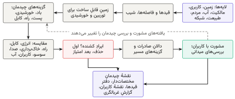
قاعدهٔ این فصل. هر لایه و هر قید یک ردیف در دفترِ قیدها میگیرد با منبع، تاریخ، دقت، مالک و راهِ وارسی (مثال 14.44). لایهای بی اینها شایعه است؛ قیدی که وارسیاش معلوم نیست، بسته نمیشود.
- غربالگری و ریزجانمایی چه فرقی دارند؟
- چرا جابهجاییِ توربین در مرحلهٔ غربالگری ارزان است؟
- هر ردیفِ دفترِ قیدها چه ستونهایی دارد؟
14.2.2 لایهها و شاهدها
ایده. غربالگری با لایههای مکانی کار میکند: هر لایه یک موضوع (زمین، کاربری، راه، آب، سکونتگاه، طبیعت، میراث، شبکه) در یک دستگاهِ مختصاتِ مشترک. سه پرسش برای هر لایه: (الف) از کجا آمده (تصویرِ ماهوارهای، نقشهٔ رسمی، پیمایشِ میدانی، گفتوگو)؛ (ب) کِی (کاربری با فصل و سال عوض میشود)؛ (ج) با چه دقتی (تفکیکِ مکانی و خطای موقعیت). این فصل در دستگاهِ محلیِ متری کار میکند (شرق و شمال از گوشهٔ جنوبغربیِ پنجره) چون ساختگاهِ ساختگی مختصاتِ جغرافیایی ندارد؛ پروژهٔ واقعی در دستگاهِ تصویرِ نقشهبرداریشده کار میکند (فصلهای ۳ و ۲۹).
layer inventory of the screening window (synthetic, A-259):
window 13.0 x 7.0 km, raster 50 m; project land west of x = 9 km: 6,300 ha
land use and tenure (screening survey, to verify with users):
private farm 1 168 ha
private farm 2 100 ha
customary grazing (Apr-Oct) 780 ha
village lands 396 ha
corridor farmland 544 ha
state rangeland (rest) 4,856 ha
dwellings: 4 isolated (one seasonal) and 25 in the village
points: spring, raptor nest, wetland, cemetery, caravanserai ruin
lines: road, village track, 20 kV line, irrigation channel, wadi
each layer carries its source, date, accuracy and owner in the
constraint register; a layer without them is a rumour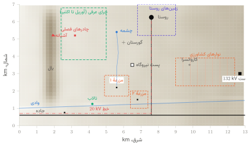
مثال 14.1 (پنجرهٔ سیزده در هفت) پرسش. فهرستِ لایههای پنجرهٔ غربالگری را با مساحتِ هر کاربری و مالکیت بنویسید (A-259).
پاسخ. خروجیِ بالا و شکل 14.2: زمینِ پروژه 6,300 ha؛ دو مزرعهٔ خصوصی 168 و 100 ha، چرای عرفیِ فصلی 780 ha، زمینهای روستا 396 ha، نوارهای کشاورزیِ سمتِ صادرات 544 ha، بقیه مرتعِ دولتی؛ روستای ۲۵ خانه، سه خانهٔ پراکنده و چادرهای فصلی.
تفسیر. «مرتعِ دولتی» یعنی مالکیتِ رسمیِ دولت، نه نبودِ کاربر: همان زمین را گلهداران بهطورِ عرفی میچرانند و چادرهایشان فقط در فصلِ چرا دیده میشود. تصویرِ ماهوارهایِ زمستان چادرها را نشان نمیدهد؛ گفتوگو با مردم نشان میدهد (بخش 14.14). وارسی: \(168 + 100 + 780 + 396 + 4{,}856 = 6{,}300\) (ha، درست).
- سه پرسشِ هر لایه را بنویسید.
- چرا تصویرِ ماهوارهای کاربریِ فصلی را ممکن است نشان ندهد؟
- مالکیتِ رسمی و کاربریِ عرفی چه فرقی دارند؟
14.2.3 زمین، شیب و جریانِ باد
ایده. شکلِ زمین سه کار میکند: باد را روی تپه تندتر و در درّه کندتر میکند؛ راه و سکو را روی شیب گران میکند؛ و آب را در آبراههها جمع میکند. برای تپههای کمشیب و نرم، افزایشِ نسبیِ تندی تقریباً با ارتفاعِ تپه نسبت به اطراف تقسیم بر طولِ افقیِ آن متناسب است (معادلهٔ 14.1)؛ برای شیبهای تند و جدایشِ جریان این تقریب نادرست است و مدلِ جریانِ وارسیشده لازم است.
\[ \frac{\Delta v}{v} \approx 2\,\frac{H}{L} . \tag{14.1}\]
def hill_speedup(z: np.ndarray, cell: float, length: float,
factor: float = 2.0, limit: float = 0.3) -> np.ndarray:
"""Teaching speed-up over low, smooth hills: the fractional change of
the wind speed is about factor x (local height above the surroundings)
/ (horizontal length scale). Valid only for gentle slopes without flow
separation; real projects use a validated flow model (chapter 14)."""
n = max(int(round(length / cell)), 1)
around = ndimage.uniform_filter(z, size=2 * n + 1, mode="nearest")
return np.clip(factor * (z - around) / length, -limit, limit)terrain of the project land (synthetic, A-259):
height 1170 .. 1262 m; ridge crest about 1257 m
slope class share of land
0-2 % 81.9 %
2-5 % 6.0 %
5-10 % 7.1 %
10-15 % 4.9 %
> 15 % 0.1 %
teaching speed-up at the crest +9.4 %, on the plain -0.1 %
slopes steer roads, pads and PV tables; the crest's speed-up
is energy, its flanks are access and earthworksمثال 14.2 (یال در غرب، دشت در شرق) پرسش. ردهٔ شیبِ زمینِ پروژه و افزایشِ آموزشیِ تندی روی یال و دشت را حساب کنید.
پاسخ. خروجیِ بالا: حدودِ 82 % زمین زیرِ 2 % شیب و 5 % بالای 10 %؛ افزایشِ تندی روی یال +9.4 %، روی دشت تقریباً صفر.
تفسیر. نه درصد تندیِ بیشتر یعنی حدودِ پانزده درصد انرژیِ بیشتر (حساسیتِ 1.6، فصلِ ۱۳). اما عددِ یال بزرگترین عدمِ قطعیتِ این فصل است: رابطهٔ ساده برای جای دکل (دشت) کالیبره نشده و یال با دکلِ دشت فاصله دارد (U-049). پیش از تکیه بر آن، دکلِ دوم یا لیدار روی یال و مدلِ جریانِ وارسیشده لازم است. وارسی: E10: تپهٔ 40 m با طولِ 800 m: \(2 \times 40/800 = 10\ \%\).
- سه اثرِ شکلِ زمین بر نیروگاه را بنویسید.
- چرا معادلهٔ 14.1 برای شیبهای تند معتبر نیست؟
- چرا افزایشِ تندیِ یال پیش از اندازهگیری روی آن قابلِ تکیه نیست؟
14.2.4 زبری، مانع و تفکیکِ داده
ایده. زبری (فصلهای ۲ و ۱۳) نیمرخِ باد را میسازد: باغ، روستا و جنگل آن را بزرگتر از مرتع میکنند و باد را در ارتفاعِ کم کند. مانعهای نزدیک (ساختمان، ردیفِ درخت، صخره) دنبالهای مانندِ توربین دارند. هر دو با تفکیکِ داده محدودند: مدلِ زمینِ درشت شیبهای تند را صاف میکند و زمینِ قابلِ ساخت را بیش از واقع نشان میدهد.
terrain-model resolution and slope (same terrain):
50 m raster: steepest 15.3 %, area above 10 % 5.0 %
200 m raster: steepest 13.2 %, area above 10 % 4.8 %
a coarse model smooths the steep cells away: it overstates the
buildable land and understates road gradients; screening uses
what exists, micro-siting needs a survey (chapter 29)مثال 14.3 (پنجاه متر یا دویست متر) پرسش. بیشترین شیب و سهمِ زمینِ بالای 10 % را با مدلِ زمینِ 50 m و همان زمین با تفکیکِ 200 m مقایسه کنید.
پاسخ. خروجیِ بالا: بیشترین شیب 15.3 در برابرِ 13.2 %؛ سهمِ بالای 10 %: 5.0 در برابرِ 4.8 %.
تفسیر. در این زمینِ نرم تفاوت کوچک است؛ در زمینِ ناهموار، مدلِ درشت شیبهای تندِ کوتاه (کنارهٔ آبراهه، صخره) را کاملاً پنهان میکند و راه یا سکویی که روی نقشه شدنی است در میدان شدنی نیست. قاعده: غربالگری با دادهٔ موجود، ریزجانمایی با نقشهبرداریِ میدانی (فصلِ ۲۹)، و ثبتِ تفکیکِ هر لایه در دفترِ قیدها. وارسی: میانگینگیری روی سلولِ بزرگتر بیشینه را کم میکند، پس \(13.2 < 15.3\) (درست).
- زبری و مانع چه اثری بر باد دارند؟
- چرا مدلِ زمینِ درشت شیب را کم نشان میدهد؟
- تفکیکِ لایه کجا ثبت میشود؟
14.2.5 زمین، مالکیت و کاربری
ایده. دسترسی به زمین سه لایه دارد: مالکیتِ رسمی (سند، ثبت، زمینِ دولتی)، حقِ استفادهٔ رسمی (اجاره، پروانهٔ چرا) و کاربریِ عرفی (چرای فصلی، راهِ گله، برداشتِ آب و هیزم، گورستان) که ممکن است هیچ سندی نداشته باشد اما معیشتِ خانوادهها به آن بسته است. غربالگری هر سه را نقشه میکند و زمین را فقط «قطعهٔ ثبتی» نمیبیند. راهِ دسترسی به زمین (خرید، اجاره، حقِ ارتفاق، توافق) و قواعدش کشوری است (فصلهای ۵۵ تا ۵۷)؛ اصولِ پرهیز از جابهجاییِ اجباری و جبرانِ معیشت در بخشِ چ و فصلِ ۳۳ میآیند.
- سه لایهٔ دسترسی به زمین را نام ببرید.
- چرا کاربریِ عرفی در نقشهٔ ثبتی دیده نمیشود؟
- کدام بخشهای این کتاب قواعدِ کشوری و اصولِ اجتماعی را میدهند؟
14.2.6 فاصلهها و زمینِ قابلِ ساخت
ایده. هر قید یک فاصله (حریم) میسازد: از خانه برای صدا، سوسو و ایمنی؛ از راه و خطِ برق برای افتادنِ احتمالیِ برج یا پرتابِ یخ (فصلِ ۱۱)؛ از آشیانه، تالاب، چشمه، گورستان و آبراهه برای حفاظت. شیب هم قید است: برای توربین به دلیلِ راه و سکو، برای خورشیدی به دلیلِ میزها. زمینِ قابلِ ساخت آن چیزی است که پس از همهٔ قیدها میماند. فاصلههای این فصل آموزشیاند (A-260)؛ برخی کشورها فاصله را به ارتفاعِ نوک یا قطرِ روتور میبندند، برخی عدد میدهند، برخی فقط حدِ صدا و سوسو.
buildable land after the teaching setbacks (A-260, verify with
the authority; distances in m):
turbines: buildable 4,304 ha of 6,300 ha
largest exclusions: dwelling 678 ha; 20 kV line 660 ha;
road 582 ha; slope 318 ha
PV: buildable 4,828 ha of 6,300 ha
largest exclusions: slope 764 ha; wadi 270 ha;
private farm 1 168 ha; road 146 ha
turbine setbacks used: dwelling 600, road 193 (1.1 x tip),
20 kV line 262, nest 1000, slope 10 %
exclusions overlap: the shares do not add up; the binding
constraint differs between the ridge and the plain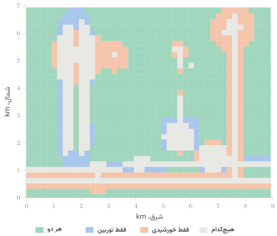
مثال 14.4 (چه چیزی زمین را میبندد) پرسش. با فاصلههای آموزشیِ A-260 و حدِ شیبِ 10 % برای توربین و 5 % برای خورشیدی، زمینِ قابلِ ساخت را بیابید و بزرگترین قیدها را نام ببرید.
پاسخ. خروجیِ بالا و شکل 14.3: توربین 4,304 ha، خورشیدی 4,828 ha از 6,300 ha؛ برای توربین فاصله از خانه، خطِ 20 kV و راه، برای خورشیدی شیب و وادی.
تفسیر. دو نکته: (الف) قیدها همپوشانی دارند و جمعِ سهمها معنا ندارد؛ برای فهمِ اثرِ هر قید، آن را برمیداریم و زمینِ آزادشده را میشماریم. (ب) زمینِ قابلِ ساخت زیاد است، اما هر جای آن یکسان نیست: باد، فاصله تا پست، دسترسی و کاربرانِ آن فرق دارند؛ بخشهای ب تا چ از این زمین چیدمان میسازند. فاصلهٔ راه برابرِ \(1.1 \times 175 = 193\ \text{m}\) است (E02).
- چهار دلیلِ فاصلهگذاری را بنویسید.
- چرا جمعِ سهمِ قیدها معنا ندارد؟
- چرا زمینِ قابلِ ساختِ بزرگ هنوز جای چیدمان را تعیین نمیکند؟
14.2.7 آب: منبع، فصل و مصرفهای موجود
ایده. نیروگاهِ بادی–خورشیدی آب کم مصرف میکند اما صفر نیست: بتنِ پیها، غبارنشانیِ راهها در ساخت، و شستوشوی ماژولها در بهرهبرداری (فصلِ ۱۰). پرسشِ غربالگری این نیست که آب «هست»؛ این است که آبِ کیست و کِی. چشمه، چاه و آبراهه مصرفکنندهٔ موجود دارند؛ دبیِ آنها با فصل تغییر میکند؛ حقِ برداشت و مجوز کشوری و پروژهای است و باید وارسی شود.
water: the spring against existing uses and the plant (A-261):
month flow L/s existing uses spare
Jan 4.0 1.5 +2.5
Feb 4.5 1.5 +3.0
Mar 5.5 1.5 +4.0
Apr 6.0 1.5 +4.5
May 5.0 4.0 +1.0
Jun 3.5 4.0 -0.5
Jul 2.5 4.0 -1.5
Aug 2.0 4.0 -2.0
Sep 2.0 4.0 -2.0
Oct 2.5 1.5 +1.0
Nov 3.0 1.5 +1.5
Dec 3.5 1.5 +2.0
construction 12,204 m3 (concrete 1,404, dust 10,800); cleaning 843 m3/yr
dust suppression alone needs 0.46 L/s on working days
in Jul-Sep the spring has no spare water: the plant must not
draw on it;
options: a licensed well, treated water trucked in, dry or
robotic cleaning; rights and permits are verified, not assumed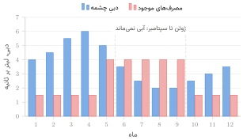
مثال 14.5 (چشمهای که تابستان خالی است) پرسش. با دبیِ آموزشیِ چشمه و مصرفهای موجود (A-261)، آبِ آزادِ هر ماه را بیابید و آن را با نیازِ ساخت (بتن و غبارنشانی) و شستوشوی سالانه مقایسه کنید.
پاسخ. خروجیِ بالا و شکل 14.4: از ژوئن تا سپتامبر −0.5 تا −2.0 L/s کمبود؛ نیازِ ساخت حدودِ 12,200 m³ (بیشترش غبارنشانی)، شستوشو حدودِ 840 m³ در سال؛ غبارنشانی بهتنهایی 0.46 L/s در روزهای کاری.
تفسیر. همان ماههایی که ساختِ پروژه در اوج است (فصلِ خشک)، چشمه برای روستا، گله و مزرعه هم کم است. برداشت از آن، حتی کم، یعنی رقابت با معیشتِ مردم. پس گزینهها: چاهِ مجوزدار با آزمایشِ پمپاژ و پایشِ اثر بر چشمه، آبِ تصفیهشدهٔ حملشده، غبارنشانیِ کمآب، و شستوشوی خشک یا رباتیک. هر گزینه در دفترِ قیدها (C-04، C-12) با مالک و وارسی میآید. وارسی: \(40\ \text{m}^3/86{,}400\ \text{s} = 0.46\ \text{L/s}\) (E14، درست).
- سه مصرفِ آبِ نیروگاه را نام ببرید.
- پرسشِ درستِ غربالگریِ آب چیست؟
- سه گزینه برای تأمینِ آب بدونِ رقابت با چشمه بنویسید.
14.2.8 شبکه، راه و بررسیها
ایده. دو لایهٔ دیگر جای نیروگاه را تعیین میکنند: شبکه (فاصله تا پستِ موجود، ظرفیتِ آزاد، جای خالیِ بی، مسیرِ خط) و دسترسی (جادهای که پرههایی به طولِ 73 m را تا ساختگاه برساند: شعاعِ پیچ، پل، شیب). هیچکدام از دفتر حل نمیشود: پاسخِ شبکه از بهرهبردارِ شبکه و پیشنهادِ اتصال میآید (فصلهای ۲۷ و ۲۸، U-054)، پاسخِ دسترسی از بررسیِ مسیرِ حمل (فصلِ ۳۱). این فصل فقط مسیرِ خطِ صادرات را تا پستِ موجود غربال میکند (بخشِ ث).
بررسیهای لازم پیش از تثبیت. نقشهبرداریِ توپوگرافی، ژئوتکنیک (فصلِ ۲۹)؛ یک سال بررسیِ پرنده و خفاش (فصلِ ۳۳، U-051)؛ آبشناسیِ وادی و چشمه؛ میراثِ فرهنگی؛ نقشهبرداریِ مشارکتیِ کاربرانِ زمین (U-052)؛ صدا و سوسو با مدلِ کامل؛ ارزیابیِ هوانوردی و رادار (U-055). هر بررسی یک یا چند ردیفِ دفترِ قیدها را میبندد.
- چهار پرسشِ لایهٔ شبکه را بنویسید.
- چرا دسترسی با «جادهٔ موجود» پاسخ داده نمیشود؟
- پنج بررسیِ لازم پیش از تثبیتِ چیدمان را نام ببرید.
14.3 الف۲. سامانهٔ اطلاعاتِ مکانی در عمل
غربالگری روی سامانهٔ اطلاعاتِ مکانی انجام میشود: نرمافزاری که لایهها را در یک دستگاهِ مختصات روی هم میگذارد، اندازه میگیرد و میپرسد. این بخش سه مهارتِ پایه را میدهد که هر مهندسِ پروژه، حتی بیآنکه خودش کارشناسِ این سامانه باشد، باید بداند: اندازهگیری روی زمینِ کروی، وارسیِ کیفیتِ لایه، و ثبتِ فرادادهٔ آن.
14.3.1 فاصله و مساحت روی کره
ایده. طول و عرضِ جغرافیایی زاویهاند، نه طول. یک درجهٔ عرض همهجا حدودِ 111 km است، اما یک درجهٔ طول با کسینوسِ عرض کوتاه میشود: در عرضِ 34° حدودِ 92 km. برای پنجرهای چند کیلومتری، یک صفحهٔ تختِ محلی (شرق و شمال از یک نقطهٔ مرجع، فصلِ ۳) کافی است؛ برای طراحی و پیادهکردن، دستگاهِ تصویرِ نقشه با مبنای معین (فصلِ ۲۹).
distances and areas on a flat local patch (latitude 34 N):
13 km east-west: great circle 13,000.0 m (flat patch exact
along the reference parallel)
diagonal to 0.06 deg north: flat 14,612.0 m, great circle 14,607.9 m
(+4.1 m, +0.028 %)
a 0.01 x 0.01 deg cell: 102.5 ha; computed in degrees as if
square: 123.6 ha (+21 %)
over a 13 km window a flat patch errs by a few metres: fine
for screening, not for setting out; areas and lengths are never
computed in degrees; design and survey use a projected grid
with a stated datum (chapter 29)مثال 14.6 (بیست و یک درصد خطا با درجه) پرسش. در عرضِ 34°، (الف) خطای صفحهٔ تخت را برای فاصلهای قطریِ حدودِ 15 km بیابید؛ (ب) مساحتِ سلولِ 0.01° در 0.01° را درست و با «درجه مانندِ طول» حساب کنید.
پاسخ. خروجیِ بالا: (الف) +4.1 m در 14.6 km (0.03 %)؛ (ب) 102.5 ha درست، 123.6 ha با درجه (+21 %).
تفسیر. خطای صفحهٔ تخت برای غربالگری بیاهمیت است اما برای پیادهکردنِ پیِ توربین نه. خطای دوم بزرگ و رایج است: کسی که مساحت را در نرمافزار با مختصاتِ جغرافیایی حساب کند، زمین را بیست درصد بیشتر نشان میدهد. قاعده: همهٔ اندازهگیریها در دستگاهِ تصویرشده، با نامِ دستگاه و مبنا در فرادادهٔ هر لایه. وارسی: \(1/\cos 34^\circ = 1.206\)، یعنی +21 % (درست).
- یک درجهٔ طول در عرضِ 34° چند کیلومتر است؟
- چرا مساحت نباید با درجه حساب شود؟
- صفحهٔ تختِ محلی برای چه کاری کافی و برای چه کاری ناکافی است؟
14.3.2 کیفیتِ لایه و فراداده
ایده. هر لایه پیش از استفاده وارسی میشود، همانگونه که دادهٔ دکل وارسی شد (فصلِ ۱۳): آیا در جای درست است (با یک نقطهٔ معلوم مقایسه)؟ آیا تاریخش مناسب است؟ آیا همهچیز را پوشانده (مرزِ پنجره، شکاف)؟ آیا با لایهٔ دیگر میخواند (جاده روی تصویر، آبراهه روی مدلِ زمین)؟ نتیجه در فراداده ثبت میشود:
| ستونِ فراداده | نمونه برای لایهٔ «سکونتگاهها» |
|---|---|
| نام و موضوع | سکونتگاههای دائمی و فصلی |
| منبع | تصویرِ ماهوارهای + پیمایشِ میدانی + گفتوگو با گلهداران |
| تاریخ و فصل | تصویر: زمستان؛ پیمایش: بهار؛ گفتوگو: تابستان |
| دستگاهِ مختصات و مبنا | دستگاهِ محلیِ پروژه (در پروژهٔ واقعی: نامِ دستگاهِ تصویر) |
| دقتِ موقعیت | حدودِ ده متر (پیمایش با گیرندهٔ دستی) |
| کامل بودن | چادرها فقط در فصلِ چرا؛ سالهای دیگر ممکن است جای دیگر باشند |
| مالکِ لایه و نسخه | مسئولِ اجتماعی، نسخهٔ A |
| محدودیت و راهِ وارسی | تأیید با خانوادهها در نقشهبرداریِ مشارکتی (U-052) |
پروندهها. لایهها در قالبهای باز ذخیره میشوند (جدولِ مختصات، قالبهای برداری و رستریِ استاندارد)، با نامِ ثابت، نسخه و چکیدهٔ رمزنگاشتی (فصلِ ۵)؛ برنامهٔ غربالگری مانندِ برنامههای این کتاب از پروندهها میخواند و خروجی را با همان نسخه برچسب میزند. این همان ردیابیپذیری است: هر عددِ گزارشِ غربالگری به لایه، نسخه و برنامهای برمیگردد که آن را ساخت.
- چهار وارسیِ کیفیتِ لایه را نام ببرید.
- هشت ستونِ فراداده را بنویسید.
- ردیابیپذیریِ عددِ گزارش یعنی چه؟
14.4 الف۳. از دکل تا هر توربین: مدلِ جریان و پیشبینیِ متقابل
دکلِ فصلِ ۱۳ باد را در یک نقطه اندازه گرفت. هر توربین جای دیگری است: دورتر، بالاتر یا پایینتر، در زمینی که ممکن است ناهموارتر باشد. مدلِ جریان باد را از دکل به جای هر توربین میبرد و این پیشبینیِ متقابل خطایی دارد که با فاصله و تفاوتِ جا بزرگ میشود.
14.4.1 اعتبارِ مدلِ جریان و ناهمواری
ایده. مدلهای خطیِ جریان (مانندِ رابطهٔ سادهٔ معادلهٔ 14.1 و مدلهای کاملترِ همخانوادهٔ آن) برای تپههای نرم خوباند و جایی که جریان از سطح جدا میشود (دامنههای تند، صخره) خطا میکنند. یک شاخصِ منتشرشده برای این مرز شاخصِ ناهمواری است: سهمِ زمینِ تندتر از حدودِ سی درصد در شعاعی چند کیلومتری. هرچه این شاخص در جای توربین با جای دکل بیشتر فرق کند، پیشبینیِ متقابل نامطمئنتر است؛ در زمینِ ناهموار، مدلهای عددیِ دینامیکِ سیالات و دکلهای بیشتر لازماند.
14.4.2 پیشبینیِ متقابل از دکل
ایده. عدمِ قطعیتِ بردنِ باد از دکل به توربین را اینجا با یک مدلِ آموزشی (A-265) میسنجیم: جزئی ثابت، جزئی برای هر کیلومتر فاصله، جزئی برای هر ده متر تفاوتِ ارتفاع و جزئی برای تفاوتِ ناهمواری. ضریبهای واقعی از اعتبارسنجیِ مدلِ جریان روی دکلهای متعدد میآیند و مهندسِ مستقل آنها را بازبینی میکند (فصلِ ۱۶).
cross-prediction from the mast to the turbines (A-265, teaching):
ruggedness index (share steeper than 30 % within 3.5 km): site max 0.0 %
the same terrain three times steeper: max 17.8 %
layout mean km mean |dz| m u(speed) mean max
W1 ridge (1 row) 2.84 57.2 7.64 % 8.54 %
W2b plain, adjusted 1.22 2.5 1.35 % 1.95 %
the ridge turbines are far from the mast and 60 m higher: the
speed carried to them is about five times less certain than to
the plain turbines;
a second mast or a lidar on the ridge would buy it back
(U-049); real projects use a validated flow model and its
documented cross-prediction errorsمثال 14.7 (پنج برابر نامطمئنتر روی یال) پرسش. با دکل در میانهٔ دشت (\((4.2, 3.6)\ \text{km}\))، فاصله، تفاوتِ ارتفاع و عدمِ قطعیتِ آموزشیِ تندی را برای توربینهای W1 و W2b حساب کنید و شاخصِ ناهمواری را برای این زمین و زمینی سه برابر تندتر بیابید.
پاسخ. خروجیِ بالا: شاخصِ ناهمواری در این زمین صفر (هیچ شیبی بالای 30 % نیست) و در زمینِ سهبرابر حدودِ 18 %؛ W1 میانگینِ 2.8 km و 57 m بالاتر با عدمِ قطعیتِ 7.6 %؛ W2b 1.2 km و 2.5 m با 1.35 %.
تفسیر. این همان U-049 است، حالا با عدد: برای W2b جزئِ کوچکی به بودجهٔ عدمِ قطعیتِ فصلِ ۱۳ افزوده میشود؛ برای یال، جزئی بزرگتر از کلِ بودجهٔ تندیِ دکل (2.6 %). یعنی حتی اگر بررسیِ پرنده یال را آزاد کند، انرژیِ بیشترِ یال بدونِ اندازهگیری روی آن با P90ِ پایینی همراه است (فصلِ ۱۶). وارسی: برای توربینی 1 km دور و همتراز: \(0.5 + 0.5 \times 1 = 1.0\ \%\).
- مدلِ خطیِ جریان کجا خطا میکند؟
- شاخصِ ناهمواری چه چیزی را میسنجد؟
- چرا عدمِ قطعیتِ یال انرژیِ بیشترش را در P90 کمارزش میکند؟
14.5 ب. اصولِ چیدمانِ باد و خورشیدی
14.5.1 دو چیدمان روی زمین: یال یا دشت
ایده. فصلِ ۱۱ دنباله را روی زمینِ تخت و برای چیدمانهای هندسی حساب کرد (D-015). روی زمینِ واقعی دو چیز اضافه میشود: افزایشِ تندی روی تپه (معادلهٔ 14.1) که برای هر توربین فرق دارد، و محدودیتِ جا که چیدمانِ آرمانی را میشکند. اینجا دو چیدمانِ نامزد را مقایسه میکنیم: W1 یک ردیفِ دوازدهتایی روی یال (عمود بر بادِ غالب، فاصلهٔ 2.8D)، و W2 دو ردیفِ ششتایی روی دشت (فاصلهٔ 4D در ردیف و 8D میانِ ردیفها). انرژی با گلِ بادِ سالِ بسته، چگالیِ توپی، ضریبِ بلندمدتِ D-017 و مدلِ دنبالهٔ فصلِ ۱۱ حساب میشود.
farm energy of the two candidate layouts (data year x long-term
factor 1.0277, hub density, teaching speed-up, Jensen wakes):
layout speed-up free GWh waked GWh wake loss
W1 ridge (1 row) +9.3 % 238.08 236.89 0.50 %
W2 plain (2 rows) -0.2 % 205.06 193.06 5.85 %
the ridge row without its speed-up: 204.69 GWh
the hill adds 16 % to the ridge's energy and the single row
across the wind loses little to wakes; the plain loses more
behind its front row; the teaching speed-up is the largest
uncertainty of the ridge (a flow model and a second mast)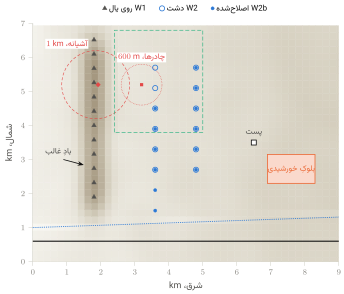
مثال 14.8 (شانزده درصد از تپه) پرسش. انرژیِ بلندمدتِ دو چیدمان، تلفِ دنباله و سهمِ تپه را حساب کنید.
پاسخ. خروجیِ بالا و شکل 14.5: W1 236.9 GWh با تلفِ دنبالهٔ 0.50 %؛ W2 193.1 GWh با 5.85 %؛ یال بی افزایشِ تندی 204.7 GWh، پس تپه حدودِ 16 % میافزاید.
تفسیر. یال از هر دو جهت برنده است: بادِ تندتر و ردیفی عمود بر باد که کمتر دنباله میگیرد. اگر غربالگری فقط انرژی را ببیند، همینجا تمام است؛ بخشهای پ تا چ نشان میدهند چرا تمام نیست. دو هشدار: عددِ تپه از رابطهٔ آموزشی است و تلفِ کمِ یال فرض میکند بادِ شمالی و جنوبی نادر است، که گلِ بادِ این ساختگاه تأیید میکند (فصلِ ۱۳). وارسی: \(236.89/204.69 = 1.157\) (درست).
- چرا یک ردیفِ عمود بر باد دنبالهٔ کمی میگیرد؟
- در چه گلِ بادی ردیفِ یال تلفِ دنبالهٔ بزرگ میگیرد؟
- چرا عددِ تپه بزرگترین عدمِ قطعیتِ این مقایسه است؟
14.5.2 فاصلهٔ ردیفها
ایده. هرچه ردیفها دورتر، دنباله کمتر؛ اما زمین، کابل و راه بیشتر. فاصلهٔ بهینه مصالحه است، نه قاعده. یک درسِ عددی هم در این مثال است: مدلِ دنبالهٔ ساده (کمبودِ یکنواخت در یک مخروط، «همه یا هیچ») با گلِ بادِ درشت (بخشهای دهدرجهای) پرش میکند: چند درجه جابهجاییِ جهت، توربین را از دنباله بیرون یا به آن وارد میکند. نتیجه نباید به اندازهٔ بخش بستگی داشته باشد؛ اینجا بخشهای دودرجهای به کار رفته است.
wake loss of two rows of six against the row spacing (4D along
the row, rows across the prevailing wind, flat ground):
rows apart wake loss farm GWh
3 D 11.62 % 181.77
4 D 10.21 % 184.67
5 D 8.70 % 187.79
6 D 7.49 % 190.27
8 D 6.75 % 191.78
10 D 5.19 % 194.99
the loss falls with spacing, quickly at first and then slowly;
land, cable and road grow with it: the choice is an optimum,
not a rule (with 10 deg direction bins this top-hat model
jumps up and down: the result must not depend on the bins)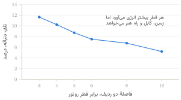
مثال 14.9 (از سه تا ده قطر) پرسش. تلفِ دنباله و انرژیِ دو ردیف را برای فاصلهٔ 3D تا 10D میانِ ردیفها حساب کنید.
پاسخ. خروجیِ بالا و شکل 14.6: از 11.6 % در 3D تا 5.2 % در 10D؛ از 3D تا 8D حدودِ 10 GWh در سال بیشتر.
تفسیر. ده گیگاواتساعت در سال در برابرِ چند کیلومتر کابل و راهِ بیشتر و زمینِ بزرگتر: این مقایسه در فصلهای ۲۱ و ۲۲ با هزینه کامل میشود. با بخشهای دهدرجهای همین مدل 3D و 4D را بدتر از 5D تا حدودِ دو برابر نشان میداد؛ یعنی خطای مدلسازی میتواند تصمیمِ چیدمان را عوض کند. وارسی: E05: کمبودِ تکدنباله در 5D با \(C_T = 0.8\) برابرِ 0.246 است.
- چرا فاصلهٔ ردیف مصالحه است؟
- چرا مدلِ «همه یا هیچ» با بخشهای درشت پرش میکند؟
- کمبودِ دنباله در معادلهٔ 11.24 با فاصله چگونه تغییر میکند؟
14.5.3 تلاطمِ افزوده و سازگاریِ جا
ایده. پشتِ هر توربین، علاوه بر کمبودِ تندی، تلاطمِ افزوده است. تلاطمِ مؤثرِ توربینِ پاییندست از ترکیبِ تلاطمِ محیطی (فصلِ ۱۳) و افزوده ساخته میشود. یک شکلِ تجربیِ منتشرشده (فرندسن) برای یک همسایهٔ بالادست:
\[ I_\text{add} = \frac{1}{1.5 + 0.8\,(x/D)/\sqrt{C_T}}, \qquad I_\text{eff} = \sqrt{I_\text{amb}^2 + I_\text{add}^2} . \tag{14.2}\]
استانداردِ طراحی (IEC 61400-1:2019) روشِ خودش را با وزندهیِ جهت و نمای خستگی دارد؛ اینجا فقط شکلِ آموزشی است.
turbulence behind a turbine at 15 m/s (ambient representative
0.132, Ct 0.36; design curve 0.184, ch 13 A-258):
distance added effective below the design curve?
3 D 0.182 0.225 no
4 D 0.146 0.197 no
6 D 0.105 0.169 yes
8 D 0.082 0.155 yes
10 D 0.067 0.148 yes
directly behind a close neighbour the effective turbulence can
pass the design curve; it occurs only for the sectors where the
neighbour stands upwind, so the real check weights by direction
(chapter 16 and the manufacturer's site suitability)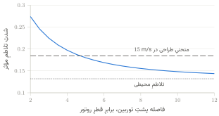
مثال 14.10 (چهار قطر کم است) پرسش. با تلاطمِ نمایندهٔ 0.132 در 15 m/s و \(C_T = 0.36\)، تلاطمِ مؤثر را در 3D تا 10D پشتِ یک توربین حساب کنید و با منحنیِ طراحیِ ساختگیِ 0.184 مقایسه کنید.
پاسخ. خروجیِ بالا و شکل 14.7: 0.225 در 3D، 0.197 در 4D، 0.169 در 6D؛ از حدودِ 5D زیرِ منحنی.
تفسیر. فاصلهٔ 4D در ردیف (عمود بر باد) برای بادِ غالب مشکلی ندارد، اما وقتی باد در امتدادِ ردیف بوزد (بخشهای نادرِ شمالی و جنوبی)، توربینها در 4D پشتِ هماند. سهمِ آن بخشها در زمان کوچک است و روشِ استاندارد آن را وزن میدهد؛ حکمِ نهایی را سازنده با محاسبهٔ بار میدهد (فصلِ ۱۶). W1 با فاصلهٔ 2.8D در ردیف همین پرسش را جدیتر دارد. وارسی: E06: در 6D تلاطمِ افزوده 0.105 است.
- تلاطمِ مؤثر از چه ساخته میشود؟
- چرا فاصلهٔ کم در ردیف برای بادِ غالب مشکل ندارد اما برای بادِ همراستا دارد؟
- چه کسی حکمِ نهاییِ سازگاریِ جا را میدهد؟
14.5.4 زمین و بلوکِ خورشیدی
ایده. بلوکِ خورشیدیِ 60 MWp با ضریبِ پوششِ 0.40 (D-013، فصلِ ۱۰) چند ده هکتار ردیف میخواهد، بهعلاوهٔ راهِ داخلی، جای ایستگاههای اینورتر، حصار و حریم. جای خوبِ بلوک: هموار (شیبِ کم، خاکبرداریِ کم)، بیسایه (افقِ باز، دور از توربین و تپه در سمتِ جنوب)، نزدیکِ پست و بیرون از آبراهه و زمینِ کشاورزی.
land of the 60 MWp block (fixed tilt, GCR 0.40, D-013):
modules 109,200 x 2.58 m2 = 28.2 ha of glass
rows at GCR 0.40: 70.5 ha; with roads, inverter stations,
fence and buffers (x 1.25, teaching): 88 ha (1.47 ha/MWp)
the screening block: 119 ha (74 % used)
trackers need more land per MWp (larger pitch), bifacial rows
gain from a higher pitch: the block size follows chapter 10مثال 14.11 (هشتاد و هشت هکتار در صد و نوزده) پرسش. زمینِ لازمِ بلوکِ خورشیدی را از شمارِ ماژولها حساب کنید و با بلوکِ غربالگری مقایسه کنید.
پاسخ. خروجیِ بالا: 28.2 ha شیشه، 70.5 ha ردیف، حدودِ 88 ha با راه و حریم (1.47 ha/MWp)؛ بلوکِ 119 ha حدودِ 74 % پر میشود.
تفسیر. حاشیهٔ 26 % بلوک جای انعطاف است: دور زدنِ لکههای پرشیب یا آبراههٔ کوچکی که نقشهبرداری پیدا میکند، یا ردیابِ تکمحوره که گامِ بزرگتری میخواهد. ضریبِ 1.25 برای راه و حریم آموزشی است؛ چیدمانِ واقعیِ بلوک در فصلهای ۱۰ و ۲۳ ساخته میشود. وارسی: E04: \(2 \times 2.278/11.4 = 0.40\) (درست).
- چهار ویژگیِ جای خوبِ بلوکِ خورشیدی را بنویسید.
- چرا ردیاب زمینِ بیشتری میخواهد؟
- حاشیهٔ بلوک برای چه نگه داشته میشود؟
14.5.5 سایهٔ توربین روی خورشیدی
ایده. نیروگاهِ هیبریدی یک خطرِ خاص دارد: توربین روی ماژول سایه میاندازد. سایهٔ برج ثابت و باریک است؛ سایهٔ روتور متحرک است و نورِ ماژول را هر دو تا چهار ثانیه یک بار کم و زیاد میکند، که هم انرژی کمی میبرد و هم ردیابِ نقطهٔ بیشینهٔ توانِ اینورتر را آشفته میکند. طولِ سایه با پایین آمدنِ خورشید زیاد میشود:
shadow of a turbine on PV (tip 175 m, latitude 34 N):
winter noon sun 32.6 deg: tip shadow 274 m to the north
sun elevation tip shadow
10 deg 992 m
15 deg 653 m
20 deg 481 m
30 deg 303 m
nearest W2 turbine to the PV block edge: about 2,100 m
a moving rotor shadow on PV costs little energy but causes
flicker on the inverters' MPP trackers; keep PV north and
north-east of turbines out of the long winter shadows or
accept and model them (chapter 15)مثال 14.12 (سایهٔ نزدیک به یک کیلومتر) پرسش. طولِ سایهٔ نوکِ پره را در ظهرِ زمستان و در ارتفاعهای 10° تا 30°ِ خورشید حساب کنید و فاصلهٔ نزدیکترین توربینِ W2 تا بلوکِ خورشیدی را بیابید.
پاسخ. خروجیِ بالا: ظهرِ زمستان 274 m به شمال؛ در 10° حدودِ 990 m؛ نزدیکترین توربین حدودِ 2,100 m از لبهٔ بلوک.
تفسیر. در عرضِ 34° شمالی، سایه رو به شمال و در صبح و عصر رو به غرب و شرق است. پس بلوکِ خورشیدی شمال، شمالغرب یا شمالشرقِ توربینها (و با خورشیدِ پایینِ صبح و عصر، غرب و شرقِ آنها) در فاصلهٔ کمتر از یک کیلومتر در خطر است؛ اینجا بلوک شرق و دور است. اگر زمین کم باشد و بلوک ناچار نزدیک باشد، سایه در مدلِ تولید (فصلِ ۱۵) وارد و جای ایستگاههای اینورتر طوری انتخاب میشود که یک رشته تنها زیرِ سایه نرود. وارسی: E09: \(175/\tan 20^\circ = 481\ \text{m}\).
- سایهٔ برج و سایهٔ روتور چه فرقی برای ماژول دارند؟
- در عرضِ شمالی، سایهٔ ظهرِ زمستان به کدام سو است؟
- اگر بلوک ناچار نزدیکِ توربین باشد، چه میکنید؟
14.5.6 کابلِ جمعآوری و زیرساختِ مشترک
ایده. توربینها با کابلِ 33 kV به پستِ نیروگاه وصل میشوند. دو برآوردِ اولیه: درختِ پوشا با کمترین طول (کوتاهترین شبکهای که همه را وصل میکند: حدِ پایین) و رشتههای شعاعی (چند توربین در هر رشته تا حدِ ظرفیتِ کابل: ساختنی). در عمل کابل کنارِ راه میرود و بلندتر است. زیرساختِ مشترکِ باد و خورشیدی (پست، راهِ اصلی، ساختمانِ کنترل، انبار، حصار) یکی از سودهای هیبرید است و جای پست را به میانهٔ این دو میبرد.
def minimum_spanning_tree(points) -> tuple[list[tuple[int, int]], float]:
"""Prim's algorithm on straight-line distances: the shortest network
that connects every point (a lower bound for a cable or road)."""
p = np.asarray(points, float)
n = len(p)
d = np.hypot(p[:, None, 0] - p[None, :, 0], p[:, None, 1] - p[None, :, 1])
used = np.zeros(n, bool)
used[0] = True
best = d[0].copy()
parent = np.zeros(n, int)
edges, total = [], 0.0
for _ in range(n - 1):
cand = np.where(used, np.inf, best)
k = int(np.argmin(cand))
edges.append((int(parent[k]), k))
total += float(cand[k])
used[k] = True
closer = d[k] < best
best = np.where(closer, d[k], best)
parent = np.where(closer, k, parent)
return edges, total33 kV collector network to the site substation (straight lines):
layout tree (MST) km radial strings km strings
W1 ridge (1 row) 9.32 18.21 3
W2 plain (2 rows) 8.91 12.63 3
four turbines per string (20 MW at 33 kV, teaching; cable
sizing in chapter 24); the tree is a lower bound, the strings
are buildable; both follow roads in practice (longer)مثال 14.13 (نه کیلومتر یا هجده کیلومتر) پرسش. طولِ درختِ پوشا و رشتههای شعاعیِ چهارتایی را برای W1 و W2 از پستِ نیروگاه حساب کنید.
پاسخ. خروجیِ بالا: درخت 9.32 و 8.91 km؛ رشتهها 18.21 و 12.63 km؛ هر کدام سه رشته.
تفسیر. درختها نزدیکِ هماند اما رشتهها نه: یال دور از پست است و هر رشته باید جدا تا آنجا بیاید. چهار توربینِ پنجمگاواتی در هر رشته عددِ آموزشی است؛ ظرفیتِ کابل و آرایشِ رشتهها در فصلِ ۲۴ طراحی میشود. اختلافِ حدودِ شش کیلومتر کابلِ 33 kV هزینه و تلفِ برقیِ واقعی دارد. وارسی: E12: درختِ چهار گوشهٔ مربعِ یککیلومتری 3 km است.
- درختِ پوشا با کمترین طول چرا حدِ پایین است؟
- چرا رشتههای یال بلندترند؟
- سه بخشِ زیرساختِ مشترکِ باد و خورشیدی را نام ببرید.
14.6 ب۲. بلوکِ خورشیدی روی زمینِ واقعی
فصلِ ۱۰ ردیفها را روی زمینِ هموار طراحی کرد. زمینِ واقعی شیب دارد، و شیب دو اثر دارد: فاصلهٔ ردیفها را برای همان سایه عوض میکند، و اگر میزها نتوانند شیب را دنبال کنند، تسطیح میخواهد.
14.6.1 ردیف روی شیب
ایده. در طراحیِ هموار، گامِ 11.4 m با میزِ 4.56 mی در 25° یعنی ردیفِ جلویی تا ارتفاعِ خورشیدِ حدودِ 14.8° روی ردیفِ پشتی سایه نمیاندازد (فصلِ ۱۰). روی شیبِ رو به شمال، ردیفِ پشتی پایینتر است و همان زاویه گامِ بیشتری میخواهد؛ روی شیبِ رو به جنوب، کمتر. با شیبِ زمین \(s\) (مثبت رو به شمال) و زاویهٔ حدیِ \(\alpha\):
\[ d = \frac{L\,(\sin\beta + \cos\beta\,\tan\alpha)}{\tan\alpha - s} . \tag{14.3}\]
PV row pitch on sloping ground, tables 4.56 m at 25 deg, same limiting
sun angle as the flat design (14.8 deg at 11.4 m pitch):
ground slope pitch m GCR land against flat
5 % to the south 9.59 0.475 -15.9 %
3 % to the south 10.24 0.445 -10.2 %
flat 11.40 0.400 +0.0 %
+3 % to the north 12.86 0.354 +12.8 %
+5 % to the north 14.05 0.324 +23.3 %
+8 % to the north 16.33 0.279 +43.3 %
a slope falling to the north lowers each row behind the one in
front: more pitch, more land; a southern slope lets rows close
up; the block goes on flat or south-facing ground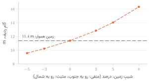
مثال 14.14 (بیست و سه درصد زمینِ بیشتر روی شیبِ شمالی) پرسش. گامِ لازم و ضریبِ پوشش را برای شیبهای 5 % رو به جنوب تا 8 % رو به شمال حساب کنید.
پاسخ. خروجیِ بالا و شکل 14.8: از 9.6 m (0.475) روی 5 % جنوبی تا 16.3 m (0.279) روی 8 % شمالی؛ 5 % شمالی +23 % زمین.
تفسیر. در غربالگری، شیبِ رو به شمال برای خورشیدی گرانتر از عددِ شیب نشان میدهد: هم زمین بیشتر و هم سایهٔ زمستانیِ بیشتر. بلوکِ نیروگاهِ P تقریباً هموار است (مثال 14.15) و این مسئله را ندارد. ردیابهای تکمحوره شیبِ شمالی–جنوبی را در امتدادِ محور تحمل میکنند تا حدی که سازنده میگوید؛ شیبِ عرضی برای آنها سایهٔ میانِ ردیفها و الگوریتمِ عقبگرد را تغییر میدهد (فصلِ ۱۰). وارسی: شیبِ صفر همان 11.4 m را میدهد (درست).
- چرا شیبِ رو به شمال گامِ بیشتری میخواهد؟
- معادلهٔ 14.3 را برای \(s = 0\) با طرحِ هموار مقایسه کنید.
- ردیابِ تکمحوره با کدام شیب کنار میآید؟
14.6.2 تسطیح یا دنبال کردنِ زمین
ایده. میزها و ردیابها معمولاً شیبهای ملایم را دنبال میکنند: پایهها کوتاه و بلند میشوند. تسطیح فقط جایی لازم است که سازه یا ردیاب حدِ شیب یا ناهمواری داشته باشد. تسطیح هزینه دارد که در قیمتِ خاکبرداری دیده نمیشود: خاکِ رویی کنده میشود، گرد و غبار بالا میرود (که خودش آلودگیِ ماژول است، فصلِ ۱۰)، فرسایش و زهکشی تغییر میکند و بازگرداندنِ پوششِ گیاهی سالها طول میکشد.
grading the PV block (119 ha) to its best-fit plane:
plane slope 0.27 % (east +0.19, north +0.19 %)
cells steeper than 2 %: 0 %; than 5 %: 0 %
cut 283,086 m3, fill 283,086 m3; mean depth 0.48 m
fixed tables and many trackers follow a gentle plane without
grading; grading strips the topsoil, raises dust and erosion and
changes drainage: grade only where the structure demands itمثال 14.15 (دویست و هشتاد هزار متر مکعب برای هیچ) پرسش. شیبِ صفحهٔ برازششده بر بلوکِ خورشیدی، سهمِ سلولهای تندتر از 2 و 5 % و حجمِ برداشت و ریختن برای صاف کردنِ بلوک روی آن صفحه را حساب کنید.
پاسخ. خروجیِ بالا: صفحه 0.27 %؛ هیچ سلولی تندتر از 2 % نیست؛ صاف کردن روی صفحه حدودِ 283,000 m³ برداشت و همانقدر ریختن، با عمقِ میانگینِ 0.48 m.
تفسیر. بلوک آنقدر هموار است که میزها بی تسطیح مینشینند؛ «صاف کردنِ کامل» حدودِ سیصد هزار متر مکعب خاک را بیدلیل جابهجا میکند. تصمیم: بیتسطیح با پایههای قابلِ تنظیم، تسطیحِ موضعی فقط برای راهها و جای ایستگاهها، و حفظِ خاکِ رویی. وارسی: صفحهٔ برازششده برداشت و ریختن را برابر میکند (کمترین مربعاتِ با عرض از مبدأ، درست).
- سه هزینهٔ پنهانِ تسطیح را نام ببرید.
- چرا صفحهٔ برازششده برداشت و ریختن را برابر میکند؟
- کجا تسطیحِ موضعی لازم است؟
14.7 ب۳. بهینهسازیِ کوچک: پله و جهت
بهینهسازیِ کاملِ چیدمان (جای هر توربین با الگوریتم) کارِ مرحلهٔ بعد است، پس از بررسیها و با مدلِ جریانِ وارسیشده. اما یک بهینهسازیِ کوچک با دو پارامتر درسهای مهمی دارد: چقدر انرژی در بازی است، بهینه کجا مینشیند، و چه چیزی آن را محدود میکند.
برنامه:
python -m companion.ch14.lab_h14.7.1 پلهپله کردنِ ردیفها
ایده. در W2 دو ردیف روبهروی هماند: باد از سمتِ غالب که بیاید، هر توربینِ ردیفِ پشتی دقیقاً در دنبالهٔ توربینِ جلویی است. اگر یک ردیف را در امتدادِ خودش جابهجا کنیم (پله)، توربینهای پشتی در فاصلهٔ میانِ توربینهای جلویی قرار میگیرند. در این ساختگاه جابهجاییِ ردیفِ غربی به جنوب یک سودِ دوم هم دارد: از چادرها دور میشود.
the west row shifted south (east row fixed), long-term energy
with the teaching speed-up:
shift m farm GWh wake loss camp dB(A) lowest west turbine y
0 193.06 5.85 % 45.4 2700 m
300 193.33 5.73 % 44.9 2400 m
600 194.73 5.05 % 44.4 2100 m
900 195.37 4.75 % 41.2 1800 m
1200 196.88 4.01 % 37.7 1500 m
1500 197.30 3.64 % 35.1 1200 m
staggering the rows lifts the energy (the rows stop shading each
other in the prevailing wind) and moves the west row away from
the camp; at 1,500 m the southern turbine stands 75 m from the
wadi, inside its 100 m buffer: the shift stops at 1,200 m, on a
constraint, where optima usually sit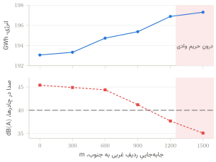
مثال 14.16 (بهینه روی مرزِ قید) پرسش. ردیفِ غربی را از صفر تا 1,500 m به جنوب ببرید؛ انرژیِ بلندمدت، تلفِ دنباله و صدا در چادرها را حساب کنید و بگویید جابهجایی کجا متوقف میشود.
پاسخ. خروجیِ بالا و شکل 14.9: انرژی از 193.06 تا 197.30 GWh و صدا از 45.4 تا 35.1 dB(A)؛ در 1,500 m جنوبیترین توربین 75 m از وادی است، درونِ حریمِ 100 m؛ پس 1,200 m (W2b) با 196.88 GWh.
تفسیر. دو هدف (انرژی و صدا) اینجا همجهتاند و هر دو به سوی مرزِ وادی میروند. بهینه روی مرزِ یک قید نشسته است، که معمول است؛ پس آن قید (حریمِ آموزشیِ 100 m) ارزش دارد که دقیق شود: اگر مطالعهٔ آبشناسی حریمِ کوچکتری را بپذیرد، 0.4 GWh دیگر و چند دسیبل کمتر در دسترس است. وارسی: W2b در این جدول با مثال 14.29 یکی است (196.88، گرد شده 196.9، درست).
- پلهپله کردن چرا تلفِ دنباله را کم میکند؟
- چرا بهینه معمولاً روی مرزِ یک قید است؟
- ارزشِ دقیقتر کردنِ حریمِ وادی را چگونه برآورد میکنید؟
14.7.2 چرخاندنِ چیدمان
ایده. ردیفها عمود بر بادِ غالب گذاشته شدند. اما گلِ باد یک جهت ندارد (فصلِ ۱۳: سه بخشِ 240 تا 330° حدودِ هفتاد درصدِ انرژی). چرخاندنِ کلِ چیدمان نشان میدهد جهت چقدر حساس است.
W2b turned about its centre, long-term energy:
turn deg farm GWh wake loss
-20 194.54 5.12 %
-10 195.63 4.59 %
+0 196.88 4.01 %
+10 196.99 4.12 %
+20 197.29 4.07 %
-20 deg costs 2.3 GWh a year; +20 deg gains 0.4 GWh:
the rows already stand nearly across the prevailing sector;
a small gain is not worth new land or a turbine nearer the
camp; orientation matters most where the wind rose is narrowمثال 14.17 (بیست درجه به چپ یا راست) پرسش. W2b را از −20° تا +20° دورِ مرکزش بچرخانید و انرژیِ بلندمدت را حساب کنید.
پاسخ. خروجیِ بالا: −20° حدودِ 2.3 GWh در سال کمتر؛ +20° حدودِ 0.4 GWh بیشتر.
تفسیر. گلِ بادِ پهن جهت را کمحساس میکند؛ سودِ کوچکِ +20° ارزشِ جابهجاییِ توربینهای شمالی به سوی چادرها یا زمینِ تازه را ندارد. در ساختگاهی با بادِ یکجهتهٔ قوی (مثلاً تنگهها)، همین آزمون چند درصد اختلاف نشان میدهد و جهت تصمیمِ مهمی میشود. وارسی: \(196.88 - 194.54 = 2.34\) (GWh، درست).
- چرا گلِ بادِ پهن جهتِ چیدمان را کمحساس میکند؟
- چرا سودِ 0.4 GWh پذیرفته نشد؟
- در چه ساختگاهی جهتِ ردیف تصمیمِ مهمی است؟
14.8 پ. ساختپذیری و اثر
14.8.1 راههای دسترسی
ایده. توربینِ 5 MW در قطعههایی به ساختگاه میرسد که هر کدام چند ده تن وزن و تا هفتاد و چند متر طول دارند. راهِ داخلی باید شیب، شعاعِ پیچ، پهنا و باربریِ کافی داشته باشد؛ عددهای دقیق را سازنده و پیمانکارِ حمل با بررسیِ مسیر میدهند (فصلِ ۳۱). در غربالگری سه پرسش داریم: طولِ راه، تندترین شیب در مسیرِ راست و تعدادِ گذر از آبراهه. شیبِ راه را باید با درونیابیِ دوخطی روی مدلِ زمین خواند؛ مقدارِ نزدیکترین سلول در مرزِ سلولها پرش میکند و شیبِ ساختگیِ تند نشان میدهد (این خطا در نخستین اجرای برنامهٔ این فصل پیش آمد: شیبِ 28 % در زمینی که بیشترین شیبش 15 % بود).
access roads from the site entrance (tree of straight edges, A-259):
layout length km steepest edges > 10 % extra km wadi
W1 ridge (1 row) 9.50 12.4 % 1 0.04 1
W2 plain (2 rows) 9.90 6.4 % 0 0.00 1
the ridge road climbs a flank steeper than 10 % (teaching limit
for blade and tower transport; the transport contractor's route
survey decides): a short zig-zag or a cut keeps the grade; both
layouts cross the wadi once, with a culvert or ford sized for
floods (chapter 29); profiles are sampled bilinearlyمثال 14.18 (یالی با یک دامنهٔ تند) پرسش. شبکهٔ راه را درختِ پوشای کمینه از درِ ورودی تا توربینها بگیرید؛ طول، تندترین شیب، طولِ اضافهٔ پیچوتاب برای نگه داشتنِ شیبِ 10 % (آموزشی) و تعدادِ گذر از وادی را برای دو چیدمان بیابید.
پاسخ. خروجیِ بالا: W1 9.50 km با شیبِ 12.4 % و حدودِ 40 m اضافه؛ W2 9.90 km با 6.4 %؛ هر دو یک گذر از وادی.
تفسیر. یالِ این ساختگاه نرم است و راهِ آن تنها یک دامنهٔ کوتاهِ تند دارد؛ در زمینِ کوهستانی همین پرسش ممکن است کیلومترها راهِ پیچوتابدار، خاکبرداریِ بزرگ و دیوارِ حائل بسازد. گذر از وادی برای هر دو لازم است: آبرو یا گذرگاهِ سیلپذیر که با مطالعهٔ آبشناسی اندازه میگیرد (فصلِ ۲۹). وارسی: E13: صعودِ 60 m با شیبِ 10 % دستکم 600 m راه میخواهد.
- چهار ویژگیِ راهِ حملِ توربین را نام ببرید.
- چرا شیب باید با درونیابیِ دوخطی خوانده شود؟
- گذر از وادی چه مطالعهای لازم دارد؟
14.8.2 سکوی جرثقیل و خاکبرداری
ایده. کنارِ هر توربین یک سکوی جرثقیل تراز و متراکم لازم است. روی شیب، سکو با برداشتن از سمتِ بالا و ریختن در سمتِ پایین تراز میشود. برای زمینِ تقریباً صاف با شیبِ \(s\) و سکوی \(L \times W\) (طولِ \(L\) در جهتِ شیب)، اگر ترازِ سکو میانگینِ زمین باشد:
\[ V_\text{cut} = V_\text{fill} = \frac{W\,s\,L^2}{8} . \tag{14.4}\]
crane pads 45 x 30 m on the local slope (planar, balanced):
layout mean slope steepest cut = fill m3 (total)
W1 ridge (1 row) 2.4 % 7.2 % 2,174
W2 plain (2 rows) 0.6 % 0.9 % 522
the crest is flat enough; the flanks are not: a pad on a 7 %
slope moves about 530 m3 each way, and the crane's ground
bearing and the pad's level tolerance come from the crane
supplier and the geotechnical survey (chapters 29 and 45)مثال 14.19 (چهار برابر خاک روی یال) پرسش. حجمِ خاکبرداریِ سکوهای 45 × 30 m را برای دو چیدمان از شیبِ محلی حساب کنید.
پاسخ. خروجیِ بالا: W1 حدودِ 2,170 m³ و W2 حدودِ 520 m³ در هر سو (برداشت برابرِ ریختن).
تفسیر. عددها کوچکاند چون یال صاف است؛ اما نسبت مهم است: هر سکو روی دامنه چند برابرِ دشت خاک جابهجا میکند. پی (حدودِ هزار متر مکعب گودبرداری برای هر توربین) در هر دو یکسان است. باربریِ خاک زیرِ پایههای جرثقیل و رواداریِ ترازِ سکو را سازندهٔ جرثقیل و مطالعهٔ ژئوتکنیک میدهند (فصلهای ۲۹ و ۳۱). وارسی: E11: سکو روی شیبِ 5 %: \(30 \times 0.05 \times 45^2/8 = 380\ \text{m}^3\).
- معادلهٔ 14.4 را از هندسهٔ دو گوه به دست آورید.
- چرا ترازِ میانگین برداشت و ریختن را برابر میکند؟
- باربریِ سکو را چه کسی تعیین میکند؟
14.8.3 آبراهه، تسطیح و زهکشی
ایده. در اقلیمِ خشک، وادی بیشترِ سال خشک است و در یک بارانِ تند سیلِ ناگهانی میبرد. راه و کابل که از آن میگذرند به آبرو یا گذرگاهِ سیلپذیر نیاز دارند؛ بلوکِ خورشیدی و پست باید بیرون از پهنهٔ سیل باشند (حریمِ آموزشیِ 150 m برای خورشیدی در مثال 14.4). تسطیحِ زمینِ خورشیدی جریانِ آب را تغییر میدهد: ردیفها میتوانند آب را جمع و خاک را بشویند؛ پس طرحِ زهکشی همراهِ طرحِ تسطیح است. اندازهٔ آبرو و پهنهٔ سیل از مطالعهٔ آبشناسی با دادهٔ بارش میآید (فصلِ ۲۹، C-05).
- چرا وادیِ خشک برای راه و کابل خطر است؟
- تسطیحِ زمینِ خورشیدی چه اثری بر آب دارد؟
- پهنهٔ سیل از چه مطالعهای میآید؟
14.8.4 صدا در خانهها
ایده. صدای توربین در خانهها با ترازِ توانِ صوتِ توربین، فاصله و جذبِ هوا تعیین میشود (فصلِ ۱۱، فصل 11). ترازِ چند توربین لگاریتمی جمع میشود: دو منبعِ برابر سه دسیبل بیشتر از یکیاند. غربالگری بلندترین ترازها را پیدا میکند تا مطالعهٔ کامل (زمین، باد، صدای زمینه، شب و روز) روی آنها تمرکز کند. سطحِ غربالگریِ 40 dB(A) اینجا آموزشی است، نه حد.
noise at the dwellings, all turbines at 106 dB(A) (A-234),
hemispherical spreading and air absorption (chapter 11 model):
W1 ridge (1 row): highest three
herders' camp B (seasonal) 34.9 dB(A) at 1,401 m
roadside house D 30.5 dB(A) at 1,401 m
farmhouse A 15.2 dB(A) at 3,802 m
dwellings above the 40 dB(A) screening level: 0
W2 plain (2 rows): highest three
herders' camp B (seasonal) 45.4 dB(A) at 412 m
farmhouse A 35.7 dB(A) at 943 m
roadside house D 23.2 dB(A) at 2,191 m
dwellings above the 40 dB(A) screening level: 1
the screening level is a teaching value: the applicable limit,
its time of day, the background noise and the propagation
method come from the authority and a specialist studyمثال 14.20 (چادرها در چهارصد متری) پرسش. با ترازِ توانِ صوتِ 106 dB(A) (A-234) برای هر توربین، ترازِ صدا را در همهٔ خانهها و چادرها برای دو چیدمان حساب کنید.
پاسخ. خروجیِ بالا: بیشترین در هر دو چیدمان در چادرهای فصلی: W1 34.9 dB(A) در 1,401 m؛ W2 45.4 dB(A) در 412 m، تنها سکونتگاهِ بالای سطحِ غربالگری.
تفسیر. نزدیکترین سکونتگاه به W2 یک سکونتگاهِ فصلی است که در هیچ نقشهٔ ثبتی نیست. اگر غربالگری فقط «خانه»های دائمی را ببیند، آن را از دست میدهد. چاره در بخشِ ت آمده: جابهجاییِ توربینها، نه جابهجاییِ مردم. وارسی: E07: یک توربین در 500 m: \(106 - 10\log_{10}(2\pi \cdot 500^2) - 2.5 = 41.5\ \text{dB(A)}\).
- ترازِ دو منبعِ 40 dB چند است و چرا؟
- چرا سطحِ غربالگری حد نیست؟
- چه سکونتگاههایی ممکن است در نقشهٔ ثبتی نباشند؟
14.8.5 سوسوی سایه
ایده. وقتی خورشید پشتِ روتورِ در حالِ چرخش است، سایهٔ پرهها روی پنجره و حیاط سوسو میزند. محاسبهٔ بدترین حالت هندسی است: روتور را کرهای به شعاعِ روتور میگیریم که همیشه میچرخد و رو به خورشید است و آسمان همیشه صاف؛ هر دقیقهای که خطِ خانه به خورشید از این کره بگذرد، سوسو حساب میشود. حالتِ مورد انتظار کسری از آن است (ابر، ساعتهای بیباد، جهتِ روتور). حدها (سالانه، روزانه، بدترین یا مورد انتظار) و چاره (توقفِ توربین در همان دقیقهها) کشوری و پروژهایاند.
def flicker_minutes(house, turbines, hub: float, radius: float, sun_el, sun_az,
step_min: float, z_house: float = 0.0, z_turb=None,
min_el: float = 3.0, max_dist: float = 2000.0) -> np.ndarray:
"""Geometric shadow-flicker minutes per sun position (worst case: rotor
always turning and facing the sun, sky always clear): the rotor is a
sphere of the rotor radius around the hub; the house is shaded when the
line to the sun passes through it."""
el, az = np.radians(np.asarray(sun_el)), np.radians(np.asarray(sun_az))
s = np.stack([np.cos(el) * np.sin(az), np.cos(el) * np.cos(az), np.sin(el)])
hit = np.zeros(el.shape, bool)
zt = np.zeros(len(turbines)) if z_turb is None else np.asarray(z_turb, float)
for (tx, ty), zb in zip(turbines, zt):
h = np.array([tx - house[0], ty - house[1], zb + hub - z_house])
if math.hypot(h[0], h[1]) > max_dist:
continue
along = h @ s
perp = np.sqrt(np.maximum(h @ h - along ** 2, 0.0))
hit |= (along > 0) & (perp < radius)
return np.where(hit & (np.degrees(el) > min_el), step_min, 0.0)geometric shadow flicker (rotor as a sphere, always turning and
facing the sun, clear sky; sun above 3 deg; within 10 D):
layout / dwelling worst case h/yr worst day min
W1 ridge (1 row)
herders' camp B (seasonal) 36.5 25
farmhouse A 0.0 0
farmhouse C 0.0 0
W2 plain (2 rows)
herders' camp B (seasonal) 112.4 85
farmhouse A 0.0 0
farmhouse C 0.0 0
the worst case ignores clouds, calm hours and the rotor's yaw;
expected hours are a fraction of it; limits (worst case,
expected, per day) and the remedy (shutdown at those minutes)
are the authority's and the manufacturer's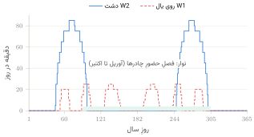
مثال 14.21 (صد و دوازده ساعت، اما کی؟) پرسش. ساعتهای سوسوی بدترین حالت در سال و بیشترین دقیقه در روز را برای همهٔ سکونتگاهها حساب کنید و توزیعِ آن را در سال برای چادرها رسم کنید.
پاسخ. خروجیِ بالا و شکل 14.10: در چادرها W1 حدودِ 36 و W2 حدودِ 112 ساعت در سال، با بیشترین 25 و 85 دقیقه در روز؛ خانههای دیگر صفر.
تفسیر. سوسوی W2 در دو دورهٔ اواخرِ زمستان و اوایلِ پاییز است، صبحها، وقتی خورشیدِ پایین در شرق درست پشتِ ردیفِ غربیِ توربینهاست؛ بخشی از آن بیرون از فصلِ حضورِ چادرهاست. سوسوی W1 عصرهای تابستان است، وقتی خورشید در شمالغرب پشتِ یال فرو میرود. این یعنی پاسخِ درست به زمانِ حضورِ مردم بستگی دارد، که فقط از خودشان میشود پرسید. W1 کمتر اما در فصلِ حضور است. محاسبه با گامهای پنجدقیقهای است و خورشید پایینتر از سه درجه حساب نمیشود. وارسی: جمعِ دقیقههای شکل 14.10 برابرِ 112.4 ساعت است (درست).
- بدترین حالت چه فرضهایی دارد؟
- حالتِ مورد انتظار چرا کمتر است؟
- چرا زمانِ حضورِ مردم در سکونتگاهِ فصلی مهم است؟
14.8.6 هوانوردی، رادار و ارتباطات
ایده. نوکِ پرهٔ توربین 175 m بالای زمین است. مرجعِ هوانوردی باید آن را ارزیابیِ مانع کند و علامتگذاری و چراغ را تعیین کند؛ رادارهای هواشناسی و ناوبری و پیوندهای رادیوییِ نقطهبهنقطه هم ممکن است اثر بگیرند. این پرسشها زود و پیش از تثبیتِ چیدمان از بهرهبرداران پرسیده میشوند (U-055)؛ هیچ قاعدهٔ عددی اینجا نقل نمیشود.
aviation screening (tip height 175 m above ground):
W1 ridge (1 row) highest tip 1437 m above sea level
W2 plain (2 rows) highest tip 1376 m above sea level
the obstacle evaluation, marking and lighting are the aviation
authority's (chapters 55-57); radar and radio-link checks are
asked of their operators early, before the layout is frozen- ارتفاعِ نوکِ پره بالای سطحِ دریا برای توربینِ یال چند است؟
- سه سامانهای که ممکن است از توربین اثر بگیرند را نام ببرید.
- چرا این پرسشها پیش از تثبیتِ چیدمان پرسیده میشوند؟
14.8.7 طبیعت: آشیانه، تالاب و پرنده
ایده. یالها برای پرندگانِ شکاری و مهاجرِ بلندپرواز بالابراند: بادِ رو به دامنه آنها را بیزحمت بالا میبرد، و همانجا توربینها بیشترین باد را دارند. تالاب و آبراهه زیستگاهاند. غربالگری فاصلهها را میسنجد؛ حکم را یک سال بررسیِ پرنده و خفاش با روشِ متخصص میدهد (فصلِ ۳۳، U-051).
ecology screening (synthetic layers, specialist surveys needed):
layout to the nest within 1 km to the wetland
W1 ridge (1 row) 78 m 5 2,486 m
W2 plain (2 rows) 1,753 m 0 1,569 m
the ridge row puts several turbines beside the nesting cliff and
along the ridge, where soaring birds use the updraft: a likely
fatal flaw until a year of bird surveys says otherwise
(chapter 33); the plain layout keeps clear of bothمثال 14.22 (هفتاد و هشت متر از آشیانه) پرسش. فاصلهٔ نزدیکترین توربین تا آشیانه و تالاب و تعدادِ توربینهای درونِ یک کیلومتریِ آشیانه را برای دو چیدمان بیابید.
پاسخ. خروجیِ بالا: W1 78 m تا آشیانه و پنج توربین درونِ یک کیلومتر؛ W2 1,753 m و هیچ.
تفسیر. برای W1 این ایرادِ کشنده است تا وقتی بررسی خلافش را نشان دهد؛ و چون همان ردیف روی کلِ یال است، حذفِ پنج توربین ردیف را نصف میکند و سودِ تپه را میبرد. انرژیِ بیشترِ یال این را جبران نمیکند: در ماتریسِ وزنی امتیاز نمیگیرد، پیش از آن حذف میشود (بخشِ ت). وارسی: آشیانه در \((1.85, 5.2)\) و توربینِ \((1.80, 5.26)\) کیلومتر: فاصله حدودِ 78 m (درست).
- چرا یال برای پرندگانِ شکاری جذاب است؟
- چرا ایرادِ کشنده امتیاز نمیگیرد؟
- حکمِ نهاییِ اثر بر پرنده از کجا میآید؟
14.8.8 جامعه و مجوزها
ایده. صدا، سوسو، منظر، راههای تازه، کامیونهای ساخت، کارگرانِ بیرونی، زمین و آب همه به جامعه میرسند. غربالگری دو کار میکند: اثرها را تا جای ممکن با طراحی کم میکند (فاصله، جای راه، زمانِ کار) و فهرستِ پرسشها از مردم را میسازد (بخشِ چ). مجوزها (زمین، محیطِزیست، آب، هوانوردی، میراث، ساخت) و ترتیبشان کشوریاند (فصلهای ۵۵ تا ۵۷)؛ غربالگری فقط فهرستِ مجوزهای احتمالی و مدارکی را که هر کدام میخواهد، شروع میکند.
- پنج راهی که نیروگاه به جامعه میرسد را بنویسید.
- غربالگری کدام اثرها را با طراحی کم میکند؟
- چرا فهرستِ مجوزها در این مرحله «احتمالی» است؟
14.9 پ۲. ساخت، صدا و کابل در جزئیات
14.9.1 لجستیکِ ساخت و زمینِ موقت
ایده. ساخت بیش از ردِ پای دائمی زمین میخواهد: محوطهٔ انبار کنارِ هر سکو برای پرهها و بخشهای برج، محوطهٔ مرکزی برای دفتر و انبار، ایستگاهِ بتن، و محوطهٔ کارِ خورشیدی. جرثقیلِ بزرگ یا میانِ سکوها راه میرود (و راهِ بین سکوها باید شیب و پهنای آن را داشته باشد) یا هر بار باز و بسته میشود. زمینِ موقت پس از ساخت بازگردانده میشود و جای آن، فصلِ استفاده و روشِ بازگرداندن بخشی از مشورت است.
construction logistics of W2b (teaching areas, A-264):
crane walk between pads (tree): 7.20 km on the plain
temporary land: laydown 0.30 ha per turbine, central yard 2.0 ha,
concrete batch plant 1.0 ha, PV yard 1.5 ha: 8.1 ha
permanent footprint 10.0 ha (wind) + 119 ha (PV block)
temporary land is restored and returned to its users: its
location (not on the herders' route), season and restoration
are part of the consultation; the crane supplier sets the
walking path and its grades (chapter 31)مثال 14.23 (هشت هکتارِ موقت) پرسش. طولِ مسیرِ راهرفتنِ جرثقیل میانِ سکوهای W2b و زمینِ موقتِ ساخت را با عددهای آموزشیِ A-264 برآورد کنید.
پاسخ. خروجیِ بالا: مسیرِ جرثقیل 7.20 km روی دشت؛ زمینِ موقت 8.1 ha.
تفسیر. زمینِ موقت حدودِ هشتاد درصدِ ردِ پای دائمیِ بادی است. اگر محوطهٔ مرکزی روی مسیرِ گله یا کنارِ چادرها باشد، اثرش در فصلِ ساخت از کلِ نیروگاه بیشتر است؛ پس جای آن هم در غربالگری انتخاب میشود (بخش 14.15). وارسی: \(12 \times 0.30 + 2.0 + 1.0 + 1.5 = 8.1\) (ha، درست).
- چهار بخشِ زمینِ موقتِ ساخت را نام ببرید.
- چرا راهِ میانِ سکوها برای جرثقیل مهم است؟
- چرا جای محوطهٔ مرکزی بخشی از مشورت است؟
14.9.2 نقشهٔ صدا
ایده. صدا در چند سکونتگاهِ موجود کافی نیست: نقشهٔ صدا نشان میدهد هر جای پیرامون چه ترازی دارد، و برای خانهای که فردا ساخته شود یا چادری که جای دیگری زده شود هم پاسخ دارد. نقشه با همان مدلِ ساده روی شبکهٔ صدمتری ساخته میشود.
noise map of W2b (106 dB(A) each, 100 m grid, chapter 11 model):
grid 61 x 66 points; camp B 37.7 dB(A)
the 40 dB(A) line lies about 750 to 800 m outside the outer rows
(more than for one turbine: the others add)
a map shows where a new house would be affected, not only the
houses that exist today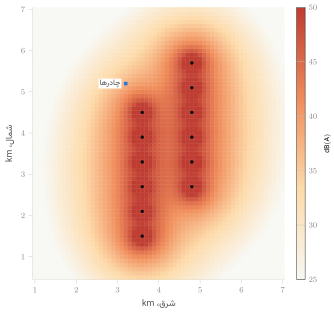
مثال 14.24 (خطِ چهل دسیبل) پرسش. از نقشهٔ صدای W2b فاصلهٔ خطِ 40 dB(A) را از ردیفهای بیرونی بیابید.
پاسخ. خروجیِ بالا و شکل 14.11: حدودِ 750 تا 800 m بیرون از ردیفها؛ در چادرها 37.7 dB(A).
تفسیر. برای یک توربین، 40 dB(A) در حدودِ 575 m است (E07: 41.5 در 500 m)؛ دوازده توربین آن را چند صد متر دورتر میبرند. نقشه همچنین نشان میدهد کجا نباید سکونتگاهِ تازه یا محوطهٔ کارگری ساخته شود. وارسی: میانِ دو ردیف تراز از هر نقطهٔ بیرونی بیشتر است، چون هر دو ردیف میرسند (درست).
- نقشهٔ صدا چه چیزی بیشتر از ترازِ چند خانه میدهد؟
- چرا خطِ 40 dB(A)ِ مزرعه از یک توربین دورتر است؟
- نقشه برای برنامهریزیِ محوطههای کارگری چه کاربردی دارد؟
14.9.3 حالتِ کمصدا
ایده. توربین میتواند در حالتِ کمصدا با سرعتِ روتورِ کمتر کار کند (فصلِ ۱۱): حالتِ شبِ توربینِ WT-5.0-150 حدودِ 2 dB کمتر صدا دارد و اگر هر شب به کار رود حدودِ 1.81 % انرژیِ سالِ هر توربین را میبرد. برای یک سکونتگاهِ فصلی، فقط توربینهای نزدیک و فقط در فصلِ حضور.
noise-reduced mode (-2 dB) to meet a target at the camp:
layout target dB(A) turbines in mode level energy cost
W2 40.0 12 43.4 1.06 % (NOT met)
W2b 36.0 5 35.9 0.44 % (met)
a mode lowers the level a little at the cost of energy; it
cannot rescue a turbine 400 m from a dwelling: there the layout
changes (W2b); targets here are teaching values, not limitsمثال 14.25 (حالت کمک میکند، نجات نمیدهد) پرسش. برای W2 با هدفِ آموزشیِ 40 dB(A) و برای W2b با هدفِ 36 dB(A) در چادرها، توربینهای نزدیک را یکییکی به حالتِ کمصدا ببرید تا هدف برسد، و هزینهٔ انرژی را در فصلِ حضور برآورد کنید.
پاسخ. خروجیِ بالا: W2 با هر دوازده توربین در حالت هنوز 43.4 dB(A)، هدف نمیرسد؛ W2b با پنج توربین 35.9 dB(A) با هزینهٔ حدودِ 0.44 %.
تفسیر. حالتِ کمصدا ابزارِ تنظیمِ ظریف است، نه جایگزینِ فاصله: دو دسیبل از پنجونیم دسیبلِ اضافهٔ چیدمانی با توربینِ چهارصدمتری چیزی کم نمیکند. برای W2b، اگر حدِ واقعیِ مرجع پایینتر از ترازِ آن باشد، چند توربین در فصل و ساعتهای لازم در حالت میروند و هزینهاش در مدلِ تولید (فصلِ ۱۵) وارد میشود. وارسی: هزینه \(1.81 \times 5/12 \times 7/12 = 0.44\ \%\) (درست).
- حالتِ کمصدا چگونه صدا را کم میکند و چه هزینهای دارد؟
- چرا حالت برای W2 کافی نیست؟
- هزینهٔ حالت در کدام مدل وارد میشود؟
14.9.4 کابل در کنارِ راه
ایده. کابلِ جمعآوری معمولاً در حاشیهٔ راههای داخلی دفن میشود: کندنِ زمین با ساختِ راه یکی میشود، کابل از مزرعه و چراگاه بیرون میماند و برای تعمیر در دسترس است. هزینهاش طولِ بیشتر از رشتهٔ راست است.
collector strings of W2b: straight against along the roads:
straight strings 13.26 km; along the road tree 21.34 km (+61 %)
cables in the road verge share the trench works and stay off
the fields and grazing; the extra length costs losses and money
(chapter 24) but saves land, crossings and future diggingمثال 14.26 (شصت درصد بیشتر، با دلیل) پرسش. طولِ رشتههای W2b را اگر کابل مسیرِ درختِ راه را دنبال کند با رشتههای راست مقایسه کنید.
پاسخ. خروجیِ بالا: 13.26 km راست در برابرِ 21.34 km کنارِ راه (+61 %).
تفسیر. درختِ راه برای کوتاهترین راه ساخته شده، نه کوتاهترین کابل؛ بخشی از کابلها دور میزنند. چارههای میانه: چند میانبرِ کابلیِ کوتاه در زمینِ بیکاربری، یا جای پست که با شبکهٔ راه بهتر بخواند. تصمیم با هزینه و تلفِ کابل (فصلِ ۲۴) و با کاربرانِ زمین گرفته میشود. وارسی: طولِ کنارِ راه از راست کمتر نمیشود (درست).
- سه سودِ دفنِ کابل در حاشیهٔ راه را بنویسید.
- چرا کابلِ کنارِ راه بلندتر است؟
- دو چارهٔ میانه را نام ببرید.
14.10 پ۳. منظر و یخ
14.10.1 منطقهٔ دیدِ نظری
ایده. توربینِ 175 mی از چند کیلومتری دیده میشود. منطقهٔ دیدِ نظری نقشهای است که برای هر نقطه میگوید چند توربین (نوکِ پره، یا توپی) از آنجا در خطِ دید است، فقط با زمینِ برهنه (بی ساختمان و درخت که دید را کم میکنند). این نقشه ارزیابیِ منظر را جهت میدهد: کجا عکس و تصویرسازی لازم است و کجا نه. داوریِ اثرِ دیداری (چه چیزی برای مردم مهم است: منظرِ روستا، جای مقدس، راهِ اصلی) با متخصص و مردم است.
zone of theoretical visibility: turbines whose tip is in sight
(bare terrain, no buildings or trees; eye at 2 m):
observer W1 ridge W2b plain
village centre 12 12
herders' camp B 12 12
farmhouse A 12 12
roadside house D 12 12
east of the ridge, 3 km 12 12
west of the ridge 12 6
on flat ground the 175 m tips are seen from everywhere within
kilometres; the ridge hides the plain turbines from the west
and puts its own row on the skyline for everyone: landscape
and visual assessment is a specialist study with photomontages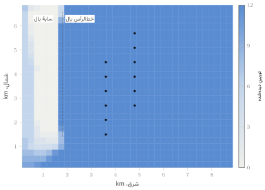
مثال 14.27 (یال پنهان میکند، یال نشان میدهد) پرسش. شمارِ توربینهای W1 و W2b را که از روستا، چادرها، خانهها و دو نقطه در شرق و غربِ یال دیده میشوند حساب کنید و نقشهٔ دیدِ W2b را بسازید.
پاسخ. خروجیِ بالا و شکل 14.12: از همهٔ سکونتگاهها هر دوازده توربینِ هر دو چیدمان دیده میشوند؛ از غربِ یال، W1 همه و W2b شش؛ پشتِ یال یک «سایه» است.
تفسیر. در دشتِ باز، دیدهشدن قاعده است، نه استثنا: پرسشِ منظر این نیست که دیده میشود یا نه، این است که چگونه (فاصله، ردیفِ مرتب یا پراکنده، روی خطالرأس یا زیرِ آن). W1 روی خطالرأس در برابرِ آسمان است و از هر سو دیده میشود؛ W2b از غرب پشتِ یال پنهان است. هر دو برای روستا یکساناند. وارسی: نقطهای کنارِ توربینها همهٔ دوازده را میبیند (رنگِ تیره در شکل 14.12، درست).
- منطقهٔ دیدِ نظری چه چیزی را نشان میدهد و چه چیزی را نه؟
- چرا «دیده میشود یا نه» پرسشِ درستِ منظر در دشت نیست؟
- داوریِ اثرِ دیداری با چه کسانی است؟
14.10.2 پرتابِ یخ و ایمنی
ایده. در روزهای یخزدگی (فصلِ ۱۳، U-040) یخ روی پره جمع میشود و ممکن است از پرهٔ چرخان پرتاب شود یا از توربینِ ایستاده بیفتد. یک قاعدهٔ سرانگشتیِ منتشرشده فاصلهٔ خطر را برای توربینِ در حالِ کار حدودِ یک و نیم برابرِ «قطرِ روتور بهعلاوهٔ ارتفاعِ توپی» میگیرد. این قاعده فقط برای غربالگری است؛ ارزیابیِ واقعی با ساعتهای یخ، باد و احتمالِ حضورِ آدمها انجام میشود.
ice-throw screening of W2b (rule of thumb 1.5 x (D + H), teaching):
zone radius 375 m around each turbine; zone area 476 ha
site roads inside the zones: 7.1 km (the plant's own access)
dwellings inside: 0; nearest public track 2,800 m from a turbine
icing hours at the mast (chapter 13) say how often; ice
detection with automatic stop, signs and staff rules manage
the plant's own roads; public roads and paths inside a zone
need the specialist icing assessmentمثال 14.28 (سیصد و هفتاد و پنج متر) پرسش. شعاعِ خطرِ یخ را برای توربینِ WT-5.0-150 با توپیِ 100 m حساب کنید؛ مساحتِ منطقه، طولِ راههای داخلی درونِ آن و سکونتگاههای درونِ آن را برای W2b بیابید.
پاسخ. خروجیِ بالا: شعاع 375 m؛ منطقه 476 ha؛ 7.1 km از راههای داخلی درونِ آن؛ هیچ سکونتگاهی؛ نزدیکترین راهِ عمومی 2.8 km.
تفسیر. راههای داخلی ناگزیر به توربینها میرسند؛ خطرِ آنها با آشکارسازیِ یخ و توقفِ خودکار، تابلو و قواعدِ رفتوآمدِ کارکنان مدیریت میشود (فصلِ ۵۱). اما گلهداران هم از این زمین میگذرند: در روزهای یخزدگی (که در زمستاناند و چادرها نیستند) خطر کم است، اما باید با آنها در میان گذاشته شود. وارسی: \(1.5 \times (150 + 100) = 375\ \text{m}\) (درست).
- پرتابِ یخ و افتادنِ یخ چه فرقی دارند؟
- قاعدهٔ سرانگشتی برای چه کاری است و برای چه کاری نیست؟
- سه راهِ مدیریتِ خطرِ یخ روی راههای داخلی را نام ببرید.
14.11 ت. آزمایشگاهِ مقایسهٔ چیدمانها
این آزمایشگاه مثالِ کارشدهٔ فصل است: دو چیدمانِ مقدماتی را با انرژی، طولِ کابلِ جمعآوری، دسترسی و قیدهای محیطی مقایسه کنید. یک چیدمانِ سوم هم میسازیم، چون نتیجهٔ درستِ مقایسه اغلب «هیچکدام، بلکه این» است.
برنامه:
python -m companion.ch14.lab_d14.11.1 گزینهها و جدولِ مقایسه
ایده. هر گزینه با همان روش و همان فرضها سنجیده میشود: انرژیِ بلندمدت با دنباله (بخشِ ب)، کابل و راه (درختِ پوشا و رشتهها)، خاکبرداریِ سکوها، صدا و سوسو در همهٔ سکونتگاهها، فاصله تا آشیانه، ردِ پای راه و سکو روی هر کاربری (راهِ 8 m، سکو و پی 1,730 m²، آموزشی) و گذر از وادی. گزینهٔ سوم، W2b، همان دشت است با ردیفِ غربی که هزار و دویست متر به جنوب رفته تا از چادرها دور شود (شکل 14.5).
three layouts compared (long term, teaching screening values):
quantity W1 W2 W2b
farm energy, GWh a year 236.9 193.1 196.9
wake loss 0.50 % 5.85 % 4.01 %
collector tree, km 9.32 8.91 8.91
collector strings, km 18.21 12.63 13.26
roads incl. zig-zags, km 9.54 9.90 9.90
steepest road grade 12.4 % 6.4 % 6.4 %
pad earthworks, cut m3 2,174 522 528
turbines within 1 km of nest 5 0 0
highest noise, dB(A) 34.9 45.4 37.7
most flicker, h/yr worst case 36 112 0
footprint, ha 9.7 10.0 10.0
of it customary grazing, ha 0.0 4.4 3.1
of it private farms, ha 0.0 0.9 0.9
wadi crossings 1 1 1
noise and flicker peaks are all at the herders' seasonal camp
(the W2b peak is below the 40 dB(A) screening level)مثال 14.29 (مثالِ کارشده: دو چیدمان و یک سوم) پرسش. W1 (یال)، W2 (دشت) و W2b (دشتِ اصلاحشده) را با جدولِ بالا مقایسه کنید. کدام برای ادامهٔ کار انتخاب میشود و چرا؟
پاسخ. خروجیِ بالا: W1 بیشترین انرژی (236.9 GWh) اما پنج توربین درونِ یک کیلومتریِ آشیانه، کابلِ 18.2 km و خاکبرداریِ چهار برابر؛ W2 193.1 GWh با 45.4 dB(A) و 112 ساعت سوسو در چادرها؛ W2b 196.9 GWh، تلفِ دنبالهٔ 4.0 %، 37.7 dB(A) و بی سوسو در چادرها، با 0.6 km کابلِ بیشتر از W2 و 3.1 ha ردِ پا روی چرای عرفی.
تفسیر. W2b برای ادامه انتخاب میشود (D-018). نکتهٔ جالب: جابهجاییِ ردیفِ غربی به جنوب انرژی را هم بیشتر کرد، چون دو ردیف حالا پلهپلهاند و کمتر پشتِ هماند؛ اثرهای اجتماعی و انرژی همیشه با هم در تضاد نیستند. W1 کنار نمیرود، منتظر میماند: اگر بررسیِ یکساله نشان دهد آشیانه فعال نیست یا گونه حساس نیست، و دکلِ دوم افزایشِ تندی را تأیید کند، چیدمانِ یال (یا ترکیبی) دوباره سنجیده میشود. وارسی: E16: ردِ پای W2b با دوازده سکو و 9.9 km راه 10.0 ha است.
- چرا همهٔ گزینهها با همان روش سنجیده میشوند؟
- چرا W2b انرژیِ بیشتری از W2 دارد؟
- چرا W1 «منتظر» میماند و حذف نمیشود؟
14.11.2 ایرادهای کشنده و پرچمها
ایده. پیش از هر امتیازدهی، هر گزینه از صافیِ ایرادِ کشنده میگذرد: قیدی که تا شاهدِ خلافش نیاید، گزینه را ناممکن میکند (آشیانه، میراثِ ثبتشده، جابهجاییِ مردم، نبودِ دسترسی). پرچمهای قرمز و کهربایی چیزهاییاند که باید با طراحی، مطالعه یا مشورت حل شوند.
fatal flaws and red flags (screening; each needs its evidence):
W1 ridge (1 row)
- FATAL until surveyed: 5 turbines within 1 km of the nest (nearest 78 m)
- AMBER: herders' camp B (seasonal) 36 h/yr worst-case flicker
- AMBER: road grade 12.4 % on the flank
W2 plain (2 rows)
- RED: herders' camp B (seasonal) at 45.4 dB(A)
- AMBER: herders' camp B (seasonal) 112 h/yr worst-case flicker
- AMBER: 4.4 ha of customary grazing used: consult the users
W2b plain, adjusted
- AMBER: 3.1 ha of customary grazing used: consult the users
flicker flags: check the authority's limit and plan shutdown;
a fatal flaw is not scored away: the matrix ranks only the
layouts that survive itمثال 14.30 (صافی پیش از امتیاز) پرسش. پرچمهای هر گزینه را با قاعدههای آموزشیِ برنامه بنویسید.
پاسخ. خروجیِ بالا: W1 یک ایرادِ کشنده (آشیانه) و دو کهربایی (سوسو، شیبِ راه)؛ W2 یک قرمز (صدا در چادرها) و دو کهربایی؛ W2b یک کهربایی (چرای عرفی).
تفسیر. کهرباییِ W2b یعنی «با کاربران حرف بزنید»: سه هکتار از هفتصد و هشتاد هکتار کوچک است، اما راههای تازه ممکن است مسیرِ گله را ببُرند یا به آبِ چشمه راهِ تازه برای غریبهها باز کنند. این پرسشها عدد ندارند و در بخشِ چ با مردم پاسخ میگیرند. وارسی: شمارِ پرچمها با جدولِ مثال 14.29 میخواند (درست).
- ایرادِ کشنده را تعریف کنید و دو مثال بزنید.
- پرچمِ قرمز و کهربایی چه فرقی دارند؟
- کهرباییِ چرای عرفی با چه کاری بسته میشود؟
14.11.3 ماتریسِ وزنی و حدِ آن
ایده. گزینههایی که از صافی گذشتند با ماتریسِ وزنی (فصلِ ۸، D-011) مقایسه میشوند: هر معیار امتیازی میانِ بدترین و بهترین گزینه میگیرد و با وزن جمع میشود. وزنها داوریاند و باید نوشته و با ذینفعان در میان گذاشته شوند.
weighted matrix of the layouts that survive the fatal flaws
(scores 0-10, best = 10, linear between the two; weights
teaching, A-260):
criterion weight W2 W2b
energy 0.30 0.0 10.0
cable 0.10 10.0 0.0
roads 0.10 10.0 10.0
noise 0.15 0.0 10.0
flicker 0.15 0.0 10.0
grazing 0.20 0.0 10.0
total 2.0 9.0
W2b is better on every criterion but cable; with two options
the scores are all 0 or 10, so the matrix only records the
comparison: the reasons are written in the decision (D-018),
not hidden in the weightsمثال 14.31 (دو گزینه، صفر یا ده) پرسش. W2 و W2b را با شش معیار و وزنهای آموزشی مقایسه کنید.
پاسخ. خروجیِ بالا: W2b 9.0 و W2 2.0 از ده.
تفسیر. با دو گزینه، امتیازِ هر معیار فقط صفر یا ده است و ماتریس چیزی بیش از «کدام بهتر است» نمیگوید؛ با سه گزینه یا بیشتر، وزنها میتوانند رتبه را عوض کنند و باید آزمونِ حساسیت شوند. دلیلِ انتخاب در متنِ تصمیم (D-018) نوشته میشود، نه در وزنها پنهان. وارسی: \(0.30 \times 10 + 0.15 \times 10 + 0.15 \times 10 + 0.20 \times 10 + 0.10 \times 10 = 9.0\) (درست).
- چرا وزنها داوریاند؟
- چرا ماتریسِ دوگزینهای اطلاعاتِ کمی دارد؟
- آزمونِ حساسیتِ وزنها را چگونه انجام میدهید؟
14.11.4 دفترِ فرضها و محدودیتها
هر عددِ این آزمایشگاه یک فرض پشتش دارد؛ اینها در دفترِ فرضها ثبت میشوند تا بازبین بتواند هر کدام را عوض و نتیجه را دوباره بسازد:
| فرض | مقدار | ردیف |
|---|---|---|
| ساختگاه، لایهها و کاربران | پنجرهٔ ساختگیِ سیزده در هفت کیلومتر | A-259 |
| فاصلهها، حدِ شیب، سطحِ صدا، وزنها | آموزشی، نه قانونی | A-260 |
| آبِ چشمه و نیازِ نیروگاه | دبی و مصرفهای آموزشی | A-261 |
| هزینهٔ مسیر و حریمهای صادرات | رسترِ هزینهٔ آموزشی | A-262 |
| فهرستِ کاربران | از پیمایشِ غربالگری، وارسینشده | A-263 |
| افزایشِ تندیِ تپه | \(2H/L\) با \(L = 800\ \text{m}\) | A-259 |
| دنباله | جنسن، k = 0.05، بخشهای دودرجهای | D-015 |
| باد و چگالی | سالِ بسته، ضریبِ بلندمدت و چگالیِ توپی | D-017 |
| ردِ پا | راهِ 8 m، سکو و پی 1,730 m² | A-260 |
محدودیتها. راه و کابل مسیرِ راستاند و زمین را دور نمیزنند؛ افزایشِ تندی وارسی نشده است؛ صدا و سوسو مدلِ سادهاند؛ چیدمان بهینهسازی نشده، فقط سه گزینه سنجیده شدهاند. بهینهسازیِ چیدمان با الگوریتم و مدلِ جریان کارِ مرحلهٔ بعد است، پس از بررسیها و مشورت.
- سه فرضِ این آزمایشگاه را که بیشترین اثر را بر انتخاب دارند نام ببرید.
- چرا دفترِ فرضها برای بازبین لازم است؟
- چرا بهینهسازیِ چیدمان پس از بررسیهاست؟
14.12 ث. غربالگریِ دالانِ جمعآوری و صادرات
14.12.1 جای پست و پرسشهای اتصال
ایده. پستِ نیروگاه (33/132 kV) جایی است که کابلهای جمعآوریِ باد و خورشیدی به هم میرسند و خطِ صادرات شروع میشود. جای خوب: میانِ بلوکِ بادی و خورشیدی (کابلِ کوتاهتر)، روی زمینِ هموار و بیرون از سیل، با دسترسیِ جاده، و رو به سمتی که خطِ صادرات کمترین مانع را دارد. برای نیروگاهِ P جای پیشنهادی \((6.5, 3.5)\ \text{km}\) است (شکل 14.2)، میانِ W2b و بلوکِ خورشیدی. پرسشهای اتصال را بهرهبردارِ شبکه پاسخ میدهد: ظرفیتِ آزادِ پستِ 132 kV، جای بیِ خالی، الزامهای حفاظت و اندازهگیری و زمانبندی (فصلهای ۲۷ و ۲۸، U-054).
- چهار ویژگیِ جای خوبِ پستِ نیروگاه را بنویسید.
- کدام پرسشهای اتصال را فقط بهرهبردارِ شبکه پاسخ میدهد؟
- چرا پست میانِ باد و خورشیدی است؟
14.12.2 گزینههای مسیر و رسترِ هزینه
ایده. مسیرِ خطِ صادرات با رسترِ هزینه غربال میشود: هر سلول هزینهای برای هر متر خط دارد که عددی کردنِ داوریهاست: مرتع ارزان، شیبِ تند گرانتر، زمینِ کشاورزی و روستا گران، گذر از وادی گران، و پهنههایی ممنوع (حریمِ میراث، گورستان، خانهها، تالاب). کمهزینهترین مسیر با الگوریتمِ دایکسترا روی رستر پیدا میشود.
def least_cost_path(cost: np.ndarray, start: tuple[int, int],
end: tuple[int, int], cell: float):
"""Dijkstra on the 8-neighbour raster: the cost of a step is the mean
cost of the two cells times the step length. Returns the path (list of
[j, i]) and its accumulated cost; cells with infinite cost are no-go."""
ny, nx = cost.shape
steps = [(dj, di, cell * math.hypot(dj, di)) for dj in (-1, 0, 1)
for di in (-1, 0, 1) if dj or di]
acc = np.full(cost.shape, np.inf)
prev = {}
acc[start] = 0.0
heap = [(0.0, start)]
while heap:
c, (j, i) = heapq.heappop(heap)
if (j, i) == end:
break
if c > acc[j, i]:
continue
for dj, di, length in steps:
a, b = j + dj, i + di
if 0 <= a < ny and 0 <= b < nx and np.isfinite(cost[a, b]):
nc = c + 0.5 * (cost[j, i] + cost[a, b]) * length
if nc < acc[a, b]:
acc[a, b] = nc
prev[(a, b)] = (j, i)
heapq.heappush(heap, (nc, (a, b)))
path, node = [end], end
while node != start:
node = prev[node]
path.append(node)
return path[::-1], float(acc[end])export route options, site substation to the 132 kV substation
(teaching cost raster A-262; straight-line distance 6.22 km):
route km farm km wadi ruin m homes < 500 m cost
straight line 6.41 3.50 0 226 0 inf
least cost 7.06 0.00 0 426 0 7.1
south, by road 8.72 0.00 2 2,192 0 12.0
the straight line is infinite-cost (it crosses the ruin's no-go
buffer and farmland); the least-cost route bends around them;
the road route is longer but uses the road for access and
keeps the line out of the fields; a cost raster is a way to
argue, not a verdict: its weights are written down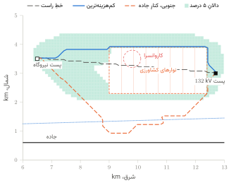
مثال 14.32 (خطِ راست ممنوع است) پرسش. با رسترِ هزینهٔ آموزشیِ A-262، سه مسیر را مقایسه کنید: خطِ راست، کمهزینهترین مسیر، و مسیرِ جنوبی که از کنارِ جاده میگذرد.
پاسخ. خروجیِ بالا و شکل 14.13: خطِ راست 6.41 km با 3.5 km زمینِ کشاورزی و عبور از حریمِ کاروانسرا (هزینهٔ بینهایت)؛ کمهزینهترین 7.06 km بی زمینِ کشاورزی، 426 m از کاروانسرا؛ جنوبی 8.72 km با دو گذر از وادی.
تفسیر. کوتاهترین خط از نوارهای کشاورزی و کنارِ کاروانسرا میگذرد؛ کمهزینهترین فقط حدودِ ده درصد بلندتر است و هیچ مزرعهای را نمیبرد. مسیرِ جنوبی بلندتر است اما از جاده برای ساخت و نگهداری استفاده میکند؛ این مزیت در رستر نیامده، و همین نشان میدهد رستر ابزارِ استدلال است، نه حکم. وارسی: E15: فاصلهٔ راستِ دو پست 6.22 km است؛ مسیرِ رستری با گامهای قطری کمی بلندتر میشود.
- رسترِ هزینه چه چیزی را عددی میکند؟
- «پهنهٔ ممنوع» در رستر چگونه نمایش داده میشود؟
- کدام مزیتِ مسیرِ جنوبی در رستر نیامده است؟
14.12.3 دالان، نه خط
ایده. کمهزینهترین مسیر یک خط است، اما خطِ واقعی پس از نقشهبرداری، ژئوتکنیک، گفتوگو با مالکان و یافتنِ گذرگاهها جابهجا میشود. برای همین غربالگری یک دالان تحویل میدهد: همهٔ سلولهایی که بهترین مسیرِ گذرنده از آنها حداکثر چند درصد گرانتر از بهترین است. دو رسترِ «هزینهٔ انباشته» از دو سرِ مسیر ساخته و جمع میشوند؛ هر سلول با جمعِ کمتر از \((1 + m)\) برابرِ کمینه در دالان است.
corridor of near-optimal routes (cells whose best route through
them costs at most the given share more than the best):
margin corridor area ha width at x = 10.5 km
1 % 187 100 m
3 % 527 350 m
5 % 784 700 m
10 % 1397 1700 m
a corridor, not a line, goes to the surveys and the land
talks: the final alignment moves inside it as owners, ground
and crossings are known (route uncertainty)مثال 14.33 (هفتصد متر پهنا) پرسش. مساحتِ دالان و پهنای آن را در x = 10.5 km برای حاشیههای 1، 3، 5 و 10 % حساب کنید.
پاسخ. خروجیِ بالا و شکل 14.13: 187، 527، 784 و 1,397 ha؛ پهنا 100، 350، 700 و 1,700 m.
تفسیر. دالانِ پنج درصد هر دو کنارِ نوارهای کشاورزی (شمال و جنوب) را دارد: یعنی هزینه تفاوتِ بزرگی میانِ دور زدن از شمال یا جنوب نمیبیند و این انتخاب به پرسشهایی میرود که رستر نمیداند (مالکان، دسترسی، خاک). دالان همان چیزی است که به بررسیها و گفتوگوها سپرده میشود (PLP-ELE-DWG-0003). وارسی: مساحتِ دالان با حاشیه بزرگ میشود: \(187 < 527 < 784 < 1{,}397\) (درست).
- چرا دالان و نه خط تحویل داده میشود؟
- دو رسترِ هزینهٔ انباشته چگونه دالان را میسازند؟
- انتخابِ شمال یا جنوبِ نوارها به چه پرسشهایی بستگی دارد؟
14.12.4 وزنها مسیر را جابهجا میکنند
ایده. وزنِ زمینِ کشاورزی در رستر یک داوریِ ارزشی است: یک متر خط در مزرعه چند برابرِ یک متر در مرتع «هزینه» دارد؟ پاسخ را کسانی باید بدهند که آن هزینه را میپردازند. برای فهمِ اثرِ داوری، وزن را عوض میکنیم:
how the farmland weight moves the least-cost route:
farmland x km farmland km
1 6.41 3.42
2 7.06 0.00
4 7.06 0.00
8 7.06 0.00
a heavier weight trades length for fields: the weight is a
value judgement and is agreed with the people it stands forمثال 14.34 (یک یا دو) پرسش. کمهزینهترین مسیر را با وزنِ زمینِ کشاورزی برابرِ 1، 2، 4 و 8 بیابید.
پاسخ. خروجیِ بالا: با وزنِ 1، 6.41 km با 3.42 km زمینِ کشاورزی؛ از وزنِ 2 به بعد 7.06 km و بی زمینِ کشاورزی.
تفسیر. تصمیم در اینجا آستانهای است: کافی است کشاورزی دو برابرِ مرتع وزن بگیرد تا مسیر به کلی از مزرعهها بیرون برود. این خوب است (تصمیم نسبت به وزنِ دقیق حساس نیست) اما هشداری هم دارد: کمهزینهترین مسیر لبهٔ مزرعهها را دنبال میکند (بخش 14.14.3)؛ برای فاصله گرفتن از لبه، حریمی به رستر افزوده میشود. وارسی: با وزنِ یک، رستر مزرعه را مانندِ مرتع میبیند و مسیر نزدیکِ خطِ راست میشود: \(6.41\ \text{km}\) (درست).
- چرا وزنِ کشاورزی داوریِ ارزشی است؟
- «تصمیمِ آستانهای» یعنی چه؟
- چرا مسیرِ کمهزینه لبهٔ ناحیهٔ گران را دنبال میکند و چاره چیست؟
14.12.5 گذرگاهها، عدمِ قطعیتِ مسیر و بررسیها
ایده. هر خط از چیزهایی میگذرد: جاده، وادی، خطِ برقِ موجود، لوله، کانالِ آبیاری. هر گذرگاه مجوز، طراحی و گاه توافقِ جداگانه دارد. عدمِ قطعیتِ مسیر از اینها میآید: خاکی که پایهٔ دکلِ خط را نمیپذیرد، مالکی که موافق نیست، میراثی که در بررسی پیدا میشود. غربالگری برای هر گزینه اینها را فهرست میکند: طول، گذرگاهها، مالکانِ احتمالی، حساسیتهای محیطی و اجتماعی، و بررسیها و نظرِ مراجع که پیش از تعهد لازم است (C-08 تا C-10). گزینهای که یک ایرادِ کشنده دارد (مثلاً عبور از حریمِ میراثِ ثبتشده) همانجا کنار میرود. کابلهای جمعآوری هم همین غربالگری را دارند، کوتاهتر و معمولاً کنارِ راههای داخلی.
- پنج نوع گذرگاه را نام ببرید.
- سه منبعِ عدمِ قطعیتِ مسیر را بنویسید.
- برای هر گزینهٔ مسیر چه چیزهایی فهرست میشود؟
14.13 ث۲. جای ایستگاهها و پست: بهینهسازیِ کابل
دو تصمیمِ جانمایی بیشترِ طولِ کابلِ نیروگاه را تعیین میکنند: جای ایستگاههای اینورتر درونِ بلوکِ خورشیدی (طولِ کابلهای جریانِ مستقیم) و جای پستِ نیروگاه (طولِ رشتههای بادی، کابلهای خورشیدی و خطِ صادرات). هر دو را میتوان با جستوجوی ساده سنجید، به شرطِ آنکه وزنها نوشته شوند.
14.13.1 ایستگاههای اینورتر درونِ بلوک
ایده. هر یک از ده اینورتر (D-013) بیست و یک جعبهٔ ترکیب را جمع میکند. اگر ایستگاهها همه کنارِ راهِ اصلی باشند، راه و کابلِ متوسطولتاژ کوتاه است اما هر کابلِ جریانِ مستقیم تا آنها بلند؛ اگر هر ایستگاه در مرکزِ زیربلوکِ خودش باشد، برعکس. تلفِ کابلِ جریانِ مستقیم با طول و مربعِ جریان بزرگ میشود (فصلِ ۶).
DC feeders from 210 combiner boxes to 10 inverter stations
(straight-line length, PV block 1,100 x 800 m of rows):
station placement mean m longest m total km
all at the east edge 579 1065 121.7
one row through the middle 215 375 45.1
5 x 2 grid, sub-block centres 119 186 24.9
the grid placement keeps the longest feeder near chapter 6's
180 m (A-018); stations at the edge save MV cable and road
but lengthen every DC feeder (losses, voltage drop, copper):
the block layout is a cable-and-road optimum (chapters 6, 24)مثال 14.35 (صد و بیست یا پانصد و هشتاد متر) پرسش. میانگین و بیشینهٔ طولِ کابلِ جعبههای ترکیب تا ایستگاهها را برای سه چیدمانِ ایستگاه حساب کنید (هر ایستگاه بیست و یک جعبه، اختصاص به نزدیکترین با ظرفیت).
پاسخ. خروجیِ بالا: همه در لبهٔ شرقی میانگینِ 579 m و جمعِ 122 km؛ یک ردیف در میانه 215 m و 45 km؛ شبکهٔ پنج در دو 119 m و 25 km.
تفسیر. شبکهٔ پنج در دو کابلِ جریانِ مستقیم را تقریباً پنج برابر کم میکند و بلندترین کابل را نزدیکِ فرضِ 180 mِ فصلِ ۶ (A-018) نگه میدارد؛ هزینهاش راهِ داخلیِ بیشتر تا هر ایستگاه و کابلِ متوسطولتاژِ حلقوی است. همین مصالحه در فصلهای ۲۳ و ۲۴ با قیمتها و تلفها بسته میشود. وارسی: جمعِ طول تقسیم بر ۲۱۰ جعبه میانگین را میدهد: \(24{,}900/210 = 119\ \text{m}\) (درست).
- چرا ایستگاههای لبهٔ بلوک کابلِ جریانِ مستقیم را بلند میکنند؟
- هزینهٔ شبکهٔ ایستگاهها در مرکزِ زیربلوکها چیست؟
- فرضِ 180 mِ فصلِ ۶ کجا وارسی شد؟
14.13.2 جای پستِ نیروگاه
ایده. پست باید جایی باشد که مجموعِ وزندارِ رشتههای بادی، کابلهای خورشیدی و خطِ صادرات کمینه شود. وزنها (نسبتِ هزینهٔ هر کیلومتر) آموزشیاند (A-266): کابلِ 33 kV یک، خطِ 132 kV یک و شش دهم، با ضریبِ پیچوتابِ 1.13 برای مسیرِ خط (مثال 14.32). جستوجو روی شبکهٔ ۲۵۰ متری در زمینِ قابلِ ساخت انجام میشود.
site substation position: weighted cable and line length (A-266):
position strings km PV feeders km export km weighted
chosen (6.5, 3.5) 13.26 2.69 7.03 27.20
best (7.00, 2.75) 13.55 1.20 6.45 25.07
the search saves 7.8 % of the weighted length by moving
the substation to the west edge of the PV block, nearer the
PV and the grid; the weights decide where the
optimum lies, and the export corridor, ground, access and land
users decide whether it can go thereمثال 14.36 (هشت درصد با جابهجاییِ پست) پرسش. طولِ وزندار را برای جای انتخابشده \((6.5, 3.5)\) و برای بهترین جای شبکهٔ جستوجو حساب کنید.
پاسخ. خروجیِ بالا: انتخابشده 27.2 و بهترین \((7.0, 2.75)\) با 25.1 km وزندار، 7.8 % کمتر.
تفسیر. بهینه به لبهٔ غربیِ بلوکِ خورشیدی میرود: رشتههای بادی کمی بلندتر، کابلهای خورشیدی و خطِ صادرات کوتاهتر. آیا پست باید آنجا برود؟ پاسخ را عددِ وزندار نمیدهد: دالانِ صادرات از آنجا (مثال 14.33)، خاک، دسترسی، و اینکه جای خالیِ بلوکِ خورشیدی کم میشود. این یافته به دفترِ قیدها و بازنگریِ بعدیِ D-018 میرود: «جای پست بهینه نیست؛ پس از ژئوتکنیک و مسیرِ قطعی دوباره سنجیده شود». وارسی: \(27.20 - 25.07 = 2.13\) و \(2.13/27.20 = 7.8\ \%\) (درست).
- سه جزءِ طولِ وزندار را نام ببرید.
- چرا وزنِ خطِ 132 kV از کابلِ 33 kV بیشتر است؟
- چرا بهینهٔ عددی تصمیمِ نهایی نیست؟
14.13.3 خورشیدی میانِ ردیفهای توربین؟
ایده. نیروگاهِ هیبریدی میتواند زمین را مشترک کند: بلوکِ خورشیدی میانِ ردیفهای توربین، بهجای بلوکی جدا. سود: کابل و راهِ کوتاهتر، ردِ پای کلِ کمتر. هزینه: سایهٔ توربین روی ماژول (بخش 14.5.5)، منطقهٔ یخ (بخش 14.10.2) و رفتوآمدِ کارکنانِ خورشیدی در کنارِ توربینها. غربالگری میپرسد: پس از این قیدها چقدر زمین میماند؟
PV between the turbine rows of W2b (co-location screening):
land between the rows 504 ha; outside the ice zones 288 ha
also outside the winter shadow strips and PV exclusions: 286 ha
of it outside the customary grazing area: 154 ha (88 ha needed)
co-location is possible here: the ice zones take less than half
the space; it would shorten the PV cables to the strings, but
the block would fence land near the herders' area, PV crews
would work beside the ice zones, and the east block keeps the
wind and PV apart for maintenance: a trade for the consultationمثال 14.37 (دویست و هشتاد و شش هکتار) پرسش. زمینِ میانِ ردیفهای W2b را بیابید و آنچه را پس از منطقههای یخ، نوارهای سایهٔ زمستانی، حریمهای خورشیدی و چرای عرفی میماند حساب کنید.
پاسخ. خروجیِ بالا: 504 ha میانِ ردیفها؛ 288 ha بیرون از یخ؛ 286 ha پس از سایه و حریمها؛ 154 ha بیرون از چرای عرفی، در برابرِ 88 ha نیاز.
تفسیر. پاسخِ اینجا «شدنی است» است، برخلافِ گمانِ نخست که منطقههای یخ همهٔ فاصلهٔ ردیفها را میگیرند (عدد کمتر از نصف است). انتخاب میانِ بلوکِ شرقی و بلوکِ میانِ ردیفها یک مصالحه است: کابلِ کوتاهتر و زمینِ کمتر در برابرِ حصار نزدیکِ زمینِ گلهداران و کار در کنارِ توربینها. این گزینه با همان جدولِ مثال 14.29 و در مشورت سنجیده میشود؛ تا آن زمان D-018 بلوکِ شرقی را نگه میدارد. وارسی: \(288 - 286 = 2\) هکتار سایه و حریمِ اضافه، چون بیشترِ نوارهای سایه درونِ منطقههای یخاند (درست).
- دو سود و سه هزینهٔ اشتراکِ زمین را بنویسید.
- چرا نوارهای سایه زمینِ زیادی کم نکردند؟
- این گزینه با چه ابزارهایی سنجیده میشود؟
14.14 ج. غربالگریِ زمین و جامعه
این بخش با یک قاعده شروع میشود: همهٔ کاربرانِ این فصل ساختگیاند و هیچ گروه، خانواده یا محلِ واقعی را توصیف نمیکنند. غربالگری فقط نشان میدهد از چه کسی، چه چیزی باید پرسید؛ پاسخ را خودِ مردم میدهند، با روشِ متخصصِ اجتماعی (فصلِ ۳۳).
14.14.1 کاربرانِ زمین: رسمی و عرفی
ایده. نقشهٔ کاربران با پرسشهایی ساخته میشود که نقشهٔ ثبتی پاسخ نمیدهد: چه کسی این زمین را چگونه و کِی به کار میبرد؟ از کجا آب میبرد؟ گله از کدام راه به چشمه میرود؟ کجا مردهها را دفن میکنند؟ چه کسی برای چه کسی حرف میزند؟ زنان و جوانان چه میگویند وقتی جدا پرسیده شوند؟ نقشه با کاربران ساخته میشود (نقشهبرداریِ مشارکتی)، نه دربارهشان.
| گروه | زمین | کاربری | رسمی یا عرفی | فصل |
|---|---|---|---|---|
| دولت (ادارهٔ مرتع) | مرتعِ دولتی | پروانهٔ چرا | رسمی | همهٔ سال |
| مالکِ مزرعهٔ ۱ | مزرعهٔ ۱ | کشتِ آبی | رسمی | آبِ مه تا سپتامبر |
| مالکِ مزرعهٔ ۲ | مزرعهٔ ۲ | کشتِ دیم | رسمی | اکتبر تا ژوئن |
| خانوادههای گلهدار | چرای عرفی | چرا، چادرهای فصلی | عرفی | آوریل تا اکتبر |
| روستا | زمینهای روستا | خانه، باغ، آبِ چشمه | رسمی و عرفی | همهٔ سال |
| مالکانِ نوارهای سمتِ صادرات (هشت) | نوارهای کشاورزی | کشت | رسمی | همهٔ سال |
- شش پرسشِ نقشهٔ کاربران را بنویسید.
- نقشهبرداریِ مشارکتی چه فرقی با نقشهبرداری دربارهٔ مردم دارد؟
- چرا زنان و جوانان جدا پرسیده میشوند؟
14.14.2 چقدر از زمینِ هر کاربر
ایده. نخستین عدد این است: نیروگاه چقدر از زمینِ هر گروه را میگیرد؟ اما سهمِ مساحت همهٔ داستان نیست: یک هکتار راه که مسیرِ گله را قطع کند از ده هکتار مرتعِ کماستفاده مهمتر است. پس جدولِ ردِ پا آغازِ گفتوگوست.
who uses the land and how much the project touches (W2b, PV block,
site substation; screening survey, to verify, A-263):
user group land ha project ha share
state (rangeland authority) 4,856 126.0 2.59 %
owner of farm 1 168 0.9 0.54 %
owner of farm 2 100 0.0 0.00 %
herding families 780 3.1 0.40 %
village 396 0.0 0.00 %
corridor farm owners (8 strips) 544 0.0 0.00 %
areas are small shares, but shares hide what matters: the
herders' route to the spring, the camp's season, the farm's
water and the strips the export line crosses; a footprint
table starts the conversation, it does not end itمثال 14.38 (درصدهای کوچک، پرسشهای بزرگ) پرسش. ردِ پای W2b، بلوکِ خورشیدی و پست را روی زمینِ هر گروهِ کاربر حساب کنید.
پاسخ. خروجیِ بالا: مرتعِ دولتی 126 ha (2.6 %، بیشترش بلوکِ خورشیدی)، گلهداران 3.1 ha (0.4 %)، مزرعهٔ ۱ 0.9 ha (راهِ دسترسی)، بقیه صفر.
تفسیر. بلوکِ خورشیدی 119 ha از مرتعِ دولتی را حصار میکشد: برای دولت درصدِ کوچکی است، اما اگر همان قطعه مسیر یا چراگاهِ زمستانیِ گلهای باشد، برای آن خانوادهها بزرگ است. پرسشها: آیا حصار راهِ گله به چشمه را میبندد؟ آیا چرای کنترلشده زیرِ ردیفها شدنی است (فصلِ ۲۹)؟ راهِ دسترسی از مزرعهٔ ۱ با موافقتِ مالک و جبرانِ محصول؟ وارسی: E16: ردِ پای بادی 10.0 ha، و \(119 + 6.0 + 1.0 = 126\) (ha؛ بخشِ بادیِ روی مرتعِ دولتی حدودِ 6 ha بهعلاوهٔ پست، درست).
- چرا سهمِ مساحت همهٔ داستان نیست؟
- حصارِ بلوکِ خورشیدی چه پرسشی برای گلهداران میسازد؟
- استفادهٔ همزمان از زمینِ خورشیدی (چرای کنترلشده) کجا بررسی میشود؟
14.14.3 نوارهای کشاورزی و دالانِ صادرات
ایده. خطِ صادرات از کنارِ زمینهای کوچکِ کشاورزی میگذرد. هر نوار مالکِ خودش را دارد؛ دکل، حریمِ خط، راهِ دسترسی و کابلکشی هر کدام اثر دارند حتی اگر خط از روی زمین نگذرد.
the least-cost export route and the eight farm strips (x 9.0 to
12.4 km, each 425 m wide, y 2.3 to 3.9 km):
strip route length inside distance to the strip
1 0 m 25 m
2 0 m 25 m
3 0 m 25 m
4 0 m 25 m
5 0 m 25 m
6 0 m 25 m
7 0 m 25 m
8 0 m 25 m
the route hugs the edge of all eight strips: a least-cost path
runs along the border of a costly area; no tower stands in a
field, but the line's easement, access tracks and stringing
touch them; add a buffer to the cost raster, ask each owner
(rights of way, crops, damage) and move inside the corridorمثال 14.39 (بیست و پنج متر از هر هشت نوار) پرسش. کمهزینهترین مسیرِ صادرات چقدر درونِ هر نوارِ کشاورزی است و چقدر با آن فاصله دارد؟
پاسخ. خروجیِ بالا: درونِ هیچ نواری نیست، اما از کنارِ هر هشت نوار با فاصلهٔ حدودِ 25 m (نیمِ یک سلولِ رستر) میگذرد.
تفسیر. مسیرِ کمهزینه لبه را دنبال میکند، چون هر قدم به درون گران است و هر قدم به بیرون طولانیتر. نتیجه: هشت مالک همسایهٔ خط میشوند و حریمِ خط (فاصلهٔ ایمنی از سیمها، که با ولتاژ و طراحی تعیین میشود) روی زمینشان میافتد. چاره: حریمی در رسترِ هزینه، و گفتوگو با هر هشت مالک دربارهٔ حقِ عبور، محصول و جبرانِ خسارتِ ساخت. وارسی: فاصلهٔ مرکزِ سلول تا لبه نیمِ اندازهٔ سلولِ 50 m است (درست).
- چرا مسیرِ کمهزینه لبه را دنبال میکند؟
- چهار اثرِ خط بر زمینِ کنارش را نام ببرید.
- با مالکانِ نوارها دربارهٔ چه چیزهایی گفتوگو میشود؟
14.14.4 گروههای آسیبپذیر، معیشت و پرهیز از جابهجایی
ایده. غربالگری میپرسد چه کسانی کمترین توانِ تحملِ تغییر را دارند: خانوادههایی که همهٔ معیشتشان از گله است، خانوادههای بیسندِ رسمی، خانوارهای زنسرپرست، سالمندان، کسانی که زبانِ اسنادِ پروژه را نمیخوانند. اصلِ این کتاب پرهیز از جابهجاییِ فیزیکی و اقتصادی است: چیدمان، مسیر و زمانبندی تا جای ممکن دور زده میشوند. W2b همین کار را کرد: توربینها از چادرها دور شدند، نه چادرها از توربینها. جایی که اثرِ معیشتی ناگزیر است، ارزیابی و برنامهٔ احیای معیشت کارِ متخصص و تابعِ قانونِ کشور و استانداردهای وامدهندگان است (فصلهای ۵۴ تا ۵۷).
- پنج نمونه از گروههای آسیبپذیر را نام ببرید.
- جابهجاییِ اقتصادی بیجابهجاییِ فیزیکی چگونه رخ میدهد؟
- W2b چگونه اصلِ پرهیز از جابهجایی را به کار برد؟
14.14.5 میراثِ فرهنگی و جاهای مقدس
ایده. میراث فقط بنای ثبتشده نیست: گورستانِ روستا، زیارتگاهِ کوچک، درختِ کهنسالی که مردم کنارش جمع میشوند، و اشیایی که هنگامِ خاکبرداری پیدا میشوند. غربالگری جاهای شناختهشده را با حریم کنار میگذارد (گورستان و کاروانسرا در این ساختگاه)، از مردم دربارهٔ جاهای ناشناخته برای نقشه میپرسد، و برای ساخت یک رویهٔ یافتهٔ تصادفی پیشنهاد میکند (کار متوقف، محل محافظت، متخصص خبر میشود). جزئیاتِ آن کارِ متخصص و مرجعِ میراثِ کشور است.
- چهار نوع میراث که روی نقشهٔ رسمی نیستند را نام ببرید.
- رویهٔ یافتهٔ تصادفی چه گامهایی دارد؟
- جاهای ناشناخته برای نقشه را از کجا میفهمیم؟
14.14.6 مشورتِ زودهنگام
ایده. مشورت پیش از تعهد شروع میشود، وقتی هنوز چیزی برای تغییر هست. برنامهٔ نیروگاهِ P:
early consultation plan (screening stage, before any commitment):
1 map the users with them: walk the land with herders, farmers
and village elders; mark routes, seasons, water and graves
2 share the screening maps in plain language and the local
languages; record concerns in a register with answers
3 verify tenure: formal records and customary rights; who
speaks for whom; women's and young people's views separately
4 screen for vulnerable groups and livelihood dependence; no
physical or economic displacement assumed acceptable
5 agree what the layout can still change (W2b moved turbines
away from the camp before anyone asked: say so, and ask what
else matters)
6 set up a grievance mechanism before site work starts
7 bring in specialists: social, heritage, ecology, water
(chapters 33, 54); record every step in the dossierمثال 14.40 (چه چیزی هنوز میتواند عوض شود) پرسش. برای جلسهٔ نخست با خانوادههای گلهدار، سه چیزی که پروژه هنوز میتواند تغییر دهد و سه چیزی که باید از آنها بپرسد را بنویسید.
پاسخ. میتواند تغییر کند: جای توربینهای ردیفِ غربی (همین حالا جابهجا شده)، مسیرِ راهها و گذرگاههای گله، زمانِ کارهای پرسروصدا و پرترددِ ساخت (بیرون از فصلِ حضورِ چادرها). باید پرسید: مسیرهای گله به چشمه و چراگاه، جای چادرها در سالهای مختلف، و هر جای مهمِ دیگری که روی نقشه نیست.
تفسیر. مشورتِ واقعی یعنی پاسخها چیدمان را عوض کنند (پیکانِ بازخورد در شکل 14.1). اگر همهچیز پیش از جلسه قطعی شده باشد، جلسه اطلاعرسانی است، نه مشورت. سازوکارِ شکایت هم پیش از شروعِ کار در ساختگاه راه میافتد. همهٔ جلسهها، نگرانیها و پاسخها در دفترِ ذینفعان (PLP-PRJ-REG-0006) ثبت میشوند. وارسی: هر سه تغییرِ ممکن در این فصل شاهد دارند: مثال 14.29، بخش 14.8.1 و مثال 14.21 (درست).
- چرا مشورت پیش از تعهد شروع میشود؟
- فرقِ مشورت و اطلاعرسانی چیست؟
- سازوکارِ شکایت کی و چرا راه میافتد؟
14.15 ج۲. معیشت در عمل: مسیرها، فصلها و پایش
14.15.1 مسیرهای گله و قطعشدگی
ایده. ردِ پای کوچک میتواند اثرِ بزرگ داشته باشد اگر مسیری را قطع کند: راهِ گله به آب، راهِ مدرسه، راهِ بازار. قطعشدگی (جدا افتادنِ دو بخشِ یک زمین یا یک مسیر) را با گذاشتنِ مسیرهای شناختهشده روی شبکهٔ راه و حصارِ نیروگاه پیدا میکنیم. راهِ بیحصار را گله میگذرد؛ حصار (بلوکِ خورشیدی، پست) را نه.
herders' routes against the W2b roads (straight routes, A-264):
route road crossings
camp to spring 1
camp to the southern pasture 2
camp season Apr-Oct; heavy works near the camp (roads, pads,
foundations of the west row) planned for Jan, Feb, Mar, Nov, Dec
roads cross the routes at grade (open, no fence); crossings and
the timing are agreed with the families, not assumedمثال 14.41 (یک گذر به چشمه، دو گذر به چراگاه) پرسش. مسیرهای فرضیِ راستِ گله از چادرها تا چشمه و تا چراگاهِ جنوبی چند بار از راههای W2b میگذرند؟ کارهای سنگینِ نزدیکِ چادرها برای کدام ماهها برنامهریزی شود؟
پاسخ. خروجیِ بالا: یک گذر به چشمه، دو گذر به چراگاهِ جنوبی؛ کارهای سنگینِ ردیفِ غربی در ژانویه تا مارس و نوامبر و دسامبر، بیرون از فصلِ حضور.
تفسیر. راههای بیحصار مسیرِ گله را نمیبندند، اما در فصلِ ساخت، رفتوآمدِ کامیون و گودِ پیها خطر برای دام و بچههاست؛ پس زمانبندی و علامتگذاریِ گذرها با خانوادهها توافق میشود. مسیرهای واقعیِ گله راست نیستند و فقط خودِ گلهداران آنها را میدانند: عددِ این مثال جای نقشهبرداریِ مشارکتی را نمیگیرد. بلوکِ خورشیدیِ حصاردار بیرون از این مسیرهاست (شرقِ ساختگاه). وارسی: فصلِ حضور آوریل تا اکتبر است؛ پنج ماهِ دیگر برای کارهای سنگین میماند (درست).
- قطعشدگی را تعریف کنید.
- چرا حصار و راهِ بیحصار اثرِ متفاوتی بر گله دارند؟
- چرا مسیرهای راستِ این مثال جای نقشهبرداریِ مشارکتی را نمیگیرند؟
14.15.2 زمین در فصلِ ساخت و پس از آن
ایده. اثرهای ساخت زمانداراند: گرد و غبار، صدا، رفتوآمد، کارگرانِ بیرونی، گودها و زمینِ موقت. برنامهٔ ساخت با تقویمِ کاربری (فصلِ چرا، کاشت و برداشت، جشنها و مراسم) همتراز میشود. پس از ساخت، زمینِ موقت بازگردانده، خاکِ رویی برگردانده و پوششِ گیاهی پایش میشود؛ زیرِ ردیفهای خورشیدی، چرای کنترلشده یا کشت ممکن است با توافق ادامه یابد (فصلهای ۲۹ و ۵۱).
| ماه | ژانویه تا مارس | آوریل تا اکتبر | نوامبر و دسامبر |
|---|---|---|---|
| گلهداران | دور از ساختگاه | چادرها در ساختگاه | دور از ساختگاه |
| مزرعهٔ ۱ | — | آبیاری، مه تا سپتامبر | — |
| کارهای ساختِ پیشنهادی | پی و راهِ ردیفِ غربی | ردیفِ شرقی و خورشیدیِ شرقی، دور از چادرها | ادامهٔ ردیفِ غربی |
- پنج اثرِ زماندارِ ساخت را نام ببرید.
- تقویمِ کاربری چه چیزهایی دارد؟
- پس از ساخت با زمینِ موقت چه میشود؟
14.15.3 پایش و بازخورد
ایده. غربالگری یک تصویرِ نخست است؛ پایش نشان میدهد پیشبینیها درست بودند یا نه: صدای واقعی در چادرها پس از راهاندازی، دبیِ چشمه در سالهای ساخت، شکایتها و پاسخها، بازگشتِ پوششِ گیاهی، تلفاتِ پرنده. نتیجهها به دفترِ قیدها و دفترِ ذینفعان برمیگردند و اگر لازم باشد کار عوض میشود (حالتِ کمصدا، توقفِ سوسو، جابهجاییِ گذرها). بدونِ پایش، تعهدهای مشورت وعدههای بیشاهدند (فصلهای ۳۳ و ۵۱).
- پنج چیزی که پس از ساخت پایش میشوند را نام ببرید.
- نتیجهٔ پایش به کدام دفترها برمیگردد؟
- سه اقدامِ اصلاحی که پایش ممکن است بخواهد را بنویسید.
14.16 نیروگاهِ P: سه مثالِ یکپارچه
سه مثالِ زیر ابزارِ فصل را جمع میکنند: ساختگاه در یک صفحه، بستهٔ چیدمانِ مقدماتی، و دفترِ قیدها. همه بر پایهٔ ساختگاهِ ساختگیِ A-259، مقدارهای آموزشیِ A-260 تا A-263 و تصمیمهای D-015، D-017 و D-018.
برنامه:
python -m companion.ch14.integratedمثال 14.42 (مقدماتی: ساختگاه در یک صفحه) پرسش. همهٔ لایهها و نخستین برداشت را در یک صفحه برای مدیرِ پروژه خلاصه کنید.
پاسخ.
Plant P site on one page (screening, synthetic A-259):
window 13 x 7 km; project land 6,300 ha west of x = 9 km
ground 1170 .. 1262 m; ridge in the west, wadi in the south
buildable for turbines 4,304 ha, for PV 4,828 ha (teaching setbacks A-260)
people: village of 25 houses (NE), 3 houses, 1 seasonal camp
users: state rangeland, 2 farms, herders (customary, Apr-Oct),
village lands, 8 farm strips on the export side
sensitive: raptor nest (ridge), wetland (wadi), spring, cemetery,
caravanserai ruin (export side)
grid: 132 kV substation 6.2 km east of the site substation
water: the spring has no spare water in Jun-Sep
first reading: wind on the plain, PV in the east, a corridor
north or south of the farm strips; the ridge only after a bird
surveyتفسیر. یک صفحه کافی است تا مدیر بداند کجا نباید رفت (یال تا بررسیِ پرنده، چشمه برای آب، مزرعهها برای خط) و چه کسانی را باید دید (گلهداران، روستا، مالکانِ مزرعهها و نوارها). عددهای زمینِ قابلِ ساخت برای این صفحه کافیاند؛ برای چیدمان نه. وارسی: همهٔ عددها از خروجیهای بخشِ الف آمدهاند (درست).
مثال 14.43 (میانی: بستهٔ چیدمانِ مقدماتی) پرسش. بستهٔ چیدمانِ مقدماتیِ نیروگاهِ P را بنویسید: باد، خورشیدی، پست، کابل، راه، صادرات، ردِ پا و اثر در سکونتگاهها.
پاسخ.
preliminary layout package (D-018, to be frozen only after surveys):
wind: W2b, 12 x WT-5.0-150, hub 100 m, two rows across 285 deg
long-term 196.9 GWh a year, wake loss 4.0 % (other losses: ch 15)
PV: block of 119 ha east of the farm, 60 MWp at GCR 0.40 (88 ha used)
site substation 33/132 kV at (6.5, 3.5) km, between wind and PV
collector strings 13.3 km (wind), roads 9.9 km, pads 528 m3
export: least-cost route 7.06 km inside a 5 % corridor of 784 ha
footprint 10.0 ha (wind) + 119 ha (PV); customary grazing 3.1 ha
dwellings: highest noise 37.7 dB(A), flicker 0 h/yr worst case
georeferenced in the local grid (x east, y north, metres from
the window's south-west corner); a surveyed projected system
replaces it before design (chapter 29)تفسیر. این بسته ورودیِ فصلهای بعد است: انرژیِ 196.9 GWh برای مدلِ تولید (فصلِ ۱۵) با چیدمانِ واقعی جایگزینِ چیدمانِ Aِ فصلِ ۱۱ میشود؛ طولِ کابل و راه برای هزینه (فصلِ ۲۱)؛ دالان برای طراحیِ خط (فصلِ ۲۴). همه با برچسبِ مقدماتی: تثبیت پس از بررسیها و مشورت. وارسی: انرژیِ W2b با مثال 14.29 میخواند (196.9، درست).
مثال 14.44 (یکپارچه: دفترِ قیدها) پرسش. دفترِ قیدهای PLP-GEN-REG-0003 را با ستونهای منبع، وضعیت، مالک، راهِ بستن و گزینههای اثرپذیر بسازید.
پاسخ.
constraint register PLP-GEN-REG-0003, rev A (screening):
id constraint source
C-01 raptor nest on the ridge ecology layer (desk)
C-02 herders' seasonal camp B screening survey
C-03 customary grazing area screening survey
C-04 spring and channel screening survey
C-05 wadi floods terrain model
C-06 setbacks to dwellings, roads, lines teaching values A-260
C-07 terrain and soils 50 m terrain model
C-08 caravanserai ruin heritage layer (desk)
C-09 farm strips on the export side screening survey
C-10 grid substation bay and route grid operator (to ask)
C-11 aviation and radar none yet
C-12 water for construction and cleaning demand estimate A-261
every row also has: status (all open), owner, the verification
that closes it and the layouts it affects; rows close with
evidence, never with a date alone| شناسه | قید | مالک | راهِ بستن | اثر بر |
|---|---|---|---|---|
| C-01 | آشیانهٔ روی یال | بومشناس | بررسیِ یکسالهٔ پرنده (U-051) | W1 |
| C-02 | چادرهای فصلیِ گلهداران | مسئولِ اجتماعی | بازدید با گلهداران؛ مطالعهٔ صدا و سوسو | W2، W2b |
| C-03 | چرای عرفی | مسئولِ اجتماعی | نقشهبرداریِ مشارکتی؛ توافقِ دسترسی (U-052) | راههای W2b |
| C-04 | چشمه و نهر | مسئولِ آب | سابقهٔ دبی؛ بی برداشت؛ منبع و مجوز (U-053) | همه |
| C-05 | سیلِ وادی | مسئولِ عمران | مطالعهٔ آبشناسی؛ طراحیِ آبرو (U-050) | راه، کابل |
| C-06 | فاصله از خانه، راه و خط | مسئولِ مجوز | قواعدِ مرجع (فصلهای ۵۵ تا ۵۷) | همه |
| C-07 | زمین و خاک | مسئولِ عمران | نقشهبرداری و ژئوتکنیک (U-050) | سکو، راه |
| C-08 | کاروانسرا | متخصصِ میراث | بازدید؛ رویهٔ یافتهٔ تصادفی | خطِ صادرات |
| C-09 | نوارهای کشاورزی | مسئولِ زمین | فهرستِ مالکان؛ حقِ عبور (U-052) | خطِ صادرات |
| C-10 | بی و مسیرِ پستِ شبکه | مسئولِ شبکه | پیشنهادِ اتصال؛ موافقتِ مسیر (U-054) | صادرات |
| C-11 | هوانوردی و رادار | مسئولِ مجوز | درخواستِ ارزیابیِ مانع (U-055) | همهٔ توربینها |
| C-12 | آبِ ساخت و شستوشو | مسئولِ آب | مجوزِ چاه یا قراردادِ تأمین | خورشیدی، راه |
تفسیر. هیچ ردیفی با تاریخ بسته نمیشود؛ هر کدام با شاهد: گزارشِ بررسی، نامهٔ مرجع، توافقِ امضاشده. دفتر زنده است: هر بررسی یا جلسه ردیفی را میبندد، تغییر میدهد یا ردیفِ تازه میسازد، و هر تغییر بازنگری میگیرد (فصلِ ۲). وارسی: دوازده ردیف، هر کدام با مالک و راهِ بستن (درست).
14.17 گردشِ کارِ غربالگری و ریزجانمایی
- پنجره و لایهها: پنجرهٔ غربالگری، دستگاهِ مختصات، لایهها با منبع و تاریخ و دقت (بخش 14.2.2).
- قیدها و زمینِ قابلِ ساخت: فاصلهها و شیب، جدا برای توربین و خورشیدی، قیدِ تعیینکننده (بخش 14.2.6).
- آب و شبکه: منبع، فصل و مصرفهای موجود؛ پرسشهای اتصال (بخش 14.2.7، بخش 14.2.8).
- گزینههای چیدمان: باد با دنباله و تپه، خورشیدی با زمین و سایه، پست، کابل و راه (بخش 14.5).
- ساختپذیری و اثر: راه، سکو، آبراهه، صدا، سوسو، هوانوردی، طبیعت (بخش 14.8).
- مقایسه: ایرادِ کشنده، جدول، ماتریس با وزنهای نوشتهشده، دفترِ فرضها (بخش 14.11).
- دالانِ صادرات: رسترِ هزینه، گزینهها، دالان، حساسیتِ وزنها، گذرگاهها (بخش 14.12).
- زمین و جامعه: کاربران، ردِ پا، آسیبپذیری، میراث، مشورت (بخش 14.14).
- بازخورد و تثبیت: یافتههای بررسی و مشورت به گامهای ۴ تا ۷؛ تثبیتِ چیدمان پس از بستنِ ردیفهای کشنده.
| رابط | مقدار یا پرسش | منبع |
|---|---|---|
| چیدمانِ مقدماتی | W2b، دو ردیفِ ششتایی روی دشت | مثال 14.29 |
| انرژیِ بادیِ بلندمدت | 196.9 GWh پیش از تلفهای فصلِ ۱۵ | مثال 14.43 |
| کابلِ جمعآوری | حدودِ 13.3 km رشته | مثال 14.13 |
| دالانِ صادرات | 7.06 km در دالانِ 784 ha | مثال 14.33 |
| بلوکِ خورشیدی | 88 ha در بلوکِ 119 ha | مثال 14.11 |
14.18 آزمایشگاههای پایتونِ این فصل
| آزمایشگاه | برنامه | آنچه میسازد |
|---|---|---|
| ساختگاه | sources | پنجرهٔ ساختگی: زمین، لایهها، کاربری، چیدمانها |
| قیدها و شاهدها | examples_a | لایهها، شیب، فاصلهها و زمینِ قابلِ ساخت، تفکیک، آب |
| اصولِ چیدمان | examples_b | انرژیِ چیدمانها، فاصلهٔ ردیف، تلاطمِ افزوده، زمینِ خورشیدی، سایه، کابل |
| ساختپذیری و اثر | examples_c | راه، سکو، صدا، سوسو، طبیعت، هوانوردی |
| مقایسهٔ چیدمانها | lab_d | جدول، ایرادِ کشنده، ماتریس |
| عمیقتر | examples_g | فاصله و مساحت، ردیف روی شیب، تسطیح، لجستیک، نقشهٔ صدا، حالتِ کمصدا، کابلِ کنارِ راه، مسیرهای گله |
| بهینهسازیِ کوچک | lab_h | پلهپله کردنِ ردیفها و چرخاندنِ چیدمان |
| جریان، منظر و یخ | examples_i | شاخصِ ناهمواری و پیشبینیِ متقابل، منطقهٔ دید، منطقهٔ یخ |
| ایستگاهها و پست | examples_j | کابلِ جریانِ مستقیمِ بلوکِ خورشیدی، جستوجوی جای پست |
| دالانِ صادرات | examples_e | رسترِ هزینه، مسیرها، دالان، وزنها |
| زمین و جامعه | examples_f | ردِ پای هر کاربر، نوارها، برنامهٔ مشورت |
| نیروگاهِ P | integrated | یک صفحه، بستهٔ چیدمان، دفترِ قیدها |
| مثالها و پاسخها | worked، solutions | سطرهای E01 به بعد و پاسخهای عددی |
کتابخانهٔ همراه ماژولِ siting را میافزاید: رستر و نمونهگیریِ نزدیکترین و دوخطی، شیب و جهتِ شیب، چندضلعی و فاصله، افزایشِ آموزشیِ تندی روی تپه، درختِ پوشای کمینه، رشتههای شعاعی، کمهزینهترین مسیر و هزینهٔ انباشته (دایکسترا)، برداشت و ریختن، و دقیقههای هندسیِ سوسو؛ با آزمونهایی که پاسخِ دستی دارند. تمرینِ پیشنهادی: در sources ردیفِ شرقیِ W2 را هم به جنوب ببرید و جدولِ مثال 14.29 را دوباره بسازید.
14.19 ساخت و تولیدِ صنعتی در این فصل
کاربرد ندارد برای تولیدِ کارخانهای. آنچه کاربرد دارد رابطِ ساختپذیری است: طولِ قطعهها و وزنِ سنگینترین بار (پره، بخشهای برج، ناسل) راه، شعاعِ پیچ و سکو را تعیین میکند؛ اگر راه محدود باشد، برجِ بخشبندیشده یا بتنی، پرهٔ دوتکه یا جرثقیلِ دیگر گزینهاند و هر کدام به کارخانه و حمل برمیگردد (فصلهای ۳۱، ۴۲ و ۴۷). ساختِ پیشساختهٔ پایههای خورشیدی و تابلوهای ایستگاه در کارگاهِ نزدیک ساختگاه هم به دسترسی و آب بستگی دارد.
14.20 جعبهٔ استاندارد و انطباق
مرجعهای زیر فقط با عنوان و ویرایشِ وارسیشده آمدهاند (دفترِ استانداردها) و هیچ بند یا مقداری از آنها نقل نشده است. پذیرشِ ملیِ هیچکدام در ایران، افغانستان و تاجیکستان وارسی نشده است (فصلهای ۵۵ تا ۵۷).
- سازگاریِ جا و تلاطمِ مؤثر: IEC 61400-1:2019 (فصلهای ۱۱ و ۱۳).
- اندازهگیریِ صدای توربین (پایهٔ ترازِ توانِ صوتِ اعلامشده): IEC 61400-11:2012+AMD1:2018 CSV.
- مرز: فاصلهها، حدهای صدا و سوسو، ارزیابیِ هوانوردی، دسترسی به زمین، حقِ آب و مجوزِ محیطِزیست قوانینِ کشوریاند و در این فصل هیچکدام نقل نشدهاند؛ اصولِ اجتماعی و استانداردهای وامدهندگان در فصلهای ۲۲ و ۳۳.
14.21 تحویلدادنیِ نیروگاهِ P
این فصل اینها را به پروندهٔ نیروگاهِ P میافزاید:
- PLP-CIV-DWG-0001، بازنگریِ A: نقشهٔ چیدمانِ مقدماتیِ مختصاتدار (W2b، بلوکِ خورشیدی، پست، راه، کابل) در دستگاهِ محلی (شکل 14.5).
- PLP-ELE-DWG-0003، بازنگریِ A: گزینهها و دالانِ مسیرِ صادرات (شکل 14.13).
- PLP-GEN-REG-0003، بازنگریِ A: دفترِ قیدها (جدول 14.5).
- PLP-PRJ-REG-0006، بازنگریِ A: نقشه و دفترِ کاربرانِ زمین و ذینفعان با برنامهٔ مشورت (جدول 14.3، مثال 14.40).
- PLP-GEN-REP-0006، بازنگریِ A: گزارشِ غربالگری و مقایسهٔ چیدمانها (بخش 14.11).
- کتابخانهٔ همراه: ماژولِ
sitingبا آزمونها و برنامههایcompanion/ch14. - فرضها: A-259 ساختگاهِ ساختگی (زمین، لایهها، کاربری، چیدمانها، بذرِ ۱۵۱)؛ A-260 فاصلهها، حدِ شیب، سطحِ صدا، وزنهای ماتریس و ابعادِ ردِ پا (آموزشی)؛ A-261 دبیِ چشمه، مصرفها و نیازِ آبِ نیروگاه؛ A-262 رسترِ هزینه و حریمهای صادرات؛ A-263 فهرستِ کاربرانِ زمین (وارسینشده)؛ A-264 زمینِ موقتِ ساخت، هزینهٔ حالتِ کمصدا و مسیرهای گله؛ A-265 جزءهای آموزشیِ عدمِ قطعیتِ پیشبینیِ متقابل. همه ساختگی یا آموزشی؛ در انتشارِ بعدیِ بستهٔ داده به دفترِ فرضها افزوده میشوند.
- مجهولها: U-050 نقشهبرداری، ژئوتکنیک و آبشناسیِ ساختگاه؛ U-051 بررسیِ یکسالهٔ پرنده و خفاش؛ U-052 وارسیِ مالکیت و حقوقِ عرفی با کاربران؛ U-053 منبعِ آب و مجوز؛ U-054 ظرفیت و بیِ پستِ شبکه و موافقتِ مسیر؛ U-055 ارزیابیِ هوانوردی و رادار. U-049 (تغییرِ مکانیِ باد) اکنون برای W2b کوچک است (دشت، نزدیکِ دکل) اما برای یال بزرگ.
- تصمیم D-018: چیدمانِ مقدماتیِ W2b با بلوکِ خورشیدیِ شرقی، پستِ میانی و دالانِ پنجدرصدِ صادرات پایهٔ بررسیها و مشورت است؛ W1 تا بررسیِ پرنده و اندازهگیری روی یال در انتظار میماند؛ هیچ چیدمانی پیش از بستنِ ردیفهای C-01 تا C-03 و C-10 تثبیت نمیشود.
- دفترِ سندها (جدول 2.18): پنج ردیفِ بالا با وضعیتِ «پیشنویس، آموزشی».
14.22 جمعبندی
- غربالگری پیش از تعهد چیزهایی را پیدا میکند که نقشهٔ باد نشان نمیدهد: کاربرانِ رسمی و عرفی، آب، طبیعت، میراث و شبکه؛ هر لایه منبع، تاریخ و دقت دارد و هر قید ردیفی در دفترِ قیدها (بخش 14.2).
- زمینِ قابلِ ساخت پس از فاصلهها و شیب برای توربین 4,304 و برای خورشیدی 4,828 ha است؛ قیدها همپوشانی دارند و مقدارها آموزشیاند (مثال 14.4).
- آبِ چشمه در ژوئن تا سپتامبر برای مصرفهای موجود هم کم است؛ نیروگاه نباید از آن بردارد (مثال 14.5).
- یال با افزایشِ تندی حدودِ 16 % انرژیِ بیشتر و دنبالهٔ کم دارد اما پنج توربین را کنارِ آشیانه میگذارد: ایرادِ کشنده تا بررسیِ پرنده (مثال 14.22).
- فاصلهٔ ردیفها مصالحه است؛ مدلِ دنبالهٔ «همه یا هیچ» با بخشهای درشتِ جهت پرش میکند و نتیجه نباید به بخشبندی بستگی داشته باشد (مثال 14.9).
- سکونتگاهِ فصلی در نقشهٔ ثبتی نیست اما بیشترین صدا و سوسو را میگیرد؛ W2b توربینها را از آن دور کرد و انرژی را هم بیشتر کرد (مثال 14.29).
- دالانِ صادرات، نه خط: کمهزینهترین مسیر 7.06 km در دالانِ 784 ha؛ وزنها داوریاند و مسیر لبهٔ نواحیِ گران را دنبال میکند (بخش 14.12).
- مشورتِ زودهنگام یعنی پاسخِ مردم چیدمان را عوض کند؛ پرهیز از جابهجایی اصل است (بخش 14.14).
14.22.1 واژگانِ فصلِ ۱۴
| فارسی | انگلیسی | یادداشت |
|---|---|---|
| غربالگریِ ساختگاه | site screening | |
| ریزجانمایی | micro-siting | |
| لایهٔ مکانی، دستگاهِ مختصات | spatial layer, coordinate reference system | |
| تفکیکِ مکانی | spatial resolution | |
| مدلِ رقومیِ زمین | digital terrain model | DTM |
| شیب، جهتِ شیب | slope, aspect | |
| افزایشِ تندی روی تپه | speed-up over a hill | |
| فاصله، حریم | setback, buffer | |
| زمینِ قابلِ ساخت | buildable area | |
| مالکیتِ رسمی، کاربریِ عرفی | formal tenure, customary use | |
| حقِ عبور، حقِ ارتفاق | right of way, easement | |
| ایرادِ کشنده | fatal flaw | |
| پرچمِ قرمز و کهربایی | red and amber flags | |
| دفترِ قیدها | constraint register | |
| تلاطمِ افزوده، تلاطمِ مؤثر | added turbulence, effective turbulence | |
| ضریبِ پوششِ زمین | ground coverage ratio | GCR |
| سایهٔ توربین روی خورشیدی | turbine shadow on PV | |
| کابلِ جمعآوری، رشتهٔ شعاعی | collector cable, radial string | |
| درختِ پوشای کمینه | minimum spanning tree | |
| سکوی جرثقیل | crane pad | |
| برداشت و ریختن | cut and fill | |
| آبرو، گذرگاهِ سیلپذیر | culvert, flood-proof crossing | |
| ترازِ توانِ صوت، ترازِ فشارِ صوت | sound power level, sound pressure level | dB(A) |
| سوسوی سایه | shadow flicker | |
| بدترین حالت، حالتِ مورد انتظار | worst case, expected case | |
| ارزیابیِ مانعِ هوانوردی | aviation obstacle evaluation | |
| رسترِ هزینه | cost raster | |
| کمهزینهترین مسیر | least-cost path | |
| هزینهٔ انباشته | accumulated cost | |
| دالانِ مسیر | route corridor | |
| گذرگاه (در مسیرِ خط) | crossing | |
| نقشهبرداریِ مشارکتی | participatory mapping | |
| گروههای آسیبپذیر | vulnerable groups | |
| جابهجاییِ فیزیکی و اقتصادی | physical and economic displacement | |
| رویهٔ یافتهٔ تصادفی | chance-find procedure | |
| سازوکارِ شکایت | grievance mechanism | |
| ردِ پا | footprint |
14.23 ارزیابیِ پلکانی
معیارِ تسلطِ این فصل: خواننده میتواند لایههای ساختگاه را با منبع و دقت جمع کند، قیدها و زمینِ قابلِ ساخت را بسازد، چیدمانِ باد و خورشیدی را با دنباله، تلاطم، سایه، کابل، راه، صدا، سوسو و طبیعت بسنجد، گزینهها را با ایرادِ کشنده و ماتریس مقایسه کند، دالانِ صادرات بسازد، کاربرانِ زمین را زود بشناسد و مشورت را برنامهریزی کند. پاسخها در بخش 14.24 آمدهاند و پاسخهای عددی را برنامهٔ حلِ فصل ساخته است.
14.23.1 پلهٔ ۱: مبانی
تمرین 14.1 شیبِ زمینی که در 150 m افقی 9 m بالا میرود چند درصد است؟
تمرین 14.2 فاصلهٔ «۱٫۱ برابرِ ارتفاعِ نوک» را برای توپیِ 120 m و روتورِ 160 m حساب کنید.
تمرین 14.3 مساحتِ چندضلعیِ \((0,0)\)، \((1200,0)\)، \((1000,800)\) و \((0,800)\) متر را به هکتار بیابید.
تمرین 14.4 ضریبِ پوششِ زمین برای میزِ دو ماژولِ 2.278 m و گامِ 9.1 m چیست؟
تمرین 14.5 کمبودِ تندیِ دنباله را در 8D با \(C_T = 0.75\) و \(k = 0.05\) حساب کنید.
تمرین 14.6 تلاطمِ افزوده را در 4D با \(C_T = 0.6\) حساب کنید.
تمرین 14.7 ترازِ صدای یک توربینِ 106 dB(A) در 800 m چیست؟
تمرین 14.8 ترازهای 38، 35 و 33 dB(A) را جمع کنید.
تمرین 14.9 طولِ سایهٔ نوکِ پرهٔ 175 mی را در ارتفاعِ 15°ِ خورشید بیابید.
تمرین 14.10 افزایشِ آموزشیِ تندی روی تپهای به ارتفاعِ 25 m و طولِ 600 m چیست؟
تمرین 14.11 حجمِ برداشتِ سکوی 50 × 35 m روی شیبِ 8 % چیست؟
تمرین 14.12 طولِ درختِ پوشای کمینهٔ نقطههای \((0,0)\)، \((3,0)\) و \((3,4)\) کیلومتر چیست؟
تمرین 14.13 صعودِ 45 m با شیبِ 8 % دستکم چند متر راه میخواهد؟
تمرین 14.14 25 m³ آب در روز چند لیتر بر ثانیه است؟
تمرین 14.15 زمینِ 30 MWp با 14.1 ha شیشه، ضریبِ پوششِ 0.40 و ضریبِ 1.25 چیست؟
تمرین 14.16 سوسوی مورد انتظار از 112 ساعت بدترین حالت با ضریبهای 0.7، 0.8 و 0.5 چیست؟
تمرین 14.17 فاصلهٔ راستِ \((2,1)\) تا \((5,5)\) کیلومتر چیست؟
تمرین 14.18 شیبِ 10° چند درصد است؟
تمرین 14.19 ارتفاعِ نوکِ پره بالای دریا برای توربینی روی زمینِ 1262 m چیست؟
تمرین 14.20 غربالگری و ریزجانمایی را تعریف کنید.
تمرین 14.21 سه پرسشِ هر لایهٔ مکانی را بنویسید.
تمرین 14.22 سه لایهٔ دسترسی به زمین را نام ببرید.
تمرین 14.23 چهار دلیلِ فاصلهگذاری را بنویسید.
تمرین 14.24 ایرادِ کشنده را تعریف کنید.
تمرین 14.25 درختِ پوشای کمینه چرا حدِ پایینِ طولِ کابل است؟
تمرین 14.26 سوسوی سایه و حالتِ بدترین را تعریف کنید.
تمرین 14.27 رسترِ هزینه چیست؟
تمرین 14.28 دالانِ مسیر را تعریف کنید.
تمرین 14.29 نقشهبرداریِ مشارکتی چیست؟
تمرین 14.30 رویهٔ یافتهٔ تصادفی چیست؟
تمرین 14.31 یک درجهٔ طول در عرضِ 34° چند کیلومتر است؟
تمرین 14.32 اگر مساحت را در عرضِ 34° با درجه حساب کنید چقدر خطا میکنید؟
تمرین 14.33 گامِ ردیف روی شیبِ 4 % رو به شمال با همان زاویهٔ حدیِ طرحِ هموار چیست؟
تمرین 14.34 ترازِ یک توربینِ 106 dB(A) در 575 m چیست؟
تمرین 14.35 هزینهٔ حالتِ شب برای پنج از دوازده توربین در هفت ماه با 1.81 % سالانه چیست؟
تمرین 14.36 قطعشدگی چیست؟
تمرین 14.37 عدمِ قطعیتِ آموزشیِ پیشبینیِ متقابل برای توربینی 2 km دور و 30 m بالاتر از دکل چیست؟
تمرین 14.38 شعاعِ خطرِ یخ را برای روتورِ 160 m و توپیِ 120 m با قاعدهٔ سرانگشتی حساب کنید.
تمرین 14.39 منطقهٔ دیدِ نظری را تعریف کنید.
14.23.2 پلهٔ ۲: تحلیل
تمرین 14.40 زمینِ قابلِ ساخت برای توربین و خورشیدی را بنویسید و بزرگترین قیدهای هر کدام را نام ببرید.
تمرین 14.41 ردهٔ شیبِ زمینِ پروژه را بنویسید.
تمرین 14.42 اثرِ تفکیکِ مدلِ زمین را بر بیشترین شیب بنویسید.
تمرین 14.43 کمبودِ آبِ چشمه را در فصلِ خشک بنویسید و پیامدش را برای نیروگاه بگویید.
تمرین 14.44 انرژی و تلفِ دنبالهٔ W1 و W2 را بنویسید.
تمرین 14.45 سهمِ تپه در انرژیِ یال چقدر است؟
تمرین 14.46 تلاطمِ مؤثر را در 4D و 6D با منحنیِ طراحی مقایسه کنید.
تمرین 14.47 زمینِ بلوکِ خورشیدی را از شیشه تا حصار بنویسید.
تمرین 14.48 طولِ درخت و رشتههای دو چیدمان را مقایسه کنید.
تمرین 14.49 طول و تندترین شیبِ راهِ دو چیدمان را بنویسید.
تمرین 14.50 خاکبرداریِ سکوهای دو چیدمان را بنویسید.
تمرین 14.51 صدا در چادرها را برای سه چیدمان بنویسید.
تمرین 14.52 سوسو در چادرها را برای سه چیدمان بنویسید.
تمرین 14.53 فاصلهٔ W1 تا آشیانه را بنویسید.
تمرین 14.54 ویژگیهای W2b را بنویسید.
تمرین 14.55 سه مسیرِ صادرات را مقایسه کنید.
تمرین 14.56 مساحتِ دالان را برای چهار حاشیه بنویسید.
تمرین 14.57 اثرِ وزنِ کشاورزی بر مسیر را بنویسید.
تمرین 14.58 ردِ پای گلهداران و مرتعِ دولتی را بنویسید.
تمرین 14.59 مسیرِ صادرات چقدر از نوارها فاصله دارد و چرا؟
تمرین 14.60 چرا سکونتگاهِ فصلی در غربالگریِ نقشهای گم میشود؟
تمرین 14.61 چرا W2b انرژیِ بیشتری از W2 دارد؟
تمرین 14.62 چرا سوسوی W2 بخشی بیرون از فصلِ چادرهاست؟
تمرین 14.63 چرا مدلِ «همه یا هیچ» با بخشهای درشت پرش میکند؟
تمرین 14.64 چرا نخستین اجرای برنامهٔ راه شیبِ 28 % نشان داد؟
تمرین 14.65 دالانِ پنجدرصد چه انتخابی را باز میگذارد؟
تمرین 14.66 چرا سهمِ مساحت همهٔ اثرِ زمین را نشان نمیدهد؟
تمرین 14.67 چرا بلوکِ خورشیدی در این ساختگاه از سایهٔ توربین در امان است؟
تمرین 14.68 چرا رشتههای یال بلندترند؟
تمرین 14.69 چرا افزایشِ تندیِ یال پیش از اندازهگیری قابلِ تکیه نیست؟
تمرین 14.70 حجمِ تسطیحِ بلوکِ خورشیدی روی صفحهٔ برازششده را بنویسید و تفسیر کنید.
تمرین 14.71 زمینِ موقتِ ساخت و مسیرِ جرثقیلِ W2b را بنویسید.
تمرین 14.72 حالتِ کمصدا برای W2 و W2b چه نتیجهای داشت؟
تمرین 14.73 طولِ رشتهها کنارِ راه و راست را مقایسه کنید.
تمرین 14.74 نتیجهٔ پلهپله کردن را بنویسید و بگویید چه چیزی آن را متوقف کرد.
تمرین 14.75 نتیجهٔ چرخاندنِ چیدمان را بنویسید.
تمرین 14.76 گذرِ مسیرهای گله از راهها را بنویسید.
تمرین 14.77 چرا خطِ 40 dB(A)ِ مزرعه از یک توربین دورتر است؟
تمرین 14.78 عدمِ قطعیتِ پیشبینیِ متقابل را برای W1 و W2b بنویسید و مقایسه کنید.
تمرین 14.79 منطقهٔ یخِ W2b چه چیزهایی را در بر میگیرد؟
تمرین 14.80 از غربِ یال چند توربینِ هر چیدمان دیده میشود و چرا؟
تمرین 14.81 میانگینِ کابلِ جریانِ مستقیم را برای سه چیدمانِ ایستگاه بنویسید.
تمرین 14.82 طولِ وزندارِ جای انتخابشده و بهترینِ پست را بنویسید.
14.23.3 پلهٔ ۳: کاربرد
تمرین 14.83 ارزشِ انرژیِ بیشترِ W1 نسبت به W2b با 50 u/MWh چیست و چرا تصمیم را عوض نمیکند؟
تمرین 14.84 ارزشِ W2b نسبت به W2 چیست؟
تمرین 14.85 W2b چقدر کابلِ بیشتر از W2 دارد؟
تمرین 14.86 مسیرِ کمهزینه چقدر از جنوبی کوتاهتر است؟
تمرین 14.87 آبِ ساخت با کامیونِ 20 m³ی چند بار حمل میخواهد؟
تمرین 14.88 چند درصدِ بلوکِ خورشیدی پر میشود؟
تمرین 14.89 ردیفهای 8D بهجای 4D چقدر انرژی میافزایند؟
تمرین 14.90 از 3D تا 8D میانِ ردیفها چقدر انرژی افزوده میشود؟
تمرین 14.91 مالکِ مزرعهٔ ۱ با راهِ دسترسی از زمینش مخالف است. سه گزینه بنویسید.
تمرین 14.92 مرجعِ محلی فاصلهٔ خانه را 800 m اعلام میکند. کدام بخشها دوباره اجرا میشوند؟
تمرین 14.93 بررسیِ پرنده نشان میدهد آشیانه دو سال است خالی است. چه میکنید؟
تمرین 14.94 گلهداران میگویند مسیرِ گله از وسطِ بلوکِ خورشیدی میگذرد. پاسخِ طراحی را بنویسید.
تمرین 14.95 شبکه میگوید پستِ 132 kV بیِ خالی ندارد. اثر بر این فصل؟
تمرین 14.96 بلوکِ خورشیدی ناچار 500 m شمالِ توربینی است. چه مطالعهای لازم است؟
تمرین 14.97 پیمانکارِ حمل میگوید پیچی در ورودی برای پره کافی نیست. گزینهها؟
تمرین 14.98 یک گورستانِ ناشناخته در مسیرِ راه گزارش میشود. گامها؟
تمرین 14.99 برای جلسه با روستا دربارهٔ آب، چه اطلاعاتی میبرید؟
تمرین 14.100 برای مالکانِ نوارها دربارهٔ خطِ صادرات چه میگویید و چه میپرسید؟
تمرین 14.101 صدای W2b در چادرها 37.7 dB(A) است. چه مطالعهای لازم است؟
تمرین 14.102 تصویرِ ماهوارهایِ تازه یک ساختمانِ نو در 500 mِ W2b نشان میدهد. چه میکنید؟
تمرین 14.103 اختلافِ 40 GWh یال و دشت را برای سرمایهگذار توضیح دهید.
تمرین 14.104 سه گزینهٔ آبِ ساخت را با هم مقایسه کنید.
تمرین 14.105 برای جادهٔ دسترسیِ W2b، گذرگاهِ وادی را طراحیِ مفهومی کنید.
تمرین 14.106 چرا سازوکارِ شکایت پیش از کار در ساختگاه راه میافتد؟
تمرین 14.107 دفترِ قیدها کدام ردیف را پس از نقشهبرداری میبندد و کدام را نه؟
تمرین 14.108 حریمِ وادی پس از مطالعه 60 m اعلام میشود. با مثال 14.16 چه میکنید؟
تمرین 14.109 مرجع حدِ شبانهٔ 35 dB(A) را برای چادرها اعلام میکند. گزینهها برای W2b؟
تمرین 14.110 پیمانکار میخواهد کلِ بلوکِ خورشیدی را تسطیح کند. پاسخ دهید.
تمرین 14.111 محوطهٔ مرکزیِ ساخت را کجا پیشنهاد میدهید و چرا؟
تمرین 14.112 یک خانوادهٔ گلهدار چادرشان را امسال جای دیگری زدهاند. کدام تحلیلها دوباره اجرا میشوند؟
تمرین 14.113 برای کابلِ کنارِ راه یک میانبر پیشنهاد کنید و شرطش را بنویسید.
تمرین 14.114 سرمایهگذار میگوید «یال اگر پرنده مشکلی نداشت بهتر است». با پیشبینیِ متقابل پاسخ دهید.
تمرین 14.115 یک شبانِ گله در روزهای یخزدگی از کنارِ توربینها میگذرد. اقدامها؟
تمرین 14.116 مدیر میخواهد ایستگاهها کنارِ راهِ اصلی باشند «تا نگهداری آسان شود». پاسخ دهید.
تمرین 14.117 اگر وزنِ خطِ 132 kV سه باشد، بهینهٔ پست به کدام سو میرود؟
تمرین 14.118 زمینِ میانِ ردیفهای W2b برای خورشیدی پس از قیدها چقدر است؟
تمرین 14.119 بلوکِ خورشیدیِ میانِ ردیفها را با بلوکِ شرقی مقایسه کنید.
14.23.4 پلهٔ ۴: طراحی و راستیآزمایی
تمرین 14.120 روشی برای غربالگریِ خودکارِ زمینِ قابلِ ساخت با فاصلههای پارامتری طراحی کنید.
تمرین 14.121 آزمونهایی برای least_cost_path و cost_distance بنویسید.
تمرین 14.122 آزمایشی برای نشان دادنِ اثرِ بخشبندیِ جهت بر تلفِ دنباله طراحی کنید.
تمرین 14.123 رسترِ هزینهٔ صادرات را با وزنهای توافقی و حریمِ لبه طراحی کنید.
تمرین 14.124 قالبِ دفترِ قیدها را با ستونها و قاعدهٔ بستن طراحی کنید.
تمرین 14.125 برنامهٔ بررسیهای میدانی پیش از تثبیت را با ترتیب و مدت بنویسید.
تمرین 14.126 الگوریتمی برای بهینهسازیِ چیدمان با قیدها پیشنهاد کنید.
تمرین 14.127 محاسبهٔ سوسوی مورد انتظار را با دادهٔ ساعتیِ بسته طراحی کنید.
تمرین 14.128 ماتریسِ وزنیِ سهگزینهای با آزمونِ حساسیتِ وزنها طراحی کنید.
تمرین 14.129 برنامهٔ نقشهبرداریِ مشارکتی با گلهداران را طراحی کنید.
تمرین 14.130 روشی برای برآوردِ ردِ پای راه و کابل با مسیرِ واقعی (نه راست) طراحی کنید.
تمرین 14.131 فهرستِ وارسیِ جای پستِ نیروگاه را بنویسید.
تمرین 14.132 برای انتخابِ میانِ شمال و جنوبِ نوارها، چه دادهای جمع میکنید؟
تمرین 14.133 گزارشِ غربالگری (PLP-GEN-REP-0006) را سرفصلبندی کنید.
تمرین 14.134 روشی برای پایشِ اثرِ چاهِ نیروگاه بر چشمه طراحی کنید.
تمرین 14.135 رابطِ این فصل با فصلِ ۱۵ (مدلِ تولید) را تعریف کنید.
تمرین 14.136 پروندهای برای درخواستِ ارزیابیِ هوانوردی آماده کنید.
تمرین 14.137 روشِ ثبتِ مشورتها و پیگیریِ پاسخها را طراحی کنید.
تمرین 14.138 طرحی برای کاهشِ سوسو در چادرها با توقفِ توربین بنویسید.
تمرین 14.139 ستونهای جدولِ مقایسهٔ چیدمان را برای پروژهٔ واقعی کامل کنید.
تمرین 14.140 روشی برای ساختنِ نقشهٔ صدا با حالتهای مختلفِ هر توربین طراحی کنید.
تمرین 14.141 آزمونی برای معادلهٔ 14.3 بنویسید.
تمرین 14.142 جستوجوی خودکارِ جابهجاییِ ردیف را با قیدها طراحی کنید.
تمرین 14.143 فرادادهٔ لایهٔ «مسیرهای گله» را بنویسید.
تمرین 14.144 برنامهٔ پایشِ پس از ساخت را برای چادرها و چشمه بنویسید.
تمرین 14.145 روشِ ساختنِ منطقهٔ دید با ساختمانها و درختان را طراحی کنید.
14.23.5 پلهٔ ۵: تسلط
تمرین 14.146 D-018 را در برابرِ «یال با انرژیِ بیشتر» دفاع کنید.
تمرین 14.147 برنامهٔ بستنِ U-052 را بنویسید.
تمرین 14.148 بازبین میگوید «زمینِ قابلِ ساخت زیاد است، پس زمین مسئله نیست». پاسخ دهید.
تمرین 14.149 فرض کنید گلهداران با هیچ چیدمانی روی چرای عرفی موافق نیستند. گزینهها و مرزها را بنویسید.
تمرین 14.150 نقشِ رسترِ هزینه در یک تصمیمِ عمومی را نقد کنید.
تمرین 14.151 دو پروژهٔ فرضی را مقایسه کنید: یکی که پیش از غربالگری زمین خرید و یکی که پس از آن.
تمرین 14.152 سه درسِ این فصل را که بیشترین اثر را بر هزینهٔ پروژه دارند مرتب کنید.
تمرین 14.153 برای یک غیرمهندس توضیح دهید چرا نیروگاه چادرهای فصلی را «دیر» دید.
تمرین 14.154 ارزشِ دکلِ دوم روی یال را از سمتِ این فصل برآورد کنید.
تمرین 14.155 خلاصهٔ دفاعِ فصلِ ۱۴ را برای پروژهٔ پایانی آماده کنید: سه تصمیم، سه شاهد، سه ریسکِ باز.
تمرین 14.156 نشان دهید اثرهای اجتماعی و انرژی همیشه در تضاد نیستند.
تمرین 14.157 اگر قانونِ کشور حدِ سوسو نداشته باشد، پروژه چه میکند؟
تمرین 14.158 فهرستِ مدارکی را که این فصل برای مهندسِ مستقل آماده میکند بنویسید.
تمرین 14.159 یک ریسکِ باز که در این فصل دیده نشده را پیدا و ردیفش را در دفترِ قیدها بنویسید.
تمرین 14.160 برای «جادهٔ موجود» بهعنوانِ دسترسی، پرسشهای پیمانکارِ حمل را فهرست کنید.
تمرین 14.161 نشان دهید چرا بهینهٔ چیدمان روی مرزِ یک قید نشست و این برای دقتِ قیدها چه معنایی دارد.
تمرین 14.162 برای مدیرِ پروژه توضیح دهید چرا کابلِ بلندترِ کنارِ راه انتخابِ بهتری است.
تمرین 14.163 یک تصمیمِ این فصل را پیدا کنید که بدونِ گفتوگو با مردم نمیشد گرفت و دلیل بیاورید.
14.24 پاسخنامه و راهحلها
پاسخهای عددی را برنامهٔ solutions میسازد (سطرهای P01 به بعد در بخش 14.24.1). برای مسئلههای طراحی و تسلط، معیارهای پاسخ آمدهاند.
حل. تمرین 14.1. 6.0 % (P01).
حل. تمرین 14.2. نوک 200 m، فاصله 220 m (P02).
حل. تمرین 14.3. 88 ha (P03).
حل. تمرین 14.4. 0.50 (P04).
حل. تمرین 14.5. 0.154 (P05).
حل. تمرین 14.6. 0.178 (P06).
حل. تمرین 14.7. 36.0 dB(A) (P07).
حل. تمرین 14.8. 40.6 dB(A) (P08).
حل. تمرین 14.9. 653 m (P09).
حل. تمرین 14.10. 8.3 % (P10).
حل. تمرین 14.11. 875 m³ در هر سو (P11).
حل. تمرین 14.12. 7 km (P12).
حل. تمرین 14.13. حدودِ 562 m (P13).
حل. تمرین 14.14. 0.29 L/s (P14).
حل. تمرین 14.15. 44 ha (P15).
حل. تمرین 14.16. 31 ساعت (P16).
حل. تمرین 14.17. 5 km (P18).
حل. تمرین 14.18. 17.6 % (P19).
حل. تمرین 14.19. 1437 m (P47).
حل. تمرین 14.20. معیار: پیدا کردنِ قیدها پیش از تعهد؛ جای دقیقِ هر جزء در زمینِ مانده (بخش 14.2.1).
حل. تمرین 14.21. منبع، زمان، دقت (بخش 14.2.2).
حل. تمرین 14.22. مالکیتِ رسمی، حقِ استفادهٔ رسمی، کاربریِ عرفی (بخش 14.2.5).
حل. تمرین 14.23. صدا و سوسو، ایمنیِ افتادن و پرتابِ یخ، حفاظتِ طبیعت و آب، میراث (بخش 14.2.6).
حل. تمرین 14.24. قیدی که تا شاهدِ خلاف، گزینه را ناممکن میکند (بخش 14.11.2).
حل. تمرین 14.25. کوتاهترین شبکهٔ وصلکنندهٔ همه؛ ظرفیتِ کابل و راه را نمیبیند (بخش 14.5.6).
حل. تمرین 14.26. سایهٔ متحرکِ پره؛ روتورِ همیشه چرخان و رو به خورشید و آسمانِ صاف (بخش 14.8.5).
حل. تمرین 14.27. هزینهٔ هر متر خط در هر سلول، عددیشدهٔ داوریها (بخش 14.12.2).
حل. تمرین 14.28. سلولهایی که بهترین مسیرِ گذرنده از آنها تا حاشیهٔ معین گرانتر از بهترین است (بخش 14.12.3).
حل. تمرین 14.29. ساختنِ نقشهٔ کاربری با خودِ کاربران (بخش 14.14.1).
حل. تمرین 14.30. توقفِ کار، حفاظتِ محل، خبر به متخصص (بخش 14.14.5).
حل. تمرین 14.31. 92.3 km (P49).
حل. تمرین 14.32. حدودِ +21 % (P50).
حل. تمرین 14.33. 13.43 m، ضریبِ پوششِ 0.339 (P51).
حل. تمرین 14.34. 39.9 dB(A) (P54).
حل. تمرین 14.35. 0.44 % (P60).
حل. تمرین 14.36. جدا افتادنِ دو بخشِ یک زمین یا مسیر (بخش 14.15.1).
حل. تمرین 14.37. 4.5 % (P61).
حل. تمرین 14.38. 420 m (P63).
حل. تمرین 14.39. نقشهٔ شمارِ توربینهای در خطِ دید از هر نقطه با زمینِ برهنه (بخش 14.10.1).
حل. تمرین 14.40. 4,304 و 4,828 ha؛ خانه، خط، راه؛ شیب و وادی (P21).
حل. تمرین 14.41. 81.9 % زیرِ 2 %، 5.0 % بالای 10 % (P22).
حل. تمرین 14.42. 15.3 % در برابرِ 13.2 % (P23).
حل. تمرین 14.43. −0.5 تا −2.0 L/s؛ بی برداشت (P24).
حل. تمرین 14.44. 236.9 (0.50 %) و 193.1 GWh (5.85 %) (P25).
حل. تمرین 14.45. حدودِ 16 % (P26).
حل. تمرین 14.46. 0.197 بالای و 0.169 زیرِ 0.184 (P27).
حل. تمرین 14.47. 28.2، 70.5 و 88 ha (P28).
حل. تمرین 14.48. 9.32/8.91 و 18.21/12.63 km (P29).
حل. تمرین 14.49. 9.50 km (12.4 %) و 9.90 km (6.4 %) (P30).
حل. تمرین 14.50. 2,174 و 522 m³ (P31).
حل. تمرین 14.51. 34.9، 45.4 و 37.7 dB(A) (P32).
حل. تمرین 14.52. 36، 112 و صفر ساعت (P33).
حل. تمرین 14.53. پنج توربین درونِ یک کیلومتر، نزدیکترین 78 m (P34).
حل. تمرین 14.54. 196.9 GWh، دنبالهٔ 4.01 %، رشتهها 13.26 km (P35).
حل. تمرین 14.55. 6.41 (ممنوع)، 7.06 و 8.72 km (P36).
حل. تمرین 14.56. 187، 527، 784 و 1,397 ha (P37).
حل. تمرین 14.57. وزنِ یک: 3.42 km مزرعه؛ از دو به بعد صفر (P38).
حل. تمرین 14.58. 3.1 و 126 ha (P39).
حل. تمرین 14.59. حدودِ 25 m؛ دنبال کردنِ لبه (P40).
حل. تمرین 14.60. نقشهٔ ثبتی و تصویرِ فصلِ دیگر آن را ندارند (مثال 14.20).
حل. تمرین 14.61. ردیفهای پلهپله کمتر پشتِ هماند (مثال 14.29).
حل. تمرین 14.62. صبحهای اواخرِ زمستان و اوایلِ پاییز (مثال 14.21).
حل. تمرین 14.63. توربین با چند درجه از دنباله بیرون یا وارد میشود (بخش 14.5.2).
حل. تمرین 14.64. نمونهگیریِ نزدیکترین سلول؛ درونیابیِ دوخطی لازم است (بخش 14.8.1).
حل. تمرین 14.65. شمال یا جنوبِ نوارها (مثال 14.33).
حل. تمرین 14.66. مسیرِ گله، آب، فصل (مثال 14.38).
حل. تمرین 14.67. شرق و حدودِ 2.1 km دور (مثال 14.12).
حل. تمرین 14.68. یال از پست دور است و هر رشته جدا میآید (مثال 14.13).
حل. تمرین 14.69. رابطهٔ آموزشی و فاصله از دکل (U-049، مثال 14.2).
حل. تمرین 14.70. 283,000 m³ هر سو؛ بیدلیل، چون بلوک هموار است (P52).
حل. تمرین 14.71. 8.1 ha و 7.20 km (P53).
حل. تمرین 14.72. W2 هدف نرسید؛ W2b با پنج توربین (P55).
حل. تمرین 14.73. 21.34 و 13.26 km (P56).
حل. تمرین 14.74. 196.88 GWh در 1,200 m؛ حریمِ وادی (P57).
حل. تمرین 14.75. −2.3 و +0.4 GWh (P58).
حل. تمرین 14.76. یک و دو گذر (P59).
حل. تمرین 14.77. ترازِ توربینها جمع میشود (مثال 14.24).
حل. تمرین 14.78. 7.64 و 1.35 % (P62).
حل. تمرین 14.79. 476 ha، 7.1 km راهِ داخلی، هیچ سکونتگاه (P64).
حل. تمرین 14.80. 12 و 6؛ سایهٔ یال (P65).
حل. تمرین 14.81. 579، 215 و 119 m (P67).
حل. تمرین 14.82. 27.20 و 25.07، −7.8 % (P68).
حل. تمرین 14.83. +40 GWh، حدودِ 2.0 M u در سال (P41)؛ ایرادِ کشنده امتیاز نمیگیرد.
حل. تمرین 14.84. +3.8 GWh، حدودِ 190 k u در سال (P42).
حل. تمرین 14.85. 0.63 km (P43).
حل. تمرین 14.86. 1.66 km (P44).
حل. تمرین 14.87. 610 بار (P45).
حل. تمرین 14.88. 74 % (P46).
حل. تمرین 14.89. +7.1 GWh در سال (P48).
حل. تمرین 14.90. +10.0 GWh (P17).
حل. تمرین 14.91. معیار: مسیرِ دیگر، جبرانِ محصول و توافق، تغییرِ جای ورودی.
حل. تمرین 14.92. معیار: زمینِ قابلِ ساخت، چیدمانها، مقایسه، دفترِ قیدها.
حل. تمرین 14.93. معیار: بررسیِ کاملتر، فصلِ لانهگزینی، نظرِ متخصص؛ W1 دوباره سنجیده میشود.
حل. تمرین 14.94. معیار: راهروی گله، جابهجاییِ بلوک، دروازهها، توافق.
حل. تمرین 14.95. معیار: پستِ دیگر، دالانِ تازه، بازنگریِ D-018 (C-10).
حل. تمرین 14.96. معیار: سایه و سوسو روی ماژول، مدلِ تولید، جای ایستگاهها (مثال 14.12).
حل. تمرین 14.97. معیار: بازسازیِ پیچ، ورودیِ دیگر، حملِ تیغهبالابر، پرهٔ دوتکه (بخش 14.19).
حل. تمرین 14.98. معیار: توقف، حریم، مشورت، تغییرِ مسیر، ثبت (بخش 14.14.5).
حل. تمرین 14.99. معیار: نیاز، منبعِ جایگزین، تعهدِ عدمِ برداشت از چشمه، پایش (مثال 14.5).
حل. تمرین 14.100. معیار: دالان نه خط، حریم، دسترسی، جبران؛ پرسش دربارهٔ کشت و مسیرها.
حل. تمرین 14.101. معیار: مدلِ کامل، صدای زمینه، حدِ مرجع، شب.
حل. تمرین 14.102. معیار: بازدید، بهروزرسانیِ لایه و دفتر، صدا و سوسو.
حل. تمرین 14.103. معیار: ایرادِ کشنده، عدمِ قطعیتِ تپه، زمانِ بررسی، گزینهٔ آینده.
حل. تمرین 14.104. معیار: چاه با مجوز و پایش، حمل، غبارنشانیِ کمآب (مثال 14.5).
حل. تمرین 14.105. معیار: آبرو یا گذرگاهِ سیلپذیر، مطالعهٔ آبشناسی (C-05).
حل. تمرین 14.106. معیار: نخستین اثرها (بررسیها، رفتوآمد) پیش از ساختاند (مثال 14.40).
حل. تمرین 14.107. معیار: C-07 و بخشی از C-05 بله؛ اجتماعی و پرنده نه.
حل. تمرین 14.108. معیار: جابهجاییِ تا 1,500 m، سودِ 0.4 GWh و صدای کمتر، وارسیِ تالاب.
حل. تمرین 14.109. معیار: حالتِ کمصدا برای توربینهای بیشتر، جابهجاییِ بیشتر، توافق دربارهٔ جای چادر؛ هزینهٔ انرژی.
حل. تمرین 14.110. معیار: بلوک هموار است؛ هزینه، گرد و غبار، فرسایش؛ تسطیحِ موضعی (مثال 14.15).
حل. تمرین 14.111. معیار: نزدیکِ پست و راهِ اصلی، دور از مسیرِ گله و چادرها، بیرون از سیل.
حل. تمرین 14.112. معیار: صدا، سوسو، گذرها، زمانبندی؛ نقشهٔ صدا پاسخِ سریع میدهد.
حل. تمرین 14.113. معیار: زمینِ بیکاربری، بی گذر از مسیرِ گله، توافق، صرفه در طول.
حل. تمرین 14.114. معیار: 7.6 % عدمِ قطعیتِ تندی، P90 پایین، اندازهگیری روی یال (مثال 14.7).
حل. تمرین 14.115. معیار: آشکارسازیِ یخ، توقف، اطلاعرسانی، تابلو، زمان (مثال 14.28).
حل. تمرین 14.116. معیار: کابلِ جریانِ مستقیم پنج برابر، تلف و افتِ ولتاژ؛ مصالحه با راه (مثال 14.35).
حل. تمرین 14.117. معیار: به سوی پستِ شبکه؛ جستوجو را دوباره اجرا کنید (مثال 14.36).
حل. تمرین 14.118. 286 ha، 154 ha بیرون از چرای عرفی (P69).
حل. تمرین 14.119. معیار: کابل و زمین در برابرِ حصار نزدیکِ گلهداران، یخ، سایه، نگهداری (مثال 14.37).
حل. تمرین 14.120. معیار: لایهها، فاصلههای پارامتری، شیب، گزارشِ قیدِ تعیینکننده، ثبت.
حل. تمرین 14.121. معیار: مسیرِ راست روی هزینهٔ یکسان، دیوار با شکاف، جمعِ دو رستر روی مسیر برابرِ کمینه.
حل. تمرین 14.122. معیار: ۱۰، ۵ و ۲ درجه، همان چیدمان، مقایسه (مثال 14.9).
حل. تمرین 14.123. معیار: لایهها، وزنها با ذینفعان، حریمِ مزرعه، آزمونِ حساسیت.
حل. تمرین 14.124. معیار: شناسه، قید، منبع، وضعیت، مالک، راهِ بستن، اثر بر، بازنگری (جدول 14.5).
حل. تمرین 14.125. معیار: پرنده یک سال، نقشهبرداری، ژئوتکنیک، آب، میراث، اجتماعی (بخش 14.2.8).
حل. تمرین 14.126. معیار: هدفِ انرژی و هزینه، قیدِ فاصله و زمین، جستوجوی محلی، وارسی با مدلِ کامل.
حل. تمرین 14.127. معیار: ساعتهای آفتابی از تابش، کارکرد از باد، جهتِ روتور از جهتِ باد.
حل. تمرین 14.128. معیار: امتیازِ خطی، تغییرِ وزنها، رتبههای پایدار، گزارش (مثال 14.31).
حل. تمرین 14.129. معیار: زمان در فصلِ حضور، زبان، زنان و جوانان، نقشهها، ثبت و بازگرداندن.
حل. تمرین 14.130. معیار: کمهزینهترین مسیر روی رسترِ ساخت، پهنا، اشتراکِ راه و کابل.
حل. تمرین 14.131. معیار: میانِ دو بلوک، هموار، بیرون از سیل، دسترسی، سوی صادرات، خاک (بخش 14.12.1).
حل. تمرین 14.132. معیار: مالکان، خاک، دسترسی، گذرگاهها، دید و منظر.
حل. تمرین 14.133. معیار: پنجره، لایهها، قیدها، گزینهها، مقایسه، دالان، جامعه، دفتر، تصمیم، محدودیتها.
حل. تمرین 14.134. معیار: پایهٔ پیش از برداشت، دبیِ چشمه، سطحِ آب، آستانهٔ توقف، گزارش به روستا.
حل. تمرین 14.135. معیار: مختصاتِ توربینها، ضریبِ تپه، دنباله، سایه روی خورشیدی، بُرش.
حل. تمرین 14.136. معیار: مختصات، ارتفاعِ زمین و نوک، تعداد، زمانبندی (U-055).
حل. تمرین 14.137. معیار: دفترِ ذینفعان، نگرانی، پاسخ، مسئول، تاریخ، بازخورد به مردم (PLP-PRJ-REG-0006).
حل. تمرین 14.138. معیار: دقیقهها، فصلِ حضور، سامانهٔ کنترل، هزینهٔ انرژی.
حل. تمرین 14.139. معیار: انرژی، هزینه، کابل، راه، خاک، صدا، سوسو، طبیعت، کاربران، آب، مجوز، زمان.
حل. تمرین 14.140. معیار: شبکه، ترازِ هر توربین با حالتش، جمعِ لگاریتمی، نقشه برای هر سناریو.
حل. تمرین 14.141. معیار: شیبِ صفر طرحِ هموار را میدهد؛ شیبِ مثبت گام را بیشتر میکند.
حل. تمرین 14.142. معیار: پارامتر، انرژی و صدا، قیدِ حریمها، توقف روی مرز، وارسی با مدلِ کامل.
حل. تمرین 14.143. معیار: منبع (نقشهبرداریِ مشارکتی)، فصل، دقت، مالک، محدودیت، نسخه (جدول 14.1).
حل. تمرین 14.144. معیار: صدا و سوسو، دبیِ چشمه، شکایتها، بازهها، اقدامها (بخش 14.15.3).
حل. تمرین 14.145. معیار: مدلِ سطح (نه زمینِ برهنه)، ارتفاعِ موانع، نوک و توپی، اعتبارسنجی با عکس.
حل. تمرین 14.146. معیار: ایرادِ کشنده، عدمِ قطعیتِ تپه، W2b بهتر از W2، یال در انتظار.
حل. تمرین 14.147. معیار: نقشهبرداریِ مشارکتی، سوابقِ رسمی، توافقها، متخصصِ اجتماعی، زمانبندی.
حل. تمرین 14.148. معیار: کاربران، کیفیتِ زمین، باد، دسترسی؛ مساحت همهٔ پرسش نیست.
حل. تمرین 14.149. معیار: چیدمانِ بیرون از چرا، کاهشِ ظرفیت، گفتوگوی بیشتر؛ بی جابهجاییِ اجباری (فصلِ ۳۳).
حل. تمرین 14.150. معیار: وزنها داوریاند، باید نوشته و توافق شوند، ابزار نه حکم (مثال 14.34).
حل. تمرین 14.151. معیار: ریسکِ قیدِ دیرهنگام، هزینه، اعتماد.
حل. تمرین 14.152. معیار: کابل و راه، آب، تأخیرِ مجوز؛ با عدد.
حل. تمرین 14.153. معیار: نقشهٔ ثبتی و تصویرِ فصلِ دیگر؛ چاره: پرسیدن از مردم.
حل. تمرین 14.154. معیار: 40 GWh در برابرِ عدمِ قطعیتِ تپه و بررسیِ پرنده؛ تصمیمِ مرحلهای.
حل. تمرین 14.155. معیار: D-018، دالان، دفترِ قیدها؛ مثال 14.29، مثال 14.33، مثال 14.38؛ U-051، U-052، U-054.
حل. تمرین 14.156. معیار: W2b هم انرژیِ بیشتر هم اثرِ کمتر (مثال 14.29).
حل. تمرین 14.157. معیار: استانداردِ وامدهنده، بهترین روش، مشورت؛ بیقانونی مجوزِ اثر نیست.
حل. تمرین 14.158. معیار: نقشه، دالان، دفترِ قیدها، دفترِ ذینفعان، گزارش، فرضها، برنامهها.
حل. تمرین 14.159. معیار: مثلاً میدانِ مین یا کاربریِ نظامی یا باستانشناسیِ زیرِ زمین؛ منبع، مالک، راهِ بستن.
حل. تمرین 14.160. معیار: پلها، پیچها، شیب، کابلهای هوایی، مجوزِ حمل، زمانِ بسته شدن.
حل. تمرین 14.161. معیار: هدفهای همجهت، قیدِ فعال، ارزشِ اطلاعاتِ قید (مثال 14.16).
حل. تمرین 14.162. معیار: زمین، چراگاه، تعمیر، کندنِ دوباره؛ هزینه و تلف با عدد (مثال 14.26).
حل. تمرین 14.163. معیار: جای چادرها، فصل، مسیرها، آب؛ نقشه پاسخ نمیداد.
14.24.1 خروجیِ برنامهها
پاسخهای عددی:
P01: slope, 9 m over 150 m: 6.0 %
P02: hub 120 m, rotor 160 m: tip 200 m, 1.1 x tip = 220 m
P03: trapezoid (0,0) (1200,0) (1000,800) (0,800): 88 ha
P04: GCR, 2 x 2.278 m table, pitch 9.1 m: 0.50
P05: Jensen deficit at 8 D, Ct 0.75, D 150 m: 0.1543
P06: added turbulence at 4 D, Ct 0.6: 0.178
P07: 106 dB(A) at 800 m: 36.0 dB(A)
P08: 38 + 35 + 33 dB(A): 40.6 dB(A)
P09: tip shadow at a 15 deg sun: 653 m
P10: speed-up of a 25 m hill over 600 m: 8.3 %
P11: pad 50 x 35 m on 8 %: 875 m3 each way
P12: tree of (0,0), (3,0), (3,4) km: 7 km
P13: climb 45 m at 8 %: 562 m of road at least
P14: 25 m3 a day: 0.29 L/s
P15: 30 MWp: glass 14.1 ha / 0.40 x 1.25 = 44 ha
P16: expected flicker = 112 h x 0.7 x 0.8 x 0.5 = 31 h
P17: two rows: 3 D 11.62 %, 8 D 6.75 % wake loss; +10.0 GWh a year
P18: (2, 1) to (5, 5) km: 5 km
P19: 10 deg as a slope: 17.6 %
P20: corridor at 5 % margin: 784 ha, 700 m wide at x = 10.5 km
P21: buildable: turbines 4,304 ha, PV 4,828 ha of 6,300 ha
P22: slope classes: 81.9 % under 2 %, 5.0 % above 10 %
P23: 50 m raster 15.3 % steepest, 200 m raster 13.2 %
P24: spring spare water: -0.5 to -2.0 L/s in Jun-Sep
P25: W1 236.9 GWh (wake 0.50 %), W2 193.1 GWh (5.85 %)
P26: ridge without speed-up 204.7 GWh: the hill adds 16 %
P27: effective TI at 15 m/s: 0.197 at 4 D, 0.169 at 6 D (curve 0.184)
P28: PV: 28.2 ha glass, 70.5 ha rows, 88 ha with roads (1.47 ha/MWp)
P29: collector tree W1 9.32, W2 8.91 km; strings 18.21, 12.63 km
P30: roads W1 9.50 km (12.4 %), W2 9.90 km (6.4 %)
P31: pads: W1 2,174 m3, W2 522 m3 each way
P32: noise at camp B: W1 34.9, W2 45.4, W2b 37.7 dB(A)
P33: flicker at camp B, worst case: W1 36, W2 112, W2b 0 h/yr
P34: W1: 5 turbines within 1 km of the nest, nearest 78 m
P35: W2b: 196.9 GWh, wake loss 4.01 %, strings 13.26 km
P36: routes: straight 6.41 km (inf), least cost 7.06 km, south 8.72 km
P37: corridor 1 % 187 ha, 3 % 527 ha, 5 % 784 ha, 10 % 1,397 ha
P38: farmland weight 1: 6.41 km with 3.42 km of fields; 2 to 8: 7.06 km
P39: exposure: rangeland 126.0 ha (2.59 %), herders 3.1 ha (0.40 %)
P40: export route 25 m from all eight strips
P41: W1 against W2b: +40.0 GWh a year, 2.0 M u a year at 50 u/MWh
P42: W2b against W2: +3.8 GWh, 190 k u a year
P43: extra strings W2b against W2: 0.63 km
P44: least-cost against south route: 1.66 km shorter
P45: construction water by truck, 20 m3 a load: 610 loads
P46: PV block used 74 % (88 of 119 ha)
P47: tip height above sea level on the crest: 1437 m at most
P48: rows 8 D instead of 4 D: +7.11 GWh a year
P49: one degree of longitude at 34 N: 92.3 km
P50: area computed in degrees at 34 N: +21 %
P51: pitch on a 4 % slope to the north: 13.43 m (GCR 0.339)
P52: grading the PV block to a plane: 283,086 m3 each way, 0.48 m mean
P53: temporary land of W2b: 8.1 ha; crane walk 7.20 km
P54: one turbine at 575 m: 39.9 dB(A)
P55: W2b, target 36 dB(A) at the camp: 5 turbines in mode, 0.44 % energy
P56: strings along the roads 21.34 km against 13.26 km straight (+61 %)
P57: stagger 1,200 m: 196.88 GWh, 37.7 dB(A); 1,500 m inside the buffer
P58: turn -20 deg: -2.3 GWh; +20 deg: +0.4 GWh
P59: herders' straight routes cross W2b roads 1 and 2 times
P60: night mode for 5 of 12 turbines in 7 months: 1.81 x 5/12 x 7/12 = 0.44 %
P61: cross-prediction, 2 km and 30 m higher: 0.5 + 0.5 x 2 + 1.0 x 3 = 4.5 %
P62: cross-prediction mean: W1 7.64 %, W2b 1.35 %
P63: ice-throw radius, D 160 m, hub 120 m: 1.5 x 280 = 420 m
P64: W2b ice zones 476 ha; 7.1 km of site roads inside; no dwelling
P65: visible from the west of the ridge: W1 12, W2b 6 turbines
P66: ruggedness index: 0 % here, 17.8 % on terrain three times steeper
P67: DC feeders: east edge 579 m mean, middle row 215 m, 5 x 2 grid 119 m
P68: substation: chosen 27.20, best (7.00, 2.75) 25.07 weighted km (-7.8 %)
P69: PV between the rows: 504 ha, 288 outside ice zones, 154 outside grazingمثالهای کوچک:
E01: slope, 6 m rise over 120 m: 5.0 %
E02: tip height 100 + 75 = 175 m; 1.1 x tip = 192.5 m
E03: PV block 1,400 x 850 m: 119 ha
E04: GCR of a 2 x 2.278 m table at 11.4 m pitch: 0.40
E05: Jensen deficit at 5 D, Ct 0.8, k 0.05: 0.2457
E06: added turbulence at 6 D, Ct 0.36: 1 / (1.5 + 0.8 x 6 / 0.6) = 0.105
E07: one turbine, 106 dB(A), 500 m: 41.5 dB(A)
E08: two sources of 40 dB(A): 43.0 dB(A)
E09: tip shadow at a 20 deg sun: 175 / tan 20 = 481 m
E10: teaching speed-up of a 40 m hill over 800 m: 2 x 40 / 800 = 10.0 %
E11: pad 45 x 30 m on a 5 % slope: cut = fill = 30 x 0.05 x 45^2 / 8 = 380 m3
E12: tree joining the corners of a 1 km square: 3.0 km
E13: climb 60 m at a 10 % grade: at least 600 m of road
E14: 40 m3 a day of dust water: 0.46 L/s
E15: straight distance (6.5, 3.5) to (12.7, 3.0) km: 6.22 km
E16: 12 pads of 1,730 m2 and 9.9 km of 8 m road: 10.0 ha